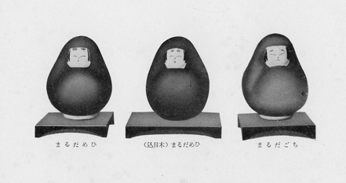

「仙臺の方言」と「土佐の方言」へはそれぞれ斯道の大家の序を頂戴したが、今度の隨筆集の序はどなたに御願ひしようかと出版者に相談した處、御良人がいゝでせうと曰はれました、どうかよろしくとの申出である。一寸考へた、亡妻を褒める文（蘇東坡の如き）はある、妹の詩集や遺稿への序（袁子才の如き）はあるが、現に生きて居る女房の文集に序を書いた例は見た事がない。「涵芬樓古今文鈔」の中、序跋は十二册に亘り五六百篇もあるが、こゝにも一篇も無い。しかし若い昔の、はにかみ勝ちの自分でもない、先例がないからとて止めるにも當るまいと考へて筆を執る。
此書に收めてあるものゝ中、若干はすでに種々の雜誌に載つたものであるが、亡兒の思ひ出の若干部分は全く新たの執筆で、私にとつては最も感慨の深いものである。子を失ふといふ人世無上の慘苦を味つた方々へ多少の慰安となるかも知れぬ。
「掃除や洗濯のひま／＼に襷をはづして、遂にかやうな詰らぬものを書いた」とは、此著者が大正八年に出版した「仙臺方言集」の跋文の一節であるが、此書も同樣に家事の片手間に成つたものである事は曰ふ迄もない。家庭の主婦としてどれ程内助の功があるかは別問題だが、少くも内妨の害だけは無かつた事をこゝに保證して筆を擱く。
昭和十五年十月
土井晩翠
［＃改丁］藪柑子物語
私は四五年前から發心して、折々繪筆を取る、そして特に藪柑子を描く。本書の扉の未熟な繪を見られる方々は、私の押しの強さに驚かれるであらう。實は私自身でさへおどろいて居る。
今私が繪をかき初めた其動機を次に述べる。昭和九年の秋、我國方言學の權威東條先生の御勸めもあつて、私は故郷の土佐の方言を蒐集する爲めに、四十日程高知市に滯在した。其折主人が第二高等學校の校命で大阪及び高知の高等學校視察に來た。私の母校高知第一高等女學校が校歌作成を依頼中であるので、其を機會に生徒の爲めに一場の講演を主人に依頼した。
十一月十日定刻に主人が校長に導かれて講堂に入る時、私も續かうとした、其時思ひがけもなく主人が振り返つて、
『何も特別な話をするのでもない、發音の正しい高知で、わざ／＼ズー／＼辯を聞く事もあるまい』
といふ、『私に講堂に入るな』の意である。勿論笑談の口調で云ふのだから關はずに入らうかとも考へたが、素直に其言葉に從つた方がよいと咄嗟に思ひかへして私は直に外に出た。
校庭には人の影もない、私は其靜かな校庭のあちらこちらを見廻した。一隅に職員生徒の丹精であらう、可成ひろい菊畠があるのを見附けた。私はそこへ歩み寄つて其花のゆかしい薫りととり／″＼の色と姿にうつとりと見入つた。
少時して我にかへつた私は、今夫が我が母校の愛する生徒に對して話をして居る此時、ぼんやり菊を眺めて時間を過しては濟まないと氣がついて、急いで講堂入口に歸ると、室外に聲が洩れて、丁度校長の紹介が終つて、主人の話の始まる處と知つた。私は喜んでぴつたりと扉に身をよせて一語も聞き洩すまいと夫の話に耳をたてた。話は一時間許りつゞいた、其話の一節――
『――學問や藝術の土臺工事と只今申したのは、建築に例をとれば、コンクリートの土臺工事、これが確りしないと全部構造が巧く出來ません。よい實例がありますから御參考にお話しませう。
内務省の傳染病研究所に梅野博士といふ偉い方がありました。立派な仕事をなさつて昭和五年に亡くなられたのですが、此博士は若い時から義太夫が好きで斯界の大家であつた大隅太夫に稽古をつけて貰つて居ました、此大隅太夫は壺坂の觀音樣の靈驗の淨瑠璃を初めて節つけして有名な豐澤團平の弟子であります。或時梅野博士が其お師匠さんに「どんな修業をなさいましたか」と問はれると、お師匠さんは次のやうに云はれたさうです。私といふのは大隅太夫の事です。
「私が其昔大阪で淨瑠璃を稽古した時に太閤記十段目をお師匠さんに教はつて、毎日毎晩必ず此十段目を語れ、怠つてはならんぞと嚴しく命令せられました。それで毎日毎晩太閤記十段目をやつた、やりもやつたり三百六十五日毎日毎晩やつた、そしてそこで、お師匠樣何か外の物をやらして下さいませ、といふとお師匠樣は、生意氣云ふな、わしの云ふ事を聽けと云はれる。それでもう一年續けて十段目の稽古をやつた。二ヶ年過ぎた、お師匠樣こんどは何か外の物を、といふと、もう少し、といふ。あゝ仕樣がない、師匠は無理を云ふものだから、と滿三年近くやつたけれど到頭かんしやく玉が破裂した。もう辛抱しきれない、こんな師匠はこちらから破門する、といつて逐電した、汽車のなかつた昔大阪から東の都をさして、名古屋迄來た時懷中が淋しくなつた。そこの粗末な宿屋でぶら／＼して居る中に段々勘定がたまるが拂へない。そこで宿屋の亭主に、一體お前はどうする積りか、何か藝はないかときかれて頭をかき乍ら、太閤記十段目だけは一寸語れますが、といふ、名古屋はさういふ事が盛な處だから、丁度今何々亭に義太夫の會があるから一つ出て見るがよい、それでは、といふのでやつて見ると殆んど三ヶ年毎日毎晩やつた十段目だから、其の出來榮はかなり立派であつたと見え、名古屋市中の大評判となつた、どうしてか大阪に居る師匠の耳に入つた。そして師匠が、それ見ろ、と云つて名古屋へやつて來た。
『どうだ師匠を破門してそれでよいか』
『恐れ入りました』
それから師匠が大阪へ連れ歸つてみつちり修業さしてくれました」
右は大隅太夫の告白であります、かうして日本で有名な義太夫語りとなつたのです。皆さんこんな辛抱が出來ますか、これ程の辛抱をする忍耐がなければいけません。これは作話と思はれるかもしれんが、さうでない、梅野博士が亡くなられた折の、或る東京新聞に出て居たものであります、云々。』
私は右の話に大に感動し、わが年齡を忘れてこれからでも何かの基礎工事を初め度い、そして如何樣にも努力して次に母校を訪ふ時は、今日の主人の話を我身の體驗として多くの生徒に示し度いと決心した、決心はしたものゝそれに就いてはなす事もなく其儘一年餘の歳月が流れた。
昭和十年の年末に近い或る日、同窓生今井美枝子姉の來訪をうけた、仙臺野砲聯隊長の御主人が久留米聯隊へ御轉任、それで暇乞の爲めの慌しい來訪であつた。
今井夫人は記念にとて二枚の短册を贈られた、私は此友の親切な贈物を手にうけて見ると、それが私の大好きな畫風の、附けたてがきである、寒菊の葉の露霜にさびた色などは如何にも巧である。私は日頃尋ねる人に計らず廻りあつたかの如き喜びを以て、豫てからの念願の基礎工事の事を話し『これを描かれた方は』と問ふと幸にも仙臺に住はるゝ京都美術學校出身の牧互秀先生だとの事であつた、そこで早速今井夫人に紹介を頼み、私は翌日互秀先生の門をたゝいた。
先生は風變りな老入門者に驚かれたであらうが、快よく引きうけられ、最初の手本として墨繪の藪柑子を奉書にかいて下された。
私はあつとおどろいた、藪柑子は私の子供の時からの大好きな植物である、五十餘年の昔、故郷の鎭守の森の杉の木蔭のあちこちに簇生して居た可憐な藪柑子の姿は、其所で遊んだ振り分け髮の友達の顏と一緒に思ひ出す程である、成人して後は一層これに親しみを持つた、其つゝましげな姿、その霜にも雪にもめげぬ艶のよい葉、その葉隱れにちら／＼と覗く眞赤な實など私は得も云はれず好きである。
それを知られる筈のない先生が、此植物を第一の手本として描いて下された事は、むしろ不思議に思はれた。
一週間後の次の稽古に私のさし出した繪は話にもならぬ下手なものであつたが、先生は一應それを直されて後、『では次に椿の手本を』と云はれる、私ははじめて主人の話の基礎工事を體驗したい望をお話しゝ、三ヶ年間は專心藪柑子のみ精進したい念願を打ちあけた。
それから一ヶ年餘の月日がたつて昭和十二年三月となつた時、私は用事が出來て高知に行つた其滯在中、第一高等女學校長は例によつて同校卒業の先輩としての私に全生徒への一場の話を頼まれた。
私は此機會に『上級の方々は聞いた筈だが、先年主人が皆さんの前で基礎工事の話をしましたね、憶えて居る方は一寸手を擧げて見て下さい』と訊いた、あげられた其手の數は私の豫想して居たより少かつた。
そこで私は先年の主人の話の要點を話して後『貴方がたの大部分が忘れて居る間に私は基礎工事の型丈けの一つの事をやつて見ました。私が此學校に學んだ頃は、圖畫は一番に不得意の學課であつた、其不得手な學課を此年になつて種々多端な中でやつてみても、どうにか物になる自信がつきました。今此所で描いてみませう』というて、かねて用意して置いた紙と繪具をひろげて、生徒の目前でぺた／＼藪柑子をかいて見せた。どうせ上手にかけはしないけれども、生徒から見れば祖母の年輩の私の勇氣に感じてくれたであらう、一同感嘆の聲をあげる、描き終へて、私は『先年主人が云うたやうに、基礎工事をしつかりやれば、あとは割合にたやすく物になります。皆さん奮發なさい』と結んだ。
初めの念願の三年は迅くに過ぎたが私は相變らず藪柑子をかいて居る、別項に書いた廢物利用の封筒にも、一二本これを早描きして居る、私がこれを描いて飽きないのを人々は不思議がつて、『藪柑子にとりつかれた』と笑ふが私は用事を早く片附けてこれをかく時間を得ようと何時も緊張して仕事をする事は誠にたのしみである。
今年の春、牧互秀先生が仙臺新寺小路の大林寺の杉の板戸十二枚に極彩色桐に鳳凰の繪を揮毫された。大林寺は私共の家の菩提寺である。其板戸の裏側に、祖先の菩提の爲めに白梅と藪柑子をかいては如何と、先生並びに住職が頻りに勸められる、私は思ひもかけぬ事であつたが、遂に意を決し十五日間寺に通うて、其位牌堂にひろげられた大きな板戸に、二本の梅と六百本ばかりの藪柑子を、極彩色に描き上げた。我ながら心臟が強過ぎたと思ふ。
此の隨筆集の題名に因み扉に描いた藪柑子の由來は以上の通りである。
（昭和十五年七月稿）
［＃改ページ］
［＃改丁］
姫だるま
私が其昔、初めて仙臺へ來た時、生國土佐との氣候風俗習慣の差はもとより、器物玩具に至る迄の相違を興味深く目にとめた、兩國の達摩の對照も其一つであつた。
仙臺のそれは、大きく見張つた丸い眼、強く結むだ一の字或はへの字の口、短いけれどもはね上つた、いかつい口鬚のある、偉さうな男達摩である、私はこの達摩を見る度毎に故郷の女達摩の赤地に花模樣の着物の優しい姿を（土佐では起上り小法師といふ、略して起上り又おきあといふ）懷しく思ひ出しながら、いつしか明治大正が過ぎて昭和の御代となつた。
昭和九年の秋、別項藪柑子物語りにも書いた樣に、方言蒐集の用事で高知に一ヶ月餘滯在した事があつた。其折ふと多年あこがれの女達摩をもつと高尚に改良して方言集の口繪にしたらと考へついた、それから早速島内松南畫伯を御訪ねし、私の希望を委細御話して御揮毫を乞うた、やがて出來上つた其繪を見ると全く私の理想通りの優しい上品な達摩であつた。私は大滿足で翌年の春、春陽堂から出版した「土佐の方言」の口繪にそれを木版手刷にして入れた。
この故郷の女達摩と私とは、いはゆる因縁とでも名附くべき、目に見えぬ縁の糸に結ばれて居るのであらうか、次第に親しみを増して意外の事に發展して行つたのである。
私の母校の高知第一高等女學校は、かねてから校友會館新築の計畫があつた、會の幹事委員はもとより母校愛に燃える校友會員有志は、絶えず此事を念頭において機會のある毎に努力して建築資金を作つて積み立てゝ置いた。
扨いよ／＼多年の計畫が實現せられる日が近づき、かねてから工風を凝らしてゐた校友會館の間取りの注文をして、專門家に設計圖を作らせ、其建築費の見積りを聞くと、校友會での積立を全部出してもなほ數千圓の不足があるとわかつた。
直に役員會が開かれ、如何にして此不足額を得るかに就いて協議した。丁度其折私は高知に歸省中だつたので、其會議に出席して共に頭をひねつたのである。
五千に近い校友を持つ我會であるから、それ丈けの金は銘々が母校を愛する心さへあれば出來ぬ事はない筈である、どうか寄附によらず、會員の努力によつて其金を作らうではないか、校友會館新築といふ、一つの目的の爲めに會員全體が働くといふ事は、學校の爲めにも、會の爲めにも有意義であるから、と私が申出た處、早速賛成せられた、それで私は自然其働きの指導をせねばならぬ責任を感ずるやうになつた。
其時私は、其資金を得る方法に就いては、未だ何の考へも計畫もなかつた、然しかういふ時には、全く私心を去つて、眞心をこめて其爲めに祈りつゝ最善の努力をする時は、必ず目に見えぬ大きな力に導かれ、其道が自然に開けるといふ事は、度々の體驗によつてすつかり證明せられ、信じて居たので、日夜心をこめて祈りながらいろ／＼工風を凝らした。
ふと心に浮むだのは、松南先生の起上りの繪であつた、私はこれを日本婦人の理想の型として何か考案して見ようと思つた。人生は、樂しく嬉しい事ばかりではない、時には腹が立つて目に角をたてる事もあり、又落膽して額に八の字をよせる事もあるが、これは褒めた事ではない。すつかり修養が積む時は、どんな場合にも人に不快を與へる樣な見苦しい顏や、陰鬱な暗い顏をせずに朗かな顏をして居られる筈である、又人生は、順風に帆を上げる樣に何時も得意の時代ばかりではなく、誰でも思はぬ失敗や不幸が廻つて來るものである。其時丁度達摩が素早くころりと起き上るやうに、早く氣を取り直して立ち上る丈けの勇氣がほしい、といふのが私の平素からの希ひであつた。
我國人形界の權威者、東都淺草橋の吉徳商店主山田徳兵衞氏とは、別項に詳しく記してある『鯉幟の會』の關係から親しくして居るので、歸途に逢つて其事を話すと、大いに共鳴せられ、早速其達摩人形の考案と製作に取りかゝり、幾度か研究改良の結果、遂に私の注文通りの上品で可愛い、一寸八分の練り製の人形が出來上つたのである。
それに『姫だるま』といふ名をつけ、和歌も作つて貰ひ、其下の句を金文字で臙脂色の其達摩の背にやさしく平假名で書かせた、なほ仙臺名産の埋木を廣く紹介かた／″＼これで臺を作り、小さい桐箱入りとして賣り出した、箱の中には二つ折りの説明書を入れた、姫だるまの字と朱色の可愛いだるまとを表側に書き、裏面には
日の本の女性のかゞみ姫だるま
内強うして見るめやさしき
の歌をかいた、又その内側の説明文は次の通りであつた。内強うして見るめやさしき
『本校出身土井八枝子が古來の土佐の名物の起き上り小法師に多少の考案を加へ、表はやさしく内の強い日本女性の理想的象徴としようとして、人形研究家山田徳兵衞氏に諮つた結果、同氏の努力に依つて出來たのが此姫達摩であります、衣裝は土佐の珊瑚色、臺は仙臺名産の埋木であります。
昭和十年夏
高知縣立第一高等女學校
校友會』
これが非常に好評なのに力を得て、更に木目込の縮緬の衣裝の特製品をも造つた。
姫だるまが生れた翌年、『稚兒だるま』が出來た、これの色は朱、樺、紫、青、緑の五種とし其背には、
若き子の理想の型の稚兒だるま
強く正しく屈せず倒れず
の歌の下の句を銀文字で書かせた。強く正しく屈せず倒れず
この二つの達摩は高知丈けでなく廣く世上に賣出された、いつか東京の三越の人形棚の中に此人形が澤山竝んで居るのを見つけた時は我が子に廻り會つた思ひがして嬉しかつた。
其後姫だるまを染め出した手拭を作る事を考へついた、人形と違つて安價な實用品である。其頃は普通の純綿手拭は十錢位であつた、利益はともかくもとして朝夕使ふ手拭の姫だるまのニコ／＼顏がよい働きをしてくれると信じたからであつた。手拭は普通の繪と違つて輕妙洒脱其上幾分ユーモラスな氣分もほしい、果して私の注文通りのそんな圖案家が見つかるであらうかと案じながら熱心にさがして居ると、それから間もなく浴衣と手拭の圖案にかけては我國第一人者といはれる宮川柯月園氏を紹介された。初めて逢つて見ると同氏は坂本龍馬先生の崇拜家であり、特に土佐にはよい感じを持たれて居るとの事である。私の四十餘年前に卒業した母校校友會に對する努力に氏は大いに共鳴して直に姫だるまの圖案製作を承諾し、又綿布專門の染色問屋神田の丁子屋商店を紹介してくれた。丁子屋は都鳥浴衣を染める店であると聞いたので、無條件で信用が出來た。仙臺に居る私でさへ都鳥浴衣が優美堅牢染の高級浴衣として、好評のある事はとうから知つて居た。
東都の有名なそれ／″＼の專門家が仙臺に居る私にかくも早く共鳴して努力してくれるといふ事は私の最初の考への通り目に見えぬ援助がなければ到底不可能な事であると感謝の思ひで一杯であつた。
扨て柯月園氏の圖案、丁子屋の染めで出來た美事な手拭を（但し一種では販賣に都合がわるいと思ひ、達摩の外に土佐名物長尾
 と帆傘船の三種を作つた）數百本高知校友會に送つた。
と帆傘船の三種を作つた）數百本高知校友會に送つた。母校々友會には少しも手拭の話はしてなかつたので、思ひ掛けのない三種の趣味豐かな手拭を見て一同歡聲をあげたとの事であつた。
折柄四國鐵道土讃線の開通當時で祝賀會もあり、遊覽の團體もあつて高知市は非常に賑はつて居た。其人出の最も多い高知公園にテント張りの校友會賣店を設け先輩の校友諸姉までが（私は明治二十八年第六回卒業）交代に出張して姫だるま人形と手拭を賣つて居るといふ報告をうけた時には、はるかにその光景を想像してその成功を祈つて居た。何分不馴れの仕事故「何々柄の手拭賣り切れ大至急百反注文乞ふ」などといふ高知からの電報が私のもとに屆く、私は丁子屋へ長距離電話をかけるなど、その時の種々の滑稽は今は樂しい思ひ出である。
私は日頃から手拭には趣味を持つて居たので、もつといろ／＼のものを作らう、上品で洒脱な郷土手拭を作つて賣る事は土佐の宣傳にもなるからと思ひついた、そして次々と考へては其圖案を頼み、染め上つて來るのを樂しんだ。
いづれも繪の上部にヨサコイの歌をかき入れたので、誰れに相談もせずに一人でヨサコイ手拭と名づけた。其歌詞に嫌味がなくて好きなものは、在來のものを其儘に入れたが、竹林寺、長尾
、帆傘船、横綱犬（鬪犬の鬪の字の感じがよくないから横綱犬と名をつけた）などは、主人と相談して歌を新作した。『土佐の高知で見せ度いものは浦戸入江の帆傘船 ヨサコイ／＼』
『土佐にや名物横綱締めた犬も居るぞよ來て見やれ ヨサコイ／＼』
など又後段に云ふ友千鳥浴衣が出來て其發表會に高知に行つた時、一夕校友會の幹部は私共の爲めに歡迎會を開いてくれた。名物
『嫁女よく見や着物でさへも褄（妻）が出過ぎちや見ともない ヨサコイ／＼』
『醫者の書生が蚊帳質におき蚊が喰ふと利がくふ（化學と理學）で苦勞する ヨサコイ／＼』
私は此等の歌を聞いた時、前者は我々家庭婦人の教訓にもなる事故、又例の手拭に染める事を考へた（其後度々高知に歸るが、私はそれ以來其歌を誰れからも聞かない、それで恐らく彼の自作であつたらうと氣がついたので、昨年歸つた節、當人に逢つて聞いて見ようとしたら、もう彼は此世に居なかつた）そして柯月園氏に圖案を乞うた、やがて出來上つた其圖案を見て、流石はと思はず手を拍つた、嫁女はうい／＼しい大丸髷に長い笄をさした紙の雛で、其着物の千代紙の配色など如何にも其歌との調和がよかつた、大喜びで澤山染めて高知にもおくり自分も手土産に使つた。
此ヨサコイ節は高知の俗謠として殆ど全國的に知られて居る。其中『土佐の高知で』と歌ひ出す『坊さんかんざしの歌』は代表的の物である、たとへ校友會の發賣にもせよ、ヨサコイ手拭と名をつけたからにはこの歌を入れる可きであらうと私は幾度も考へたが、話が話なので（五台山竹林寺の若い僧と、麓のいかけ屋の娘お馬といふ美人との戀物語）學校の手拭としては如何かと考へて見合せて居たのだつたが、この嫁女の出來ばへですつかり安心してこれの圖案を頼んだ。
出來たのは豫想以上に垢ぬけのしたものであつた。一筆がきの傘の下に、上品な若い僧と白い手拭をかぶつた美女との首だけをかいて相合傘の意をきかせ、さつと一刷毛でぼかした樣な擬寶珠と欄干で播磨屋橋を［＃「播磨屋橋を」は底本では「播摩屋橋を」］見せた處、如何にもさつぱりして少しの嫌味もなく卑俗の感じもしなかつた、私はよろこんで、此の代表的の『坊さん簪』のを最後にヨサコイ手拭は十五種で一段落とした。
（これは後の話であるが、高知の手拭の成功を喜んで仙臺のを初めた。第一に松島を、次に躑躅ヶ岡の枝垂櫻と天守臺の招忠碑とを描いたものを作つて大好評であつた。次で政岡と宮城野の萩など五種の圖案が出來て染めやうとした處、禁止令で圖案は今むなしく私の手許にある。）
校友會を生命として居る田中兎喜代さんと私との文通は其頃特に頻繁であつた事はいふ迄も無い。此手拭と達摩の利益を聞くと、いくら澤山賣つたとしても、金高の少いこれ等の利益では、私共の願つて居る校友會館建設費の不足額に達するには中々容易でない事がわかつた。
我が校友會の同志は、一つの目的の爲めに力を合せて働く事の愉快さが、もう充分に解つたと私は信じたので、更に進むで校友會の會誌友千鳥を名とした高級浴衣を會員全體の努力によつて賣り出す事を決心した、手拭ばかりでなく浴衣にも趣味を持つて居たので、よい柄で堅い染めの浴衣を作るといふ事は自分の樂みでもあつた。
直に圖案家と染問屋に此事を諮ると喜んで賛成してくれた、それは昭和十年の忘れもせぬ十二月十五日であつたが、丁子屋の田部氏の言によると、來年の浴衣を作るにはもう時期が後れて居る、たゞ有りふれの安物なら其年になつても出來るけれども、柄と染と共に責任のある優秀な浴衣は皆前年の歳末迄に見本帳が手廻しよく用意されねばならぬといふ事であつた。
けれども私は、どうしても友千鳥浴衣は來年の夏に着る爲めに作り度い、目的の資金が明後年の浴衣から生れるのでは、あまりに待遠い事を話して頼んだ、丁子屋は『それなら馬力をかけて御期待に添ふやうやりませう』としつかりと引受けてくれた事は、何とも云へず有難く頼母しかつた。
直に圖案家と柄の相談をはじめる、第一に作つて貰つたのは姫だるまで大小いろ／＼のこのだるまの圖案が五種出來た。此千友鳥浴衣は高知に因む柄を、全體の半分は是非入れ度いとは私の初めから念願であつたので、故國の特種のものを次々と思ひ出して見る、そして繪端書や寫眞を高知から送つて貰つたりして、私は素人の圖案をする、それが柯月園氏の專門的な腕によつて本格的な浴衣の圖案となる。
或時ふと高知新聞中土佐特産寒蘭の記事が目につく、私が土佐に居た明治三十年頃迄には寒蘭の名も聞いた事がなかつたので、一切わからぬ乍らも、私は其寫眞入の寒蘭の一文を直に切りぬいて柯月園氏に送つて圖案をたのんだ。
此寒蘭から私は故郷の草木を聯想した、なつかしく思ひ出したのは楊梅であつた。六月頃出るその紫がゝつた赤い實、それに鹽をつけて食べたものである、今のやうに苺へ砂糖やミルクをかけて食べる贅澤などは思ひもかけなかつた。靜かな高知市中を賣り歩く其呼び聲の『
柯月園氏と丁子屋商店との同情と努力とによつて七十五種の趣味豐かな浴衣が出來て『友千鳥浴衣』の登録もすんだ時の嬉しかつた事は今思ひ出してもほゝゑまれる。
かくて友千鳥浴衣の發表會が三月中旬に高知で催される事になり、主人の許しを得た私は、東京から、宮川氏、都鳥染工場主の中村愼三郎氏と友千鳥浴衣主任の田部政男氏の四人連れではる／″＼高知に出かけたのである。其汽車中私は浴衣に關するいろ／＼の知識を與へられた事はいふ迄もない。
高知校友會では其七十五種の浴衣をかけて五日間陳列會をし即賣もした。
高知新聞では『燃える母校愛から生れた友千鳥浴衣』といふやうな大きい見出しの寫眞入りの記事で三日も續けて紹介してくれた、それで見本帳で注文をとりに行くのに大變樂であると會員達は高知新聞社に感謝して居た。私の同期生の友が其の時の話に『私は見本帳を持つて町内を一軒々々歩いて注文をとるが、皆高知新聞で承知して居るから、こちらから何もいふ事がない、先方から「誠に結構な事で、どんなにか御嬉しいでせう」というて必ず買つてくれる、新聞の勢力といふものが、今更ながらわかつた』と、喜んで話した事も思ひ出される。
校友會では中年の働き盛りの會員や元氣な若い會員はいふ迄もなく、老人組も若い者に負けじの元氣を出して働いた事は、私の限りない喜びであつた、其後仙臺に居る私のもとに屆く手紙の中に『孫を載せる乳母車で、注文をとつた浴衣を配達して居る』といふ同期生弘光慶子さんのたよりと『田中先生は電車の中などで友千鳥浴衣を着て居る人を見ると知らぬ人にでも「うちの會の浴衣を買うてつかさいましてありがたう御座います」と禮をいはれた』といふ若い會員からの便りなどは私を感激させた。
京阪神支部の校友會（名は藤友會）では四月一日から三日間花々しく大阪瓦斯ビル樓上で友千鳥浴衣の發表會を催した。其時の藤友會長片岡文子さんは瓦斯ビル社長の夫人である關係上特に厚意を寄せられ其巧な陳列振りに『流石は大阪ね』と共に會場を訪うた田中さんと感嘆の笑みをかはした。會場内の大木の櫻の造花と、友千鳥浴衣を着た高島田の令孃姿と、洋髮美人の等身大の人形とは、今でもはつきり目に殘つて居る。
東京支部でも陳列や販賣に大いに努力された、内地丈けでなく朝鮮臺灣大連などの支部でも、この爲めに會員全體が一つの心で働いて居るといふ報告を嬉しく聞いた。
翌二年目には百種を作つた。私も餘程馴れて反物を包む文庫に柯月園氏の波に友千鳥の繪と、主人に作歌してもらつたその歌を、東京支部長村上いく子さんに願つて其達筆を振つて貰つたりした。其歌は
睦み合ふ友を力に濱千鳥
荒き波風凌ぎ飛ぶらむ
といふのであつた。更に反物を包む包裝紙の意匠まで考へるゆとりが出來た。荒き波風凌ぎ飛ぶらむ
此友千鳥浴衣は、校友會に限らず、他の團體も利用の出來得る樣に丁子屋と特約して置いたが二年目には、津田英學塾同窓會で津田先生の記念會堂建設資金の爲め販賣したいと申込まれた。
私は明治三十四五年の頃主人の洋行中、其頃は女子英學塾と云つて、麹町區元園町の醍醐侯爵邸の建物を其儘に、校舍と寄宿舍にあてられた頃の塾に學んで、短い間ではあつたが、親しく津田先生の教へを受けた關係上、同窓會の會友となつて居るのである。一度家庭を持つた私が、再び寄宿舍住みの學生生活にかへつて、緊張して勉強した其樂しい思ひ出は、三十五六年を過ぎた今でもはつきり心に浮ぶ。
津田先生から教へられたのは英文法と英文和譯、譯の教科書はアチック・フィロソファーとイナックアーデンとであつた。今其時の懷しい思ひ出の一つ二つを書いて見る、イナックアーデンの時間に、イナックが故郷に歸つて見るともうアンニーはフィリップの妻となつて居るあたりで、先生の御眼の中の涙を見つけた事があつた。氣輕で人氣者のＳさんはあれは『フィリップに御同情の涙よ、きつと、先生も何かさういふやうな御經驗がおありになつたぢやないの』『まさか』などゝ小聲の會話もあつた。勿論其當時は寄宿生も小數であつたので先生と食卓を共にした。津田英學塾の寄宿舍では今でも左樣であらうか、其時は會話の實地練習の爲め、食卓では一切日本語を使はぬ事になつて居たので、塾に入つた當時の私は『お醤油入れをこちらへ寄せて下さいませんか』といふやうな事すら、簡單には出ないので、お醤油をかけ度いお漬物に、かけないで食べた事なども思ひ出す。
其なつかしい津田先生の記念會堂の爲めに、少しでも友千鳥浴衣が御役に立つならばと、私は大喜びで先生の御名に因んだ梅の二三の圖案を急いで作り、見本帳に入れて貰つたりした。
友千鳥浴衣の見本帳は毎年六十部づゝ作られた。長さは一反を二十に切るので、百柄なれば三百反が一尺四五寸の小切れにされるわけである。丁子屋の好意で作つて貸してくれる、此見本帳は各地で會員の手から手に渡つて、注文をとるのに大働きをする、云はゞ私共の働きの一番大事な役者である。私は此功勞者の見本帳の最期を一番有意義にするには、どうしたらよからうと頻りに考へて居た。
ふと心に浮んだのは、先に見舞つた事のある愛生園であつた、そこの醫官の小川正子女史とは文通を續けて其几帳面な性質、筆まめ、手まめな事も解つたので、此方ならば園の子供の爲めに見本帳を利用する色々の面倒を喜んでして下さると見込んで、私は其事の相談の手紙をかいた。
案の定、女史から大喜びの返事が來た、私は喜んで丁子屋店主に、毎年愛生園に友千鳥浴衣見本帳を寄贈の事を頼むと、一も二もなく快諾の返事が來る、そこで各地に散つて居る用濟みの見本帳は、直接に岡山縣邑久郡長島愛生園内小川正子女史宛送附され度しとの通知を、直接に或は校友會本部から出して貰つた。各地で今見本帳を持つて居る人々の中には、愛生園の事等一切知らぬ方もあるであらうから、さうした手數をする事によつて、幾分なりとも同情と關心を持つ樣になれば幸だとの願ひからであつた。
果して小川女史は、女醫、保姆、看護婦の方々と共に丹念に見本帳を利用され、男兒の簡單服に、女兒の喜ぶ長袖の着物にして下された。その見本帳の小切れの數などの細かい報告と、新しい着物を着た子供の寫眞とが、毎年丁子屋と私の許に送られる。私はその小切れをはいだ新調の着物を着た不幸な子供等の、嬉しさうなニコ／＼顏を見ていぢらしさに、思はず涙を催した。
小川女史が、本書の爲め書かれた跋文にもある通り、二年目には、愛生園丈けで使ふのには多過ぎるから、他の同種の病院に割愛したとの便りに接した、私はこれを聞いて、將來はこの友千鳥浴衣見本帳が、日本全國の同種の病院の子女を喜ばせる事が出來ると考へ、はや其澤山の子供の喜ぶ顏迄を想像して、友千鳥浴衣の發展を願つて居たのであつた。しかし此夢も空しく消え、昭和十三年の夏活動の最中、製造も販賣も不可能になつた事は事變の爲め致し方のない事ではあるが、悲しく淋しい事であつた。
續いて本年は吉徳店から、だるま人形の底に入れる鉛がない爲め、此後は製造が出來ないとの通知をうけた。
しかし何といふ感謝であらう、最初の目的の校友會館は、已に立派に新築せられて居た。
昭和十三年二月十日、本校改築落成並に創立五十年の記念式が擧げられる事になつた、其の二つの祝典に更に校友會館落成の祝をも兼ねる事になり其招待状が屆いた、私は喜び勇んで高知に行つた。
二月十日の十時から、祝典は嚴に校庭に紅白の幕を張り廻らされた大式場で執行せられた、（來賓父兄、校友會員及本校現職員生徒の多數は講堂に入り切らないので）此式に校友會員の出席者約五百人であつた、此記念式に次いで十二日に慰靈祭（舊職員、卒業生、在校中死去の生徒諸靈合計七百十一柱の爲めに）十三日以後記念音樂會、運動會、展覽會等一週間に亘つての行事が行はれた。
其本校の喜びの記念行事中、校友會員は校友會館を我家の如くに集つて、落成祝のたのしい會合をはじめ種々の催をやつた。
最初に私が校友會館に入らうとして、其玄關側の堂々たる大蘇鐵を見た時、早や嬉しさに眼の中が熱くなつた。其蘇鐵の前に立つて感慨無量の氣持ちで校友會館を眺めて居ると、中から賑やかな笑聲が洩れて來る。
急に私は四十餘年前の世界に引きもどされて、此學校に學んだ頃の少女の心になる、そして足取り輕く廊下を小走りして、突きあたりの日本室に入ると、其賑かな事、遠來の舊友を圍むで懷しげに手を取り合うてさゞめいて居る、其幾群の校友の中に最年長者の本井鹿子さん（第二回卒業七十一歳）を見つけた、本井さんは老躯も厭はず神戸から百溪光子さん（第四回）と一緒にはる／″＼母校の此祝典に參列されたのである。其群の中には本名より御先祖樣で通つて居る第一回の板坂たづ子さんと第三回の織田徳子さんの顏も見える、私の顏を見附けて、腰の曲りかけた友達が輕々立つて來て、昔のクラス會の時のやうに手を引つ張つて其老人の組に入れる。
落ちついて見渡すと東京、京阪神及縣内の交通不便な僻地から隨分澤山集つて居る、其母校愛のあらはれを見て、私は大に心強さを感じた。この意義の深い校友の集團の中に、大阪で女帶の繪描きとして有名な山本香泉さんも居た。
私共は毎日校友會館に集つて居る、其三日目の午後、大阪から來て居る黒田幾久子さんが『うちの會の姫だるまを考へて下された土井さんがはる／″＼來て居られる、香泉さんも居られるからよい記念に色紙に達摩の合作をして頂いては』といふや否や一同手を拍つて賛成する。
これより先私は、前項藪柑子物語りに書いた樣ないきさつで、昭和十一年の春から初めて畫筆をとつて重に藪柑子をかいて居た、それから一年餘り過ぎた十二年の夏、ふと思ひついて戰地へ送る慰問袋に入れる爲めに、松南先生と柯月園先生の姫達摩の繪と姫だるま人形とをお手本にして、自己流の下手な姫達摩を描いた事があつた、それが意外に喜ばれたのに勇氣つけられて仕事の骨休めには、藪柑子と共にくる／＼と一筆がきの姫だるまを描く事を樂しんで居る。
一體私は、何でも早く實際の役に立て度いといふ主義の、押の強い人間であるが、未だ達摩をかき初めてから一年にもならないので、この申出に承知は出來なかつた、けれども快活な土佐の女性が雄辯高聲で四方からすゝめたてる。
其うちに私は持前の押しの強さが頭をもたげた『未熟な私が一人で描くのでない、本職の畫家の香泉さんと一緒にかくのだ、私は香泉さんのだるまのあしらひ式に小さくかけばよいではないか、このよい練習の機會をのがすのは惜しい……』と考へて來たので遂に下手な筆をとつた、それで香泉さんに眞中に大きく朱だるまをかいてもらつて私は其横に恐る／＼小だるまをかいた。其校友會館でだるま揮毫の事が高知新聞社に知れて寫眞をとりに來た時も、私が身體を小さく屈めて寫して居るのは其折のよい記念である。
扨此合作色紙は、希望者が多くて分配に困つた結果、誰れやらの發案で、校友會で一枚五十錢宛に賣る事にし、色紙代を差引いた其利益は、校友會が最も有意義に使はうといふ事になつた。校友會への奉仕とはつきり決ると、又勵みが出て校友會員がぐるりと取りまいて見て居る中で、いかに南國とは云へ二月半といふに、私共は汗を流しながら繪筆を走らせた。素人で未熟な私でもこんなにつゞけてかくうちに、度胸もすはり筆馴れもして、小さい達摩が少し大きくなつて來たのはをかしかつた。色紙はいくら描いても飛ぶ樣に人々の手に渡つて行く、たうとう一日半ぶつ通しでかきつゞけた。
其賣上高を計算して見ると約壹百圓あつた、私共は二百枚の色紙を描いた事が分つて二人で驚きの眼を見合せた。其中から二十圓許りの色紙代が差引かれる。其二十圓は若い校友達が祝賀運動會の時の賣店で働いた利益で補つてくれて、又壹百圓になる。其使途に就て田中兎喜代さんが『遠來のお二人にこれ程骨を折らせて出來た尊いお金であるから、校友會は最も有意義に使はねばならぬ。重ね／＼喜びの記念に、此金を全部お菓子料として、白衣の勇士を慰問しては如何』といふ。皆々大賛成で直にそれときまる。そこで香泉さんと私とは其お菓子料に添える爲めに、又一息筆を走らせて三十五枚の色紙が出來た。
かくて新舊のわが校友會員の代表は、高知市外朝倉の陸軍病院を訪うて川北病院長に前記二つの慰問品を御渡して大に喜ばれたのは嬉しかつた。それから各室を慰問し記念の撮影をして別れた、其時の高知陸軍病院長軍醫中佐川北伊勢吉氏は一昨年から中支へ轉勤せられ、川北部隊長として大に活躍して居られるが、私は其校友會からの御慰問以來ずつと通信を續けて居る。其後も白衣の勇士を慰める爲めにとて、だるまの揮毫を望まれるが、この畫に添へる歌は前記姫だるま人形にかいた歌では不釣合なので、主人に頼んで私のだるまの繪の上に、次の歌を作つてかいて貰うて送つたりして居る。
七轉び八起きのだるま見る如く
やまとますらを皆起き上る
或時牧互秀先生門下の二三名と共に仙臺陸軍病院へ揮毫慰問に仲間入りして白衣の勇士方の前で繪をかいた事があつた。一筆描きのだるまは、不倒翁の起き上るの縁起の爲めでもあらうか、大變に人氣がよかつた。やまとますらを皆起き上る
其後も機會のある毎に團扇や紙片に畫いて、兵士方へ慰問の贈り物としてゐる。
昭和十年に松南先生の繪から考案して、始めて世に出た姫だるまが手拭となり、浴衣となつて多くの人々の役に立ち、更に私に繪筆をとらせて勇士に慰めを與へ、皇國への御奉公の一端なりと御手傳ひさせて頂いてゐるといふ事は、何といふ不思議な發展であらう。唯々感謝の外は無い、私は此後も絶えず姫だるまを描く覺悟である。
（昭和十五年十月）
［＃改丁］追憶の數々
私は高知縣の片田舍佐川といふ小さい町に生れ、六歳で寺小屋式の教育法が多分に殘つて居た頃の佐川小學校に入學し、八年の課程を終へて高知市に出で、高知高等女學校を卒業してから二年の後、初めて上京し、上野の音樂學校に入つた。
其頃はいふ迄もなく、西洋音樂は普及して居らず、入學志願者も至つて少なかつた事とて、何の準備もしない私が、豫科に入學が出來たのは、今思ふと不思議なやうである。
其當時、後で有名になつた『荒城の月』の作曲者瀧廉太郎氏は、研究科の生徒であつた。
私は豫科を卒業し本科生となつて間もなく、宮城縣人の土井に嫁した、私の兄は當時唯一の帝國大學（今の東京帝國大學）英文科の卒業で、土井は同科の一年先輩である。結婚の翌年土井は第二高等學校の教授となつて赴任する事となつたので、私は半途退學して仙臺に住むべく上野驛を立つたのは、忘れもせぬ明治三十三年二月十七日の未明であつた。
其頃は我國のいづれの鐵道線路にも急行列車などはなく、どんな小さい驛にでも一々停車したものであつた。それで正午に近い頃やつと白河に着いた。
白河の名は、小學校時代以來、歴史や地理の上で度々聞く名で、深く印象づけられて懷しさを感じて居る。其白河に今着いて、昔の白河關時代を想像し、又『都をば霞とともにいでしかど秋風ぞ吹く白河の關』の名歌を聯想して居ると忽ち其聯想は斷ち切られた。それは窓外を呼び歩く物賣りの發音違ひが耳に入つたからであつた。
私は仙臺の發音の正しくない事は豫てから聞いて居たけれども、東京仙臺間のやつと半分を過ぎたばかりの白河で、もうこんなに發音が違つて居ると知つた時は何となく心細かつた。
そのうちに雪はしん／＼と降つてきて、福島驛に着いた頃は、見渡す限りの銀世界となつた。私は初めて見るこの大雪と驛々で聞く
 餅
餅扨いよ／＼仙臺に住む仙臺人となつて見ると、其方言が想像以上にわからぬ、其頃の仙臺にはまだ明治前に生れた老人達が澤山居たので、今日全く廢語となつた多くの方言が使はれて居た。
大に困つた私は、いろ／＼考へて居るうちに、國々の言葉には微妙な意味のあるものだから、私は仙臺人となつた以上はまづ仙臺の方言を憶えねばならぬ、と氣がついた。私が生國土佐の發音の正しいのに優越感を以て、仙臺辯を輕蔑する樣な心があつては、土井家の人々は如何に不快に思ふであらう、又これから交際せねばならぬ此土地の人々もよい感じは持たないであらう、言葉や發音を研究するのは其道の學問がある、私は完全に仙臺人となり、土井家の嫁となり切ればよいので、シをスと言はうが、イとエを混同しようが私の今の立場としては何も關ふ事はない。早く仙臺辯を覺える事が急務だと、一人で決心した。
それからは、何時も手帳を懷にし、それに書きつけて先づ聞く事を、次に話す事を憶えた。一年位たつと、もう相手によつては仙臺言葉で話される樣になつた。私はこんなにして、なる丈け早く此土地の風習と土井家の家風をのみ込まうと努力した。とは云へ何分にも若くて行き屆かなかつた自分であつた。今思ひ出しても冷汗の出るやうな失敗も時々やつた。けれども大體に於て仙臺の方言を憶える事を熱心に心がけた事は、よい結果を生んだ。
私が仙臺へ來て間もない或日、勿體ない程やさしい姑に連れられて、親戚を訪問する事になつた、今の樣に美容院などあらう筈はない、髮結が來て赤手柄の大丸髷を結つて歸る、勿論化粧着附は自分でするのであつた。其時姑は一つの簪を箱から取り出した、その簪は祖母が土井家へ嫁した時に持つて來た物で、其當時は贅澤な物であつたとの事で、姑は大切にこれを
 した由、そして、『これは娘達が欲しがつたけれども、誰れにもやらずに、長男の嫁にやらうと思つて大切にしまつて置いたものだ』と云はれた。私にこれをさせ度い御心と直感した。
した由、そして、『これは娘達が欲しがつたけれども、誰れにもやらずに、長男の嫁にやらうと思つて大切にしまつて置いたものだ』と云はれた。私にこれをさせ度い御心と直感した。しかしそれは大變流行おくれで、正直にいへば、
し度くなかつた、今時こんな簪をさして居る人はない、こんなのをさしたら、人が笑ふであらうとしばらく思ひ迷つて居たが、はつと氣が着いた。人に笑はれて姑を滿足させる事と、人にほめられて姑に輕くても失望をさせる事と、かう二つを比較して見てどちらを選ぶかはいふ迄もない事であつた。それから四十餘年たつて、多過ぎるといはれた黒髮は、鼠の尻尾程になつた今でも、私は大きな丸髮姿の［＃「丸髮姿の」はママ］自分と手づから簪をさして下されて滿足氣に見て居られる姑のニコ／＼顏がはつきりと目に浮ぶ。
其後一ヶ月程たつて姑と何かの談話中、私は初めて次の諺を聞いた『人は嬶がら、羽織は裏がら』（これは東北一般にいふ諺と後から知つた）私はじつと此言葉を味つて見た。
成程羽織の表が如何によい品であつても、裏との色の調和がわるく又裏の品質が劣る時は、羽織全體の値打がさがる。なほ仕立てのよい羽織は表と裏と毛拔きあはせになつて居る箇所はなく身頃の衿附の處でも八つ口でも裏は表より多少ひつ込むで居る、よい裏がちら／＼見える處に奧床しさがあり、羽織全體の價値がある。どうか羽織の價値を下げぬ丈けのよい裏にならねばならぬ。又表より出しやばつてはならぬと、母から聞いた此諺を、一生の我身の教訓としやうと深く心にとめた。
以上の樣な話は純粹な仙臺方言で母から聞かせられる、私は段々と仙臺辯を憶えて、しつくりはまつた合槌を打ち、又仙臺辯で話す事が出來る樣になつた。此項を終るに當つて仙臺言葉を一つ二つかいて見る。
前記の通り私は大きな興味を持ち、仙臺方言を一つ／＼帳面にかきつけて、名詞、動詞、形容詞を區分したりして覺えて居るうちに、仙臺辯は助辭を省略する事にふと氣がついた。其初めて氣のついたのは仙臺人になつてまだ間もない時の事であつた。田舍出の若い女中と臺所で料理中私は『酢を取つておくれ』というた處鹽を持て來た、又例のスとシの間違ひと初めは氣にもとめなかつたが、其後スとシをそんなに間違へなくなつてからも『酢を持つて來て』といふと定つた樣に鹽を持つて來る、それで私は初めて仙臺ではこんな時には『を』を省いて『酢持て來て』といふ事に氣がついた。それ以來『を』丈けでなく『の』『は』『が』なども省く事を知つた。例えば――
『此花のかほりのいゝこと』を『此花かほりいゝこた』
『私は今日は缺席します』を『私今日缺席しす』
『雨が降つて來た』を『雨降つて來た』
『これを貰つて行きます』を『これ貰つて行きす』など、それからひどく耳についたのは『先づ先づ』といふ句を澤山聞く事であつた。其頃の老人は『まづ／＼／＼／＼』と四つも重ねていふ事も珍らしくなかつた、
『まづ／＼／＼／＼よくごさつたこた、なんぼかまづ、お寒むござりしたべ、まづ早く炬燵さおはいんなえ、まづ／＼』（まあ／＼よくお出になつた事、どんなに、かまあ寒むかつたんでせう、さあ／＼早く炬燵へお入りなさい）
方言に就ての思ひ出は次から次へと心に浮ぶけれども、一昨年出版した『仙臺の方言』に、大體載せた事でもあるから、これで筆を擱く事にする。
（昭和十五年十月）
［＃改ページ］今朝の河北新報で關三郎氏の書かれた『仙臺訪問の啄木』といふ文章を興深く一讀した。今から丁度三十五年前の青葉の節に來訪の啄木さんの顏（血色のよくない、怜悧らしいの）が眼前に浮び出る。當時のことを、昭和十一年の啄木の忌日前來訪された盛岡市の小林茂雄博士の御望みにより、三十餘年も前のことであるから何もかも正直に御話した、その小林博士との問答をそのままこゝに書いて見る。
× × ×
博士『誠に突然ながら、今日午前仙臺放送局から頼まれて石川啄木に就ての話をするために今仙臺驛に着きました。（そのころ盛岡に放送局はなかつた）啄木は私と中學の同窓でして……啄木が昔仙臺に滯在中御宅を御訪ねしたことがわかつて居りますから、未だ世間に知られて居ない樣な御話でも得られるかと存じて放送前にお邪魔した次第です』
と主人に申された由で『啄木の事なら、私よりむしろ妻がお話した方がよろしいでせう』といふわけで私は呼ばれて主人と代つて博士と對坐した。
博士『今先生に申上ましたが何でも啄木に關するお話を承り度うございます』
八枝『あの頃の事を可成はつきり憶えてをりますから申上ませう』
博士『誰れの紹介で參上しましたか』
八枝『吉野臥城さんといふ立町小學校の先生で詩をかく方がお連れになりました。主人が私に申しますには「偉い詩人だ、二十歳の若さでもうこんな詩集を出版した」と申して、おみやげの「あこがれ」を示しました、私は一生懸命にオムレツ位の手料理を作つてビールを出した事を憶えて居ます。仙臺へ一寸立寄られたのかと思つて居ると中々發たれる樣子がありませんから、聞きますと「あこがれの原稿料を書店から送つて來るのを仙臺で待つて居られる」との事でした、それにしてもあまり長滯在になると折角の原稿料から旅館の支拂に大分ひかれるだらうと同情して居ました。宅へは二度ばかり來られたと憶えてをります。或夕方主人が不在で私が入浴中大泉旅店の番頭が持つて來た手紙、それに「大至急願用」とあるのに驚いて、女中が風呂場へ持つて參りました。私も「大至急」に驚いて浴室の薄明りで讀みました、その意は岩手山のお宅でお母さんが病氣重態との事でした。「今日着いた十歳になる妹の手紙を封入して置きますから、御らん下されて小生の意中を御察し下さい、旅費のないために私にとつて大恩のある母の死目に萬一逢はれぬとでもいふやうな事にでもなれば實に千載の憾みです（この千載の憾みの句は特にはつきり憶えてゐます）原稿料の來る迄十五圓御立換へ願ひ度い」と書いてあり、妹さんの手紙は粗末な藁半紙に片假名の鉛筆書で二枚一杯にお母さんの樣子を報じてありました、私は一も二もなく同情してしまひました』
博士『奧さん、啄木にそんな妹はありませんよ、それは金に困つて啄木がトリックをしたのですよ、その手紙が今あると面白いがどうしました』
八枝『兄さんに來た手紙ですもの直にかへしました』
博士『惜しかつた、今それがあると大したものだが、………では啄木がその當時どれ程苦心したことか、僕はそんなことゝは知らず同郷の若くして成功した友人におごられる氣持で、毎日學校がすむと大泉旅館へおしかけて御馳走になつてゐました、奧さんそれから……』
八枝『私共はその頃何等の餘裕とてありませんでしたが、幸ひその時十五圓のお金はありました。一寸でも早くお金を持つて行つて今夜の汽車で發たせて上げよう、主人にも後で話せば必ず賛成してくれると信じ切つた程、その手紙はあはれに悲しく書いてありました、私は急いで風呂から上り、手早く着物を着て人力車をよび、大町二丁目のその頃の住居から國分町の大泉旅館へ急がせました。老車夫のかけ足を氣の毒と思ひながらもそのわけを話して一生懸命に驅けて貰ひました。大泉旅館に着いて石川啄木さんの室といふと直に女中が案内しました、私は重態のお母さんを案じて机にもたれてさびしい泣き顏でもして居られる樣子を胸に描いて居りましたのに、その室の光景はあまりにも意外でした。二人の醫專の制服の學生と三人で酒を飮んで、眞赤な顏をして大聲で何か面白さうに話してゐました』
博士『奧さん其學生の一人は僕ですよ』
といはれたので私は改めて博士の顏を見た。成程どこやらに見憶えがある樣である。
× × ×
八枝『そんなら先刻の初對面の御あいさつは取消ですね、其時の啄木さんのきまり惡さうならうばいの樣子を見て不快に思ひました、今の私なら默つて置いては來ませんが、まだ若かつた二十七歳の事、腑に落ちぬながらも其金子を渡して、茶の出るのも待たずに待たせて置いた車に乘り車中も何となく不快な思で家に歸りました。お母樣の病氣の事は毛頭疑ひませんから其夜か翌朝は出立せられた事とのみ思つてましたら、翌日夜もとつぷり暮れた八時頃、旅館の番頭が大泉と大きく書いた提灯をつけて私方へ參り「今石川さんがお立ちになります、宿泊料はお宅でお拂ひ下さるとの事ですがよろしいですか」といつて參りました、其時は主人も在宅でした、「汽車賃といつても二圓位だから幾分か宿泊料の方へも拂へる筈だ。不足の分はとりにおいで」といつてやりました。翌日宿屋から勘定をとりに來ましたが八圓七十錢でした。今とちがつて電話も懷中電燈もない其頃は物價も安かつた事はこれでもわかりませう』
博士『其後何か便りがありましたか』
八枝『岩手山驛に下車せられた時の、鉛筆書きのはがきが一枚來た切りで、あとは何の便りもありませんでした。あゝさう／＼申し落した事は、大泉旅館では三四品のお馳走のうち私がはつきり目に殘つて居るのは黒いお膳の右向側に、とても色のよい鮪の刺身がついて居ましたね』
博士『あゝさうでした／＼』と博士も學生服の其當時を思ひ出され感慨無量の樣子であつた。
× × ×
以上が啄木の仙臺滯在中私共との交渉全部であります。苦しさのあまりに書いた架空の妹さんの手紙などは、今から追想すると苦笑と同情とを禁じ得ません。
（昭和十四年七月三十日「河北新報」）
［＃改ページ］私の故郷高知縣には明治二十年以來五年課程の尋常中學校に四年で卒業する女子部といふものが設けられた。（其頃は高等女學校はなかつた）私は明治二十五年の七月に佐川高等小學校を卒業すると、直ぐそこに入學し、高知縣立尋常中學校女子部の生徒となつた。其頃は男子部もさうであつたらうが、女子部では毎年新入生から二三名宛再試驗の上二年に補缺入學を許可する例になつて居た。私は他の二人と一緒に九月から二年級に編入せられた。其夏休み中に小學外篇を習ひに行つて試驗準備をした事を憶えてゐるから、一年の修身の教科書は小學外篇であつたと見える。
翌明治二十六年三月には女子部が廢されて高知縣立高等女學校となり、學年の終りは今のやうに三月になつた。それで私は中學校女子部の生徒として學んだ事はたゞ六ヶ月であつた。其中學校時代には家事、裁縫、手藝等の女先生の他は大がい男子部女子部掛け持ちの男の先生であつた。（男子部と女子部とは三四町距つてゐた）
其中作文の受持に野口秀並先生があつた、此先生は男女の競爭心をそゝつて奮發させる御考へであつたと見えて、男子部同學年の生徒の優秀な作文をたまに見せて下された、其中に後に有名になつた寺田寅彦さんのもあつた。
我國第一流の理學者寺田寅彦博士は又夏目漱石先生門下として有名な文章家であり、吉村冬彦といふ名で發表せられた其隨筆は拔群のものであつた事は誰しも承知の事である。
昭和七年の初夏、東京朝日新聞の文藝欄に載つた竹さんとかいふ少し間の拔けた男の事を書いた同氏の文が目に入つた、竹さんが芝居を見て來たと云ふからどんな芝居だつたのかと聞いた處『……妙なヂンマが出て來て何やら云ひよつた處へ、又妙なバンバが出て來て、たかで其ヂンマとづいてづいてづきすゑたかの――』（妙なヂンマは變な老爺、バンバは老婆、たかでは非常に、づいてづいてづきすゑたは叱つて叱つて叱り飛ばしたの方言）と云つたといふ方言丸出しの會話入りの文章であつた。私は仙臺で土佐の方言入りの文章を見て故郷を懷しく思ひ出して居るうちに、昔の作文の事も聯想して、まだ一度も逢つた事のない寺田氏に手紙を出した。同氏の若くして逝かれた夫人酒井少將令孃の夏子樣とは遊んだ事もあるのでそんな事も書いた。同氏から折返し大變にお喜びの御返事があつた。
翌々年の夏、私共が信州星野温泉地にある小家に暮してゐた時、寺田氏は淺間山峰の茶屋附近にある地震研究所の御用で、星野温泉の別莊に滯在中で或日の午後來訪された。
博學で多方面に亙つて知識と趣味の廣い同氏の御話は、初對面の主人も私も大喜びで『一見舊知の如し』といふ言葉がすつかりあてはまつた。もはや六十歳に間のない寺田氏と私とは四十餘年前の世界にひきもどされて、舊師の俤を偲びつゝ中學校の話から初まつてそれからそれへと聯想をつゞけての思ひ出話に花を咲かせてたのしい事であつた。其一つ二つを書いて見ると、其頃の月謝は男子部が五十錢、女子部は三十錢であつた事、寺田氏が從兄と一所に室戸岬に徒歩旅行の時、或海邊の旅舍でおいしい鮮魚料理の御馳走が大變たつぷりだつたので、宿泊料の事等豫想して居ると意外にも十七錢（夕食と朝食付一泊料金）だつた事など。
又蓄音器が初めて高知に來た時男子部女子部全體が講堂に集められて代る／″＼ゴム管を耳にはさんで聞いた話もした。寺田氏は『そんならあの時貴女も居られましたか、ずゐ分おそくなつたので僕の家から心配して迎へが來ました』など。
それ以來文通を續け、翌昭和十年の春土佐の方言を出版する時、私の願ひを容れて立派な序文を書いて下された。其後土佐に因んだ姫だるま人形と『よさこい手拭』の最初の三種を御送りした時は非常に喜ばれて『三越かどこかに土佐物産陳列即賣會でも催される時は、是非共出品なさい』などといはれたのであつたが、其年の暮近く專門の研究最中に他界されたことは科學界並に文學界の痛悼措く能はざる所であつた。
（昭和十五年十月）
［＃改ページ］私が嫁して間もなく主人は第二高等學校の教授となつて仙臺に住むことになつた。
私はいよ／＼仙臺に住む仙臺人になつて見ると、今更ながら生國土佐との氣候風俗習慣の差の甚しいのに驚いた。特に仙臺の方言が豫想以上にむつかしい。しかし必要上是非共これを覺えねばならぬ、そこで其の方法の一として純粹の仙臺辯をつかふ人々と交る事をつとめた。
其の中に仙臺の郊外七北田村の庄司氏の妻女（名は「くら」と云つた）があつた。小作りなまめ／＼しい此人の口からは仙臺辯を聞くのみでなく、種々教訓となるべき事も聞かれるので、私は彼女と逢ふのを喜んだ。今私は彼女の話を標準語に直して書いて見る。
『私が庄司家に嫁に來ましたのは十八歳の時で夫も同年でした、私が參りまして間もなく、舅が親戚の借金の保證をして居た爲めに、可成りあつた田畑は皆他人のものとなりましたので、一時は途方にくれましたが、いろ／＼考へた末、一生懸命に働いてこの失つた身上をとりもどす事を決心しまして夫と共に毎日未明から日沒迄働きました、實家の父は私がいくら田舍者でも、まだ若いから、もしや着物などが欲しくなつては困ると思つたのでせう、次のやうな事を云つて誡めてくれました。
「働け、働け、たふれる迄働け、働けば金が生れる、其金さへ持つて居れば、着物は何時でも買はれるぞ、それで自分の着物は呉服屋へ預けてあると思つて働け」と度々いつてくれました。
私は父の言葉が身にしみまして着物など新調しようと思うた事は御座いません。今着て居る此着物も私が嫁に來る時持つて來たので御座いますよ』と袖をひつぱつて見せる、成程今時見やうとしても見られぬがつしりした紬縞である。
くら女がいつも私によく話した事は、彼女が若い時其夫と共に自家の上の小山に杉苗を植ゑたのが今は鬱蒼たる杉林になつて居るといふ事、そしていふには、
『うちの伜は「お父さんお母さんの丹精の杉がこれ程の大木になつたから、少し伐つて住心地のよい家を新築して二人の老後を喜ばせ度い、一年でも長く住んで貰ひ度いから早く建てよう／＼」と云つて呉れますけれど、私は木が可愛くて／＼伐らうと思ひませんからまだ古い家に居ります云々』
仙臺地方の農家では『お刈り上げ』といつて舊暦十月一日收穫祝ひに餅をついて地主や知人に配る行事がある。或時彼女は餅をはじめ色々心のこもつた物を背負つて私の宅へ來た事があつた。いつもは働くのが忙しいので落ちつかぬが、其時は『泊つてもよい』といふので喜んで、其頃はまだ珍らしかつた映畫（其時は活動寫眞といつた）を女中をつけて見せにやつた。
歸つて來ていふには『曾我兄弟の仇討の處で私は涙をふき／＼見ました、おかげ樣で一生の話のたねにします』と大喜びであつた。
女中はそつと小聲で私にいふ、『七北田のお婆さんは、一生懸命に見て居て時々大聲にいろいろの事を云ひました、其うち覆面の惡者が拔いた刀をもつて十郎五郎のあとからそつと忍びよる處が御座いましたら「そら／＼後から來た／＼早く逃げて／＼」と突然大聲を出しましたので見物人が笑つて皆私共の方を見ました、私は氣まりがわるくて顏を見られぬ樣に下をむいて居ましたがお婆さんは平氣でした』との事で私は其純眞可憐の話を面白く聞いて、なほ其時の樣子を尋ねて居ると、やがて當人にも聞えたと見えて笑つて云ふには、
『どうも私は一生懸命に見て居ますと、本當の事のやうに思へましてねえ、二三年前伜にすゝめられて二人の友達と仙臺へ芝居見物に來た時もそんな事が御座いました。舞臺に近い一番前の席で見て居ましたが、何とかいふ芝居で惡人が意地惡く善人をいじめる處で、腹が立ちまして「そんな意地惡をすると罰が當るぞ、神樣が見てござるからな、この畜生野郎」などゝ三人が口々に怒鳴りました。
さうすると舞臺のうしろから人が出て來て私共を叱りました。やかましくてせりふも三味線も聞えぬから靜にしろと云ふのです。氣がついて見ましたら直傍に居た伜は見えなくなつて居ました。きまりがわるくなつて何處かへ匿れたと思ひました、それでも芝居がすんだ時はちやんと出て來て三人の婆共を荷車にのせて連れて歸つてくれました。孝行な伜を持つた私は幸福者で御座います』
そんな話に花が咲いて居るうち私は前に聞いて居た次の話を思ひ出して話して聞かせた。
上手の芝居が巡業して田舍町で播州皿屋敷を演じて居た時の事、お家の重寶の皿を守る侍女お菊に野心を持つた家老の惡者が十枚の皿の中一枚を懷に隱す、お菊は泣き聲で一枚二枚と皿を數へる處は芝居と知りつゝも見物人はお菊に同情の涙をそゝぐ處である。
此時突然純朴な田舍の老婆が舞臺に飛び上り人々が呆氣にとられて居る間に、惡者の懷から一枚の皿を取り出しお菊の前に『それつ』と出してやつた。
此意外の出來事にこの上、芝居をつゞける事も出來ず幕になつたとの事。
もう一つは忠臣藏鹽谷判官切腹の場で、嚴な檢使の面前で判官樣がいざ短刀をとつて腹につきたてやうとする前頻りに國家老大星由良之助の來着を待つて『由良之助は未だ來ぬか』と問ふと力彌は花道の向ふをのぞいて悲しげに『いまだ參上仕りませぬ』と主君に申上る其切ない場面であつた。たまりかねた律氣らしい田舍の老人が舞臺にかけ上り判官樣の前に恭々しく兩手をついて『判官樣、何卒もう少し御待ち下さいます樣、由良之助は花道の蔭迄參つて居りますから』と云つた處、驚いた判官樣は、『いや誰れが何と申しても待つ事は相ならん』といつたとの事。
この話を喜んで聞いた、愛す可きくら女は八年前に七十三歳で此世を去つた、其死の數年前彼女の伜は總杉材の住心地のよい家を建てて父母を喜ばせた。
（昭和十五年七月）
［＃改ページ］毎年端午の節句が來て鯉幟が空中に泳ぐ頃となると、いつも數年前に訪れた珍客の事を思ひ出す。
昭和十一年五月三日の暮方に慌しく女中が外國の老婦人が來訪を報じた。玄關に出て見ると全く未知の方で、米國人でも英國人でもないらしい六十歳以上と見える小作りなお婆さんである。
私に一葉の大型の名刺を差出すのを見ると懇意の桂重鴻博士のそれで、次の文字があつた。
『今日家族の者と松島に遊び福浦島を散歩してをりました折、此婦人がその邊に立てゝある鯉幟を見て興がり、いろ／＼聞きたがりますので、鯉幟の事ならお宅へ伺つた方がよいと存じ御住所を教へました。もし參上の節はよろしく。
晩翠先生、同奧樣』
折あしく主人は上京中で私には鯉幟の説明も出來ぬが折角訪ねて來てくれた事故、とも角も座敷へと思つて招じると、サンキューと／＼云ひながら靴のまゝで疊に上るので、まだ日本の土をふむでから間もない客と直にわかつた。私は一人の女中に英語の話せる友人の誰彼に電話をかけさせ譯を話して飛んで來てもらふ樣命じて、その助け舟を心待ちして居たところ、三人が三人共不在の由を氣の毒さうに報じて來た。そこで私は急に依頼心が消え、三十餘年の昔、多少ＡＢＣを習つた事故、其後全くすてゝゐたとはいへ、同じ人間である以上は何とかして意の通ぜぬ事はあるまいと度胸を据ゑた。
すると急に落着きもし元氣も出て、先づ姓名と生國を問ひ、何日に上陸したかと聞いてみると思ひの外わかるので、安心し手眞似も手傳はせてやつと次の事を知つた。
姓名はミス・モード・サーマン、國は濠洲メルボルン市、多年日本見物を志してをり、どうせするなら徹底的にと思ひ、家をたゝんで從姉と共にゆる／＼日本見物の積りであつた處、乘船間際にあいにく從姉が病氣になつたので已むをえず一人で來たこと、もう少し早く着くと日本見物の第一の目的の櫻が咲いてゐたのだが、一昨々日横濱へつき東京ＹＷＣＡに泊つて聞いてみると東北へ行けばまだ櫻が見られるが、東京の櫻はとくに散つて了つたとの事、東京見物は後廻しにしてすぐに東北へ飛んで來て、昨日は仙臺の櫻を見てから松島へ行き、パークホテルに滯在中であること、今日松島で竹の先につけた大きな鯉の旗を見つけておもしろく、丁度散歩してゐた紳士に尋ねた處、鯉幟の事なら仙臺のプロフェッサー・ドイに聞けばよくわかると教へられたので早速松島から聞きに來たのだといふ事……
私はわざ／＼訪ねて來てくれたこの珍客を主人が不在のため鯉幟の説明も出來ぬのを氣の毒に思ひながら『東京へはいつ歸られるか』と聞くと明日といふ。『それなら丁度幸ひ私も明後日は上京するから五日の午後一時半、貴方の宿舍ＹＷＣＡを訪ねて上げよう』と約束した。そこには英語の達者な私の友人もゐる事故、何とか此人を滿足させる事が出來るであらうと安心した。
そして握手しながらサンキウ／＼、グトバイ／＼と云つて出て行くこの老婦人を門の外迄見送つて行つた私は、意外に車が待つて居らぬのを不思議に思うて問ふた。
『あなたはこれから何處へ』
『仙臺ステーションへ』
『それからどこへ』
『私は鹽釜神社の美しい櫻を昨日見たが、そこの夜櫻はどんなにいゝだらう、と思ふから、これからそれを見に行き、それからパークホテルへ歸ります』
私はおどろいた。もう全く日は暮れてゐる、西も東も不案内のこの珍客をどうして一人でやられようと直に決心し、慌しく用意して、
『私も貴方と一緒に鹽釜神社の夜櫻を見に行きませう』
といふと、どんなに嬉しかつたか手を打つて喜ぶ樣は無邪氣な子供の樣である。
やがてぽつり／＼話しながら仙臺驛に向ふ、私はやつと落ちついたら急に空腹をおぼえたので聞いてみた。
『あなたは夕食はお濟みですか』
『いゝえ、まだです』
『そんなら一緒に食べませう』と手輕な洋食屋に入る。食事中いろ／＼の事を話す。
『横濱へ上陸して日本貨幣と兩換して貰つたらあんまり澤山くれておどろいた。こんなに貰つてもいゝのかとすまなく思つた』といふ。私はもう一度訊いた。
『あなたは日本語が一語もわからぬのに一人旅をされて不安ではありませんか。誰か一人でも日本に知人はありませんか』
『いゝえ、誰一人知人はありませんが、日本人は皆親切だと信じてゐるからちつとも不安でありません。ゆつくり日本見物を一人でして行かうと思つて居ます』
仙臺驛から電車で鹽釜驛に着く。（鹽釜は仙臺と松島との中間である）神社の裏坂の石段にかゝる、このお婆さんは少々跛であるが、頑丈な杖をついて歩く樣は私よりずつと輕々として居る。
私は四十年も仙臺に住んでゐるのに、この境内の櫻の盛りに來た事もない。まして夜櫻など見に來ようと思つた事もなかつたが、成程何とも云はれぬゆかしい風情である。異國の新友人はあちこち眺めては感嘆の聲をあげる。枝垂櫻をウヰーピング・チェリーといふ事も、私は初めて知つた。
『御覽なさい、このランターン（雪洞）は風流で櫻の花としつくり合ひますね、何とも云はれませんね』
『御覽なさい、あの滿開の櫻と緑の松とが枝を交へてゐる處はどうです！ 少し此所で眺めて行きませう』
といつて居るうちに月が出た。花には誂へ向きの朧月である。それを見付けた時の喜びの大聲は多くのすれちがふ花見客が皆足をとめてこちらを見た程であつた。餘程詩情の豐かな人だと見えて次の樣な事をいふた。
『御覽なさい、此滿開の花がやはらかな月の光をつかまへて居ますね』（キャッチス・ソフトライト）
正直の處、私は今迄諸所の夜櫻を見たがこれ程委しく見た事はない。異郷の友のお蔭でよい花見をしたことを有難く思ふ。右を見、左を見、立停つては眺めてほめるので社の前迄來るのにずゐぶん時間がかゝつた。
社の前迄來ると改まつて『ミセス・ドイ』と呼ぶ。振向くと狛犬を指してゐる。
『この石の動物は日本のどこの神社にもあるが、必ず一方は口を開け、一方は閉ぢてゐるのはどういふわけか』
と一日二日の見物で早やこの細かい觀察には驚かされた。私は此年迄そんな事を氣がつかなかつた事を恥しく思ひながら扨どう説明したらよいか、恐らく阿
 の何とやらいふ開閉であらうと氣がついたものゝ、私の拙い英語でいくら、手眞似を加へても咄嗟の場合それを云ひ表す事が出來ぬので、だまつてゐると、
の何とやらいふ開閉であらうと氣がついたものゝ、私の拙い英語でいくら、手眞似を加へても咄嗟の場合それを云ひ表す事が出來ぬので、だまつてゐると、『そんならこの動物は牝牡だらうが、どちらが男性か』といふ、それにも困つたが出たらめに、
『どこの國でも男より女の方がおしやべりでせう。それで口をあけてゐる方が女ぢやないでせうか。間違つてゐたら御めんなさい』と笑つて濟した。
歸路は別の道をとり、坂を下る。夜は次第に更けて夜櫻の下で浮れてゐた人々も三々五々家路に就く。大聲に歌ふ者や、あぶなげな千鳥足の群に逢ふと『……あまり飮み過ぎた、半分でやめればよかつたのに』と獨言ともつかずいふ。私は何となく氣まりのわるい思ひがした。
私は三四時間も話し合ふてゐるうちに幾分言葉にも馴れ親しみも増して、この一刻千金といはれる春の夜を思ひがけもなく珍らしい人と共に、樂しく過し得た事を心の中で感謝しながら鹽釜驛に着くと、折よく松島行の電車が來たので車掌に、
『この人を松島驛でおろしてくれる樣に』とくれ／″＼も頼み私は嬉しく家に歸つた。
五月五日午後一時半、約束通り神田駿河臺ＹＷＣＡにこの老婦人を訪れると待つてゐて喜び迎へる。少時間話して後、今夜日比谷公會堂に開かれる鯉幟會に出席の事を約束する。
この鯉幟會々場はステージに赤黒十流の大鯉幟が飾られ、各國の國旗が堂々とたてられてあつた。其中に日本少年の手から十數ヶ國の代表少年に親しく一對宛の鯉幟が贈呈され、會長二荒伯の英語の挨拶につゞいて、英國の九歳の少年が總代として答辭をのべた。それからオーケストラ伴奏で君が代の國歌が内外人約二千人によつて合唱せられた。其光景は多くの人々を感激させた事であつた。（此の日には音樂會と合併して鯉幟會が開かれたのでこれ程の多人數であつた）
ミス・モード・サーマンはいちはやく私の姿を見付けて隣席に來たので初めて主人に紹介した。今夜此鯉幟に關する意義ある會合に出席した事の喜びを彼女は繰り返し／＼述べた、別れ際に私は、
『どうせ夏は輕井澤に見物に來られるでせうから、近くの私共の星野温泉地の小家にも寄りなさい』と紙片に所の名を書いて渡した。
やがて八月になり私が信州に落ちついた折又此のお婆さんの來訪をうけた。出入の八百屋が連れて來てくれていふには、
『今此お方が乘合自動車から下りて、何とかドイ何とかドイと言つて居られましたから、こちら樣のお客樣と思うてお連れしました』と中々氣がきいて親切である。輕井澤附近は外國人が來るので八百屋でもミスター、ミセスはわかる筈だが、プロフェッサー・ドイとでもいつて居たゞらうか。今度は仙臺の時とちがひ主人が居るので私が汗を流して下手な英語を話す必要もなく、お婆さんも喜び私も大安心で話がはづむ。聞けば輕井澤驛前の日本旅館に泊つて居る由で、
『洋式ホテルは高くて不經濟である。日本式の旅館は安くもあり、日本の風俗を知るには此方がよいので、いつも日本旅館に泊る事にしてゐる。此頃は何でも食べられる樣になつた、唯
これからの旅行豫定を聞くと、
上高地の山が大變雄大で景色がよいと聞いたから、明日はそこへ行き、それからあちこち見物して九月初めに一先づ東京へ歸り、次で日本國中を旅行する積りとの事。『私の國は雪がないから北海道と越後の雪景色を見る事を樂しみにして居る』と中々に徹底した旅行振りである。
あまり話しすぎて、乘合自動車の都合もわるくなつたので『車で私が旅館迄送つて行つて上げる』といふと又手を拍つて喜ぶ。私はこれ程我國に興味を持つてゐる此お婆さんを一日何處かへ案内したいと思ひながらも、其機會もなく三ヶ月ばかり過ぎた。
十一月の十日過ぎ私が上京した折、ＹＷＣＡに電話をかけてみると、丁度在宿だつたのでお婆さんを訪れたら、喜んで信州で別れて以來旅行して來た話を私にして聞かせて、日本は到る處景色のよいおもしろい處があると大喜びであつた。もう九州北陸北海道迄も行つて居る。北海道へは雪がもつと深くなつたら、もう一度行く積りと聞かされて、私は其元氣さにおどろき且つ風俗習慣の差をしみ／″＼感じた。可成り東京見物もして居る。歌舞伎座へも一人で行つたとの事であつた。十一月十六日朝九時かねて打合せてあるので私はお婆さんを迎へに行つた。私の顏を見るや否や云ふには、
『昨日は實に惜しい事をした。明治神宮へ行つて居れば盛裝で參詣する可愛いゝ男女の子供が見られたのに、いつもは朝新聞を見るのに、昨日に限つて故郷へのクリスマス・プレゼントの荷作りなどで、夕方新聞を見て初めてお宮詣りの日だつたと知つた。本當に殘念な事をした』と繰返していふので氣の毒になつた。
連立つて兩國の國技館の菊人形見物に行く。先づ入口左右の中輪白菊の大鉢、飛行機と自動車の形に花を咲かせたものは一瞥を與へたきりで興味を感ぜぬらしい。次に燃えたつばかりの紅葉の下に、等身大の數人の樂人人形が電氣仕掛でごろ／＼廻つてゐる場面では一々顏を見る。無表情なのは好かぬと見え、中に笑顏のがあると『これは笑つてゐる』と喜んで指す。次は昔の日本橋で元祿時代と覺しい風俗人形――丁髷のいなせな肴賣が豆絞りの手拭をねぢり鉢卷にし、紺の腹掛股引で勢よく驅け出してゐる。かついだ盤臺の片方から見事な大鯛がはみ出してゐる。又前髮に赤い布をかけた十六七の町娘もゐる。着物の友禪模樣と見せた色とり／″＼の小菊の配置に驚いた樣子であつたが、不自然に根をしばりつけたところを見つけて菊が可愛相だといふ。
段々見てゆくうち、一番説明の樂なのは忠臣孝子の場面であつた。人氣女優、藝者、力士の似顏人形もどうにか説明した。富士の卷狩で、仁田四郎が大野猪を仕留めてゐる。大勢の勢子が電氣仕掛でぐる／＼まわつてゐる場面では説明もまたずに『昔の獵』と一人でいうて此特別の豪傑は何といふ名かと聞かれた位で至つてらくであつたが、特に私が大困りした二つの場面があつた。
それは彌次喜多の東海道旅行中の何處かの宿場で二人が腰掛のまゝ食事をして居る。其處の名物のとろゝが一人の喉につまつて目を白黒にしてゐる。其一人の仲間と盆を持つた給仕の女との大仰な表情！
次は其一人が足駄をはいて五右衞門風呂に入り、風呂の底を踏みぬいて湯がざあ／＼と流れてゐる場面。其頓狂な下品な顏は何だかきまりの惡い思ひをした。外國人としてはどんなに不思議に思つた事か、しつこく聞かれて其説明に私も目を白黒にしたが、果して解つたか、どうか。
とかく私は此お婆さんのやうに緻密な見方をしないのでよく二足三足先になる事があつた。或時ミセス・ドイと呼ぶので後にもどると、侠客清水次郎長が數名の子分を引きつれて惡代官を懲してゐる場面であつたが、代官を指していふには『此人丈けが刀を二本差して居り、あとの人は皆一本宛差してゐるのは何故か』といふ質問であつた。それで私は武士は長短二本の刀を差すが他の者は武士でなく身分が低いので一本の脇差だけと説明した。
これで菊人形の部は終り餘興場に入る。種々目先を變へての舞踊を興深げに見てゐたが、終りに近い頃、大宮人に扮して靜に舞ふ場面があつた『あの服裝はどういふ階級の人か』と問ふので『あれは陛下のお側近く奉仕する廷臣である』と答へたところ『先刻貴姉は平民は一本の刀、武士は二本といはれたが宮廷につかへる人は武士よりも更に位は高くはないか、それだのに刀は一本ではないか』と問はれたのには今更ながら注意力の細かいのにつく／″＼感心した。そして私はわからぬながらも刀の形や其他について自分の知つてゐる丈けの事を拙い言葉で説明した。
昨日の七五三の祝ひのお詣りを見のがした事は、どれ程殘念に思つてゐたことか、餘興を見物中でも可愛い日本服の子供を見ると思出して昨日は惜しかつた／＼と殘念がる。私はふと此近くの有名な人形問屋吉徳、山田徳兵衞氏を訪ふ事を思ひついたので
『貴方が殘念がられる男女の子供の盛裝の姿を人形で見せて上げませうか。幸此近くに有名な人形屋があり、其主人主婦は懇意ですからそこへおつれしませう。昨日の事はいくら殘念がられても仕方がないから人形でがまんして置きなさい』といふと一も二もなく賛成する。
國技館を出たのは一時頃であつた。そのあたりを不案内の私は中食に伴ふ適當な家も知らぬので序に山田氏の世話になる事にきめて淺草橋一丁目の吉徳店を訪ふ。折よく主人主婦在宅で幸だつた。山田氏は私が外國のお婆さんを案内して居る話を聞いて『奧さん中々勇敢ですね』と笑ふ。食事をとり寄せることを頼み、好みを聞くと日本のお辨當がよいといふ、食後、店員外國語學校卒業のＫ君の案内で人形の陳列室を見、大滿足の樣子で私も嬉しかつた。
それから山田氏の好意にてＫ君を本式の通辯に頼んで上野公園の帝展を見にゆく。此お婆さんとは比べ物にならぬ程頭の粗雜な私は一室一室をざつと見て次の室に行かうとすると呼びとめられて『ミセス・ドイ貴方は此室中でどの繪が一番好きか、二番はどれか』など聞かれるので中々ひまがかゝる。それで私が一番此人に見せたいと思つてゐる美術工藝室迄行く前に閉館のベルが鳴つたのは惜しかつた。
ミス・モード・サーマンは此一日はよほど嬉しかつたと見えて『序でに夜も一緒に映畫を見に行きませんか』と誘はれたが他に約束があつた爲、斷つて私はお婆さんを宿所迄送つてわかれた。車中『ミスター山田から御馳走になつたり、お土産を貰つたり、自動車の心配迄かけてすまなかつた、全く日本人は親切だ』と繰返し云うて感謝してゐたのは私も氣持がよかつた。
それから四年の月日が流れた。此お婆さんは今も健在で故國で日本の事をいろ／＼思ひ出してゐる事であらうか。
（昭和十五年五月十五日）
［＃改丁］旅と訪問
昭和七年十月十六日朝七時、從姉（西村田鶴）と私を乘せた船は汽笛を鳴らしながら高知棧橋に着いた。十五分も前から甲板に出て懷しい濱と浦の景色を眺めて居た私は、すぐに棧橋につどふ群集に眼を移した。あゝ居る／＼。明治二十八年女學校の卒業式以來一度も逢つた事のない秦貞子さん、二十年振りの弘光慶子さん、三年前に東京で逢つた依岡駿子さんの三人は同期卒業である。皆船を見上げて私の顏をさがして居る。『此所ぢや／＼』と思はず土佐訛りの大聲を出しながら手を擧げた。それが聞えてか、直に船と陸との上下の視線が逢つた。私は四十年近くも前の女學生時代の小娘の心にかへつて、足取りも輕く、ひといきに棧橋を驅け降りた。次の瞬間にはもうかたく手をとり合うて土佐言葉のへだてなき挨拶をかはしてゐた。
すぐに自動車でかねて交通の便利を主として頼んでおいた友の家旅館に着く。
先づ入浴して汽車汽船の垢を落し、一休みの後、私が『さあ何處ぞへ行かうか』と云ひ出したので皆が驚いた。私共は十四日の夜仙臺を出立後、全く乘りとほしの旅であるが、幸に私より七つ年長の從姉も私も、少しの疲れも覺えぬ程の健康を惠まれて居る。出迎への前記三人の友と私共兩人の元氣な五人一行の婆さん達は、播磨屋橋を振りだしに諸所を歩きまはる。歩きまはり乍ら四十年前のなつかしい思出に話の花が咲き、つゞいて私はいつの間にか十六七歳の少女の世界にひきもどされて居た。高知市の銀座ともいふべき繁華な町の、とある商店の前を通る時、私はふと其ショーウインドの硝子に寫る我姿を見てわれにかへり、友の顏を一々見まはして一人で吹きだすなど樂しい事であつた。
晝食は友の好意によつて土佐料理に舌鼓をうつ。終つて折よく立つて居た高知名物の
十七日。桂濱行きと昨日決めておいたので、三人の友は朝八時旅館に集つたが、急に豫定を變更して室戸行とする。九時半自動車で立つ。
高知市を出離れて少しゆくと友の一人は右手の丘の上にある小社を指して、菅原道眞公の御家來白太夫樣を祭つてある事、菅公が謫所・太宰府にお出の時、嫡男高視樣は高知市の郊外潮江に謫された事（今は其所を高視といふ）若君に逢うために白大夫は［＃「白大夫は」はママ］はる／″＼太宰府から來てこゝで發病して目的を遂げずに此所で果てられた事を云ふ。之を聽いた一同は此忠義で不幸な家來に同情と敬意とを表した。
それから車を進めると、所の名は忘れたが或部落に家毎に橙の木があり、濃緑の艶のよい葉の間から大きな實が覗いてゐるのを、私は珍しく眺めて感嘆の聲を出すと、親切な運轉手は説明していふ、此所は昔からの風習で女兒が生れると屋敷内に一本以上の橙の木を植ゑる事、其毎年の收獲の賣上げを貯金しておくと、その娘の嫁入支度が出來ること、橙より蜜柑の方が收入は多いけれども、直に食べられるおいしい蜜柑は盜まれるから、橙ときめたのであらうとの事、昔の人も中々よい事を思ひついたものだと一同感心する。
車は海岸に沿うて走る。ふと從姉が『御覽なさい／＼』と指す方を見ると濱沿ひの南傾斜の胡瓜畠！ 青々と三、四尺も伸びて無數の花をつけ、これからなり初めようといふ勢、その手に用ひてある切りそろへた細竹に蔓をそれに結びつけて垂らした藁の房までが如何にも美術的なのの嬉しさ。私は仙臺の我畑の胡瓜の蔓がとうに霜にうら枯れた哀れな姿と思ひ比べて、明るい南國の暖かさをつく／″＼※［＃「義」の「我」に代えて「咨−口」、U+7FA1、76-11］しく思ふ。このあたりは一年に三度胡瓜苗を次々に植ゑ、これが三度目のである事も運轉手が聞かしてくれる。暖國の農家が仙臺邊のそれに比べて如何に惠まれてゐる事かなど思ひつゞける。
室戸の海岸に着いたのは丁度お晝頃だつた。十月も中の午後四時過ぎといふのに頭の上から照りつける光線は中々強いので云ひ合せたやうに手拭やハンケチなどを被り、名々が［＃「名々が」はママ］日光を避けて坐るべき場所をさがす。しばらくして海を見晴らした大岩蔭に適當なところを見付けて共に腰をおろし、三人の友の心盡しの大辨當を開くと、いとよりの姿壽司、土佐かまぼこ、魚の照燒、乾物、野菜のおいしい料理に松魚のたゝき迄土佐料理の數々。感謝しつゝ箸をとる。
『いくら健啖家でも、まさかこれ程は食べられまい』と私がいふと、
『まあさう云ひなあんな。奇麗な海を見ながら、昔話をして食べると嬉しうてなんぼでも入るぞね』というて食べる。笑ひさゞめく聲は室戸岬の大岩に寄せて碎ける怒濤も消す事は出來ない。食事のあと銘々が菓子果物などを持出す。丁度昔の修學旅行の氣分になる。其時私はふと依岡さんの髮を見て、
『依岡さん、時節は待つべきものだわねえ、あなたは女學校時代にはくせのある髮を氣にして暇さへあれば癖直しをしておいでだつたが、今は流行になつて來たではありませんか。今貴姉のお髮のやうにきれいにウェーヴにしておくにはずゐぶん時間もお金もかゝるでせう』
『それよね、姪がいつでも、鏝でしたウェーブはのび易いが、伯母さんの天然のは毎日美容院へ行く樣にきれいなと※［＃「義」の「我」に代えて「咨−口」、U+7FA1、78-2］しがるぞね、けんど、土井さん、まだ一ついかん事があるぞね』
『何がいかんぞね』
『まだあたしの樣に前も後もおんなし樣なウェーヴは、はやつて來んきにのうし』
『そのうちはやつて來るろう。序に時節を待ちなあれアハ……』
時のたつのを忘れてゐると運轉手が迎へに來る。
『ちつとは見物もなさいませ。もうそろ／＼お立ちにならんと、明るい中に高知迄歸られませんぞよ』との事で一同やつと腰をあげる。折柄人の善ささうな四國遍路の老人が杖にすがつて歩いてゐるのを見付けて手招きし『よかつたらお辨當の殘りを上げるが』といふと世にも嬉しげに最敬禮をしながら近づいて來た。彼がいふところによると七歳になる孫を連れての巡禮である。どちらも足弱なので一々孫をつれてのおまいりも難儀なため、淋しがるのをようやう得心させてそこの辻堂に一人待たせてある、自分は今このあたりのお札所のおまいりをすませて、孫のゐる辻堂へ急いで行くところである、こんな結構なお料理を孫めがどんなに喜びます事かと伏しをがむ。手早く殘物を二つの折につめ菓子など添へてやる。
新に日本八景の一と指定された名勝室戸岬を背景とした此一場面、何やらの物語にありさうなと思ひながら、友の厚意の珍味の殘りまでが無上に人を喜ばせた事を嬉しく思ふ。皆々しやべり疲れたのか珍らしく無言で砂を踏んで本道に出る。私は今日かくも樂しく語りあつた天下の名勝の此場所へ又と來られるかどうかと懷しさにふと振りかへると、先程の老遍路はまだもとの位置から我々ををがんで居る。思はずほろりとする。
時間のないため燈臺迄はのぼらず、弘法大師御修業の御遺跡の岩窟に入つて、往時を忍び合掌した。
その他一、二の名物見物をざつとすませ、寫眞屋の勸めるまゝに記念の寫眞をとる事にして場所をさがす、一方は陸つゞきで海に突出た荒波のうちかけてゐる岩を見付け、やう／＼這上つて撮つて貰ふ。
旅館に歸つたのは八時近くであつた。一同入浴、夕食、又樂しい話に花を咲かせ十時頃友達は歸る。
十八日。朝、床の中で目をさました私は、昨日の面白かつた種々の事を心の中で繰返してほゝゑんでゐる中、ふと、遊びついでに三人を誘つて琴平屋島迄行こうと思ひついた。昨日の運轉手が親切で用意周到だつた事を思出し、起床早々女中に、昨日の運轉手を呼んで貰ひたいと頼む。九時頃來る。
『久々で逢うた友達と室戸見物丈けで別れるのは物足らぬ氣がするので、二十二日北山越しに高松迄の往復を頼みたい。私共二人はずつと岡山に出て大阪方面へ行くが、三人は高知の宅迄それ／″＼送りとゞけてもらひ度いから、高松で一泊して貰はねばならぬが……』といふと快よく引受けてくれていふ。
『昨夜家へ歸りまして第一高女校友會々報、「友千鳥」を見まして奧樣方のお所もちやんとわかりました。充分氣をつけてお供をいたします』
聞けば彼は自動車屋の主人で細君は同窓生であるとの事、いよ／＼私は高松行きの事をきめたところへ弘光さんが來られたので其話をすると大喜びである。そこで私は
『私共は今日と明日は佐川須崎などへ行つて墓參やら訪問やらして來ます。依岡さん秦さんにも高松行きの事を話しておいて下さい』と頼み、私共兩人は市内の知人訪問をする。
正午頃、高知驛から郷里の佐川町に向ふ。途中で思ひ出した事は、明治二十五六七年の頃、私が高知市に出て中學校女子部に通學してゐた頃、二日以上休日がつゞく時はいつも佐川町に歸つたものであるが、其往復とも高知伊野間三里だけはいつも人力車に乘つたものである。車賃は標準が拾錢であつた。歸り車なら七錢位でものられた。ところが此車賃をきめるのに面倒なのは、朝倉附近にある雁切の橋には橋錢がいるので、車夫は車賃以外に此橋錢を客に負擔させようとしてよく押問答をしたものであつた。問題の橋錢は車が一錢、人は五厘故、車と客と車夫との合計で金二錢であつた。
汽車はいつの間にか伊野町を過ぎ鐵橋を渡つて日下驛につき加茂驛に向ふ。昔、母の手織の木綿縞の着物の裾を端折り、荷物をはすかひに肩に結びつけて、此の道をてく／＼歩いた少女姿の自分を思ふ。この邊りは道路に變化がないので、客の退屈するのを見越し、路傍に箱を置いたり竹をたてゝ、それに平な※［＃「竹かんむり／瓜」、U+7B1F、81-12］を吊したりして、ゆで栗、いり椎、柿、蜜柑などを盛つた皿を六つ七つ竝べて番人なしの臨時の小店がそここゝに開かれてあつた。其値段は言合せたやうに一皿五厘で、それをあらはすには附木か厚紙に穴あき錢の形を五つ竝べて書いてあつた。私はよくそれを買つて袂に入れぼり／＼食べながら歩いたものであるが、それでも私は其當時はハイカラな方であつた。この幾度も往復した道の懷しい思出にふけるうちに汽車は早や佐川驛に着く。昔は高知佐川間七里の道は殆ど一日がゝりであつたが、今では僅に四十分、文明の有難さを思ふ。驛前の茶店に一休みして後、祖先の墓詣りに行く。途中この佐川町の昔に變る有樣を見て感慨無量。
祖先の墓所に次で親戚三軒の墓參の後、自動車で須崎町にゆき吉村屋に投宿。入浴、食事の後町を散歩、舊友を訪ひ快談。別れに臨み久禮海岸の景色のよい事を聞く。十時歸宿。
十九日。朝七時自動車を雇ひ久禮海岸見物にゆく。左手に海を見ながら山道を走る。嘗て讀んだ大町桂月氏の何やらの紀行文に『濃碧の海淡黄の空』とあつた句を思出す。室戸を男性とすれば、この海岸の景色は女性の感がする。從姉と互にほめ合ひ乍ら『室戸とこゝの景色を見たら海の景色はもうどこを見ないでも心殘りはない』などと言合つた程であつた。やがて車を轉じて須崎驛に着く。折よく發車間際で幸であつた。
正午頃佐川驛につく。先づ私が生れて育つた家を見にゆく。一つの庭石も一本の木も思出の種で、懷しくないものはない。おどろいたのは自分が苗を植ゑた丹波栗が見事な大木になつて枝もたわむばかりに實がなり、今を盛りにいがが地面に一杯落ち、その中から焦茶色の可憐な實がころげ出して居る。何となうなつかしくて私は其うちの形と艶のよいのを選んで三つ四つ袋に入れて持つて宿へ歸つた。
佐川町の訪問をすませて後、越知町の從姉の甥、中村君の家に行く。越知は我が佐川小學校時代に遠足に來て仁淀河原の廣いのに驚嘆したところ、一休みの後河原を見にゆきたいといふと、
『私がいだ籠をつけちよるきに上げてお目にかけませう』と中村君がいふてくれるので喜んで川邊に行き小舟にのせられて、籠を沈めておいた處迄漕ぎ行き、頑丈な鈎で籠をつり上げる、この仁淀川の水の清いこと、川底に小魚の泳ぐ樣も明かに見える。いだの獲物一貫五百匁あまりになるので切上げて歸り、庭の小池に元氣なのを放す。
二十日。中村君の妻女と町の子供二人との問答の聲で目をさます。
『うちの猫が近頃食慾がなくて困つて居るからいだを少し下さい』
『それはおやすいこと。おぢさんが又昨日も澤山とつて來て池に一杯入れておいたからいくらでもすくうて持つておいで』の意を土佐の方言で會話の後、手網を渡したらしい。子供等は喜んで暫く掬うてゐたらしい、魚のはねる音が聞える。やがて、
『小母さん、二人で十づゝもらうて行きます』といふと主人の聲で『いだがほしければいくらでもやる、其代りに今日學校が終つたら軍
に食はせる蝗を少しとつて來てくれないか』といふ。子供等ははい／＼と大聲で返事しながら去つた。註 いだの本名石斑魚 。いだ籠とは或種の竹籠の底に蛹と砂とをよく混ぜあはせたものを入れて魚の居る處に沈めておく。魚は蛹の匂ひにつられて籠に入る。一度入つたら出る事が出來ない樣になつてゐる籠。
この仁淀川からは見事な鮎が澤山とれるので、此地では石斑魚などは問題にもせられてゐないのを私は初めて知つて勿體なく思うた。そして私が先年金澤市へ行つた時、川べりに川魚專門の料理店が澤山あつた事、その中の數軒は特に石斑魚料理の看板を出してゐた事が頭に浮んだ。十時過ぎ自動車で此處を立ち佐川驛より汽車に乘りかへ正午頃高知驛に着く。今日午後は母校第一高女校友會古參の方々が私の歡迎茶話會を催すとの事で迎へられて高知驛から直に母校に行く。私が卒業してから三十七年になるが殆ど母校に行つた事もない。校友會の先づ田中姉の案内で校長室に入り甲藤校長に挨拶、少時談話の後會場にゆく。私は第六回卒業であるが、第一回から第三十一回迄及び現職員の校友の幹事の方々が集つての有形無形の歡迎である。會場は私共の學んだ舊校舍中の作法室を移したものと聞かされてなつかしく思ふ。先日來の同期卒業生丈けの集りよりも一層人數と時代がふえて話の範圍がひろくなつたので皆々競うて思ひ出話をする。私が話した思ひ出の二つ三つを書いてみる。
明治二十八年私の卒業の時迄月謝は參拾錢であつた。學課で一番たのしかつたのは最上級の一ヶ年毎土曜日十時からの割烹で、教師は當時高知市第一等の旅館延命軒（帶屋町にあつた）の料理主任和田徳太郎氏であつた。其頃は學校で料理法の教授はあまりなかつたので、私共は延命軒の料理人から割烹を直傳せられる事が大自慢で、親戚知己の人々に話し、女子教育の進歩を感嘆させたものであつた。料理は一日に三、四品作る事を教へられた。毎土曜に御飯だけのお辨當を持つて家を出る事は大得意であつた、家の人々に對しても又下級生に對しても。おかずは勿論作つたのを喜んで食べたが、上出來のものは家に持歸つて鼻高々と家人に試食させた。おどろく事はその料理の材料費として生徒が學校に納めた額は一人前僅に三錢であつた。生徒のみならず、學校の全職員も、お濠一つへだてた向ひの高知縣廳の知事さんと外數人のお役人にも、毎週同じ實費で配達してゐた事を思ふと、この三錢は一人前の眞の實費であつたらしい。
又その頃は女の先生も生徒も大抵日本髮のいてふ返しであつた。髮結錢は普通は二錢、特別上手は三錢であつたが、學校では時間と金錢の無駄を省くためお互に結ひあふ事を奬勵し、鏡臺が六つ七つ備へつけてあつた。それを毎水曜日の放課後にとり出し、作法室は臨時結髮室と變つて先生にも結うてあげ、生徒達も結ひあつたものであつた。
はや四時になつた、寫眞をとるのにあまりおくれては……との事で皆々立上る。それからかねて校友會誌『友千鳥』で寫眞を見て知つてゐた母校のために校友會で一萬圓を投じて作つたプールに案内せられる。むかし者の私は一向スポーツの知識はないけれども、其説明を聞いて何も彼も感心する。私はふとその昔鏡川で水泳の稽古をした時『女は目立つから』といはれて炎天の下で泳ぐ男兒を※［＃「義」の「我」に代えて「咨−口」、U+7FA1、87-6］みながら、夜ばかり泳ぐ事を許された少女時代を思ひ出した。
同期卒業生川田とし子さんは室戸行きの時差しつかへで同行せられなかつたので、此夕同級生と從姉と私との五人を鏡川畔の見晴しのよいお宅に招待して下された。此所でも山海の珍味の卓を圍んで快談に時を移す。十時の時計におどろきお暇する。
二十一日。午前外出、午後は田中姉受持の研究科生徒十六七名來る。初めて逢うた此若い人々も同窓の故に大變親しさを感じ經驗談を一時間ばかりする。
二十二日。早朝從姉と私は六日間樂しく過した故郷に別れを告げ、同行の友と高松をさして自動車で出發した。
（昭和八年三月）
［＃改ページ］昭和十一年一月長島愛生園の醫官小川正子女史外一名の方が入園希望者の迎へにはる／″＼高知縣へ御出になつた節、私の郷里が同縣である事を御記憶下されて、前後三回小川女史から御便りを頂いた。其中特に私を感激させた箇所を拔いて見る。
『……此度高知縣から迎へた十名の患者さんの内六名は重症者で歩行が出來ませんので汽車の乘り降りが隨分困りました、それでも御蔭樣で無事に長島へお連れしまして本年初めての收容を終りました事を御喜び下さいまし、……患者さん達を乘せた船が長島の岸に着きました時、そこ迄御出迎へ下された光田園長先生は患者を見て泣いて居られました。私はこの御同情の涙を見ました時、かういふ園長先生のもとで可愛想な方々の爲めにいつ迄も働き度いと思ひました……』
何といふ尊い有り難い事であらう。私達は毎日新聞紙上に報道せられる歎ずべき事柄を見て、『世も末か』と悲しむ事が如何に多いでせう、其汚れた世に神樣の御心を心としたこんな方々を我國に持つ事は誠に感謝に堪へない。
親友の林律子さん、小林壽子さんとの三人連れで私は昨年高知からの歸途秋晴れのきれいな日に（十月二十七日）完全な設備のある愛生園を初めて見せて頂いて、翌二十八日大きな感激を抱いて辭した。當時の事が新に今眼前に浮ぶ。愛生園の園長、事務官、醫官、其他職員の方々がどんなに患者を取扱つて居られるかは、私が何も書かずとも前記小川正子女史の御手紙で充分にわかつて居る事ではあるが、極大略を記して見る。
長島に上陸すると健康地帶に未感染兒童館がある、これは癩患者を父母とした不幸な子供で、直に父母から離して保姆の手で親切に育てゝ居る、かうすれば一人も罹病せずに成人し得られる。これを見ても我國の人々の頭に染み込んで居る『癩は遺傳なり』といふ説は立派に打消される、五十人程元氣に遊んで居た。
それから進むと大きな建物がある、これが健康地帶と病者達の地帶との境で、案内の先生方も私達も此所で消毒された白衣を着る、其所を出て第一に見たのは重症者の病室であつた、先生方は一々いたはりの言葉をかけながら私を紹介して下されたが、初めてこんな病室に入つた私は氣毒さがいつぱいで、とても其顏を凝視する事が出來ず、慰めの言葉をかけながら足早に通り拔けた程みじめな有樣であつた。かういふ病人に對し自ら志願して（此處の職員看護婦は皆献身的な志願者のみで決して勸誘をせぬと聞いた）看護して下さる愛心の尊さをつく／″＼思うた、其重症者は皆手厚い看護をうけて安らかにベッドに身を横へて居た、其所を出ると秋の快い太陽の光を浴びて土を掘る人々、家を造る大工左官、其外園藝、養
、牧畜の係等皆元氣よく働いて居る。これ等の人々はやがて自分等も病が進んで、手の指がかゞまぬ前に働かれる丈け働いて置き度いといふ熱心さで眞劍に働くから大變仕事がはかどると聞いて私はほろりとなつた、此外室内に働く人々、又きれいなコートで野球やテニスをして居る少年の群も見た。私は見るもの聞くもの悉く感激を覺えながら歩いて居ると、意外にも廣い建物の中から義太夫の三味線の音が聞える、私は其の入り口の方へ小走りに行つて中を覗くと、二人の男が相對して三味線をひいて居る。一人の白衣を着て居る方はお師匠さんであると直觀せられ、案内の方に承ると此のお師匠さんは月に數回蟲明町から希望者に稽古に來る由、この費用は同情者の寄附による慰安會費から支出する事迄御話下された、私はそれを聞いて、お役所式でなく眞に患者をいたはり慰められる園長先生の御慈心に感謝した。
それから同情者の寄附により續々建築されて居る十坪住宅（必ずしも十坪と限らず、大分大きな家もある。其寮の數は百に近いとの事、私が見た時も五六軒建築中であつた）其建ち竝ぶ中を通りぬけて患者さん達の丹精によつて出來た山の中の奇麗な道路を通つて海岸へ出た。
その間に特に私の目をひいたものは、皇太后樣の御歌の記念として高臺に作られつゝあつた堂々たる鐘樓であつた。又次には、瀬戸内海を見おろす眺望絶佳の丘の上にある立派な納骨堂であつた。
其夜は禮拜堂に輕症の患者を集めるから何か慰問の話をするやうにとの事で、私は後方の入口から入つて高い壇上に立つた。境の正面には皇太后樣の御歌の額が掲げてあり、右側にピアノが置かれ、左側には未感染兒童が行儀よく竝んで居た、正面を見ると、壇より二三尺も下と思はれる廣い疊敷の上に數百の患者さんが集つて居る、これ等の人々は手に手に眞白い白布を覆うた小座布團を持つて來てそれを敷いて坐つて居る。小さい事のやうではあるが患者に對する此の行屆いた仕方を私は嬉しく目にとめた。
私はわが體驗から確信し得られた、現在の次に來世のある事、現世の三十年五十年は永遠の來世に比べると短い修業の時、試驗の時である事、それで次の世に、病も癒えて永遠に樂しく生きられる事を目標として、病苦に耐へ、神樣の喜び給ふ事をせられ度いこと、など慰問の言葉を述べた、やがて話が終つて椅子に腰をおろさうとすると司會の先生が、『患者の總代が今御禮の御挨拶をするさうですから受けてやつて下さい』との御言葉故、私は又壇の前に進み小腰をかゞめて上と下とで其總代と向き逢つた。
園の仕着せのめくら縞の木綿の筒袖を着た其總代は、顏に薄黒い斑點がある丈けで丈夫な五十歳位の男の人であつた。此處に來る前は相當の位置に居た人であつたらうと思はれる程落ちついて行屆いた挨拶振りであつた。特に私が嬉しく聞いた其最後の言葉は、
『……私共はこんな不幸な病氣に罹り世を味氣なく思つたのは皆昔の苦しい夢でございました、今は御覽の通りの樂園にひきとられ、園長先生初め先生方皆樣の行屆いた愛心により、毎日何の不安もなく不平もなく、感謝の生活をして居りますから、どうぞ御安心下さいませ……』
此言葉は、私の此二日間愛生園を見て感じて居た事を裏書きしてくれたので大變嬉しかつた。
世間にはまだ／＼澤山の同病の患者がこんな樂園に收容せられずに世にも人にも嫌はれて氣の毒な生活をする事によつて、知らず識らずに病毒がひろがつて居る。この事を私は特に強調して、廣く世人の注意を惹きたいと念ずる。
世界一流の國民と自他共に許す我日本國が、文明國中最多の癩患者のある事は大きな國辱といはねばならぬ、私達は祖國淨化と不幸な同胞の爲め、癩救濟問題に就きもつと深い關心を持たねばならぬ事を痛切に感ずる。
（昭和十一年三月 仙臺にて「愛生」）
［＃改ページ］秋も深くなつた昭和十年十月十八日夜、私は今日一日の、豫定以上に有意義に過された、その感謝と滿足の心一杯で、高知市の旅館の一室に歸つた。
第一に眼に入つたのは、机上に私を待つ數通の手紙で、その中に思ひもかけず「主婦之友」の記者の方からの一通が（仙臺の留守宅から轉送せられて）あつた。
それは私に、ぜひ御殿場にある復生病院を訪ねて、悲慘な癩忠者［＃「癩忠者」はママ］を慰問して頂きたいとの、依頼状であつた。
併し、二十四五日頃までに訪問して欲しいとのことで、それでは私の日取の都合がつかぬ、殘念ながら、斷りの手紙を書いて寢に就いた。
翌朝いつもの習慣で未明に眼を覺した私は、前夜の手紙を思ひ出し、それからそれへと聯想してゐるうちに、我が愛兒英一（一昨年二十五歳で死去）が、非常にこの病者に同情し、如何にかして我が日本國に、この癩をなくしたいと種々考慮の末、數年前ふと、諸外國には早くから行はれてゐる慈善切手（政府がある一定の期間に附加額附の郵便切手を作つて、たとへば三錢を四錢に一錢五厘を二錢……といふ風に賣り、その附加額をまとめて、ある目的のために使ふ。諸外國では傷病兵慰問、結核絶滅、缺食兒童等のためにまで、隨時發行せられて好成績をあげてゐる）を我國に應用して、まづ癩病根絶費に充てることに思ひつき、それ以來、大熱心にその研究をした末、父の友内ヶ崎代議士を煩はして、一昨年慈善切手發行の建議案を、第六十四帝國議會に提出して頂き、遂に三月二十五日の委員會では、滿場一致これを可決し、牧野政府委員は、『まことに結構な提案でありまして、我國でも、なるべく早く具體化するやう努力したい云々』と言はれたとの速記録を、死の半年前病床で得たときの、踊り上らんばかりの喜び――そのときの愛兒の姿が、忽ち眼前に浮び、またそれに續いて、常々彼が此問題について言つた言葉が、切れ／″＼に私の心にひびく。
『我國の淨化は國民の義務』『母さん、至誠は必ず通じます』『義理で出す金でなく、眞心の籠つた金……それには慈善切手、いや私はこれを愛國切手と呼びたい』『國民が一人一年に一錢づゝで九十萬圓、十錢づゝなら九百萬圓、これを癩の方に廻したい』と語る、希望に燃えた生き生きとした顏、私も釣り込まれて、『切手が出來たら母さんが一番に買はうよ』と、母と子が手を取り交して喜んだ、樂しく懷しい想ひ出……。
また臨終の朝（昭和八年九月九日午後三時死）すべてを知つた彼は、最近各國から屆いた慈善切手を取り出させて、迫る呼吸の下から、國名、目的、附加額を説明してゐた、神々しいまでの最後の努力。偶然とは思へぬまでの、内ヶ崎代議士の來訪、次いで心臟麻痺。
内ヶ崎氏が彼の手を固く握つて、『君が念願の愛國切手の達成に、できるだけ骨折ります』とのお言葉に、感謝と依頼を表すかのやうな微かに口許に現れた笑み………其の時の光景が、まざ／＼と心に浮んで來た。
あゝ、さうだ。私は癩に關することなら、どんな都合でも、つけねばならぬ筈であつた。主婦之友社からの依頼を幸に、全國に散る百萬の讀者に、癩救濟に就ての一方法としての、愛國切手のことを再び訴へよう。
飛び起きるや否や、承知の旨を書送つた。
まことに、天の惠か、二十五日までに仕事はすつかり片づいた上、復生病院の都合で二十九日に訪問して欲しいとの電報を手にして、先づかねてよりの念願の岡山縣長島にある國立の癩療院長島愛生園を訪ね、一千百餘人の入園患者を慰めようと決心する。
未見の友宮川氏（愛生園書記）に迎へられて、風光明媚な島の完備した設備の中に、愛と平和の中に暮してをられる患者さん方に、親しくお目にかゝり（前項參照）、大きな感激を懷いて、お約束の復生病院を訪ねるべく、特急『富士』に乘る。
二十九日午後一時二十四分、汽車は沼津に着く。こゝで『主婦之友』の記者と、寫眞班の方と落合ひ、共に、用意された自動車に乘つて、秋晴れの田圃道を、復生病院へと走る。
約五十分、黄瀬川の淙々たる流れを隔てゝ、こゝが目的地と知る。病院に通ずる一つの橋――聖禮橋を渡らうとすると、六七歳くらゐの男兒四人、手に／＼紙製の日章旗を打振り、自動車に笑顏を向けてゐる。
訪ふ人も稀れなので、我等の訪問を、こんなにも喜び迎へてくれるかと、まづ涙ぐまれる。
間もなく、院長岩下壯一先生のお家に着く。御挨拶の後、短い秋の日ゆゑ、早速御案内を願ふことにする。
『院の規則ですから、これをおつけください』
とお出しくだされたのを見ると、白衣、白帽、ゴム長靴まで添へてある。前々日、愛生園での經驗はあるが、何となく患者さん達に氣の毒な思ひが、胸一杯である。
岩下先生、楠幹事、私達三人は、御規則通りの姿となり、まづ、皇太后樣から御下賜の楓を植ゑつけてある『御惠の森』から拜見する。
恩賜の若木は、富士を背景とした日當りのよい平地に、一本一本頑丈な枠形の支柱に圍まれて勢よく伸びてゐる。正面には、皇太后宮大夫入江子爵が、患者の心になつてお詠みなされたといふ、奉答のお歌が、石に刻まれて、まことに配置よく建つてゐる。
この若木が、やがて二十年三十年後、夏の青葉、秋の紅葉に生ひ繁つて、如何ばかりこゝの患者達を慰めることであらう。皇太后樣の御仁慈の深き御思召しを偲びまつつて、暫し私はそこに佇んだ。
やがて岩下先生が、からたちの垣に沿つて少し行かれると、左側の建物から元氣よく飛出して來た男の子等、まるで慈父に甘える如く、院長をぐるりと取卷いた。さつき私達を迎へてくれた可愛い子達であつた。
承ると、この子達は、患者を父母としてこの世に生れ出た不幸な子供で、生れ落ちてすぐ父母から離して育てれば、罹病せずに成人し得られるとか、これを見ても、我國の人々の頭にこびりついてゐた、『癩は遺傳である』といふ説が、立派に打消される。
かういふ子供を、未感染兒童と稱ぶ。
先生は一人々々の頭を撫でながら、『秋雄ちやんはおいくつ？ あゝ七歳だね。進ちやんは？ お手々でなくても、お口で返事できるでせう。さう／＼五歳だね。武ちやんは、實ちやんは？ ……さあ、お客樣に御挨拶をしませうね』
お母さんと稱ばれて、この子供達の萬端の世話をしてをられる佐藤さんは、にこ／＼と院長先生と子達に笑顏を向けて――何んと美しい尊い情景であらう。私は思はず胸が迫つた。
この院の未感染兒童は、この外に三人あるが、學齡に達したので、裾野の分院に移し、元小學校教員であつた鈴木はるさんから、尋常小學の課程を授けられてゐるとのことである。
この七人は皆九州の療養所から復生病院に連れて來られた者で、勿論、實の父母を知らない。自分を世話してくれる女の人を、お母さんと呼ぶものだと、思ひ込んでゐるといふ。何といふいじらしい話であらう。
私はこゝで、未感染兒童のことを書いたついでに、病氣に罹つてゐる子供達に就いて書かう。
さつき私達の渡つて來た橋、あの橋から向うへは、患者は、一歩も出られない。この橋の外のことを、世間と呼ぶさうである。
いつか一度、院長の愛心により、自動車に乘せられて、きつちり締めきつた窓硝子越しに、御殿場の町を見物させて頂いた。
どんなに彼等は喜んだであらうか。
『今日は、廣い／＼世間を見て來た。そこには壯健さん（患者は、健康の人をかう呼ぶ）が、澤山歩いてゐたよ』と、いつまでも話の種が盡きなかつたとか。
勿論彼等は、繪本ならでは、普通の子供の喜ぶ汽車も、電車も、動物園も見られない。けれども自分達は、世間の人達のやうな樂しみは、得られないものと諦めてゐるといふ。
『でも子供達は、身體の不自由の人や、盲目の人達（癩には盲目が多い）の面倒をみたり、道案内をしてやることが、自分達子供の責任だと思つて、よくやつてくれます』
この先生のお言葉に、父母の温かい手の下に伸び／＼と育つた血色のよい少年の輕々とした運動服姿と、房々したお河童に人形を抱へた同じ年輩の可愛い少女の姿とが、忽ち私の眼前に浮び出た。が、直ぐに我に還つて、又この病少年少女を見直したとき、これ等の不幸な人々のため、なすべき大きな責任を感じた。
言ふまでもなく、これ等の子供達と未感染兒童は、一緒に遊ぶことを許されない。自由の程度が違ふが、未感染兒童を『あちらの坊ちやん』と呼んで、※［＃「義」の「我」に代えて「咨−口」、U+7FA1、103-3］んだり、僻んだりすることはないと承つて、子供のときからの宗教々育の大事さを思うた。
『では、前院長レゼー先生のお墓に――』とて、廣々とした畑の方に御案内くださつた。大根や唐菜が、耕された畑に青々と伸びてゐた。
『御覽ください、この野菜も、みんな輕症患者が作るんですよ。患者の食べる野菜は、殆ど自給自足です。このお茶なんか（畔に續く茶の木を指しながら）院内だけでは餘りますから、他の療養所にも頒けて上げますよ』
見れば、前面に箱根の連山が、くつきりと青空に浮び出で、左後には、靈峰富士が手に取る如く、夕映に輝いて裾を曳いてゐる。景勝の小高い丘に、村の墓地をやつと頒けて貰つたといふ、病院の墓地がある。
そこに竝ぶ澤山の十字架の墓標の中に、一つ圖拔けて大きい、大理石の墓石を指されて、『これがレゼー翁のお墓です、こんな大きな墓を建てゝ、或はレゼー先生はお怒りになつてゐるかも知れません』との意外の岩下先生のお言葉。私が腑に落ちかねてゐると、『先生は、生前いつも、患者と同じ小さい十字架で結構だ――と仰せられてゐましたのに、先生を崇拜するある篤志家が、特にこれをお作りになつて、尚ほ垣根のために、お庭のライラックまで添へて、トラックで運んで來られて、ちやんと、このお墓を建てゝくださつたのです』と。
併し、天上のレゼー先生の靈は、その篤志家の行爲を受けてをられるだらうと思つた。
私は、近くにきれいに咲き亂れてゐる野菊、コスモスを手折つて、大恩人たるレゼー翁の墓前に、心からの崇敬と感謝の思ひをこめて、頭を垂れた。そしてまた、側にある前々院長ベルトラン神父樣の御墓にも。
夕映に美しい野路を、引き返しながら、病院の創立當時の御苦心を、岩下先生、幹事の楠豐吉氏に伺ふ。
それは、明治二十一年の頃であつた。佛國宣教師であつたテストヰド氏は、東海道徒歩傳道の途次、御殿場在で、三十歳くらゐの癩の女が、その良人に棄てられ、水車小屋の片隅の藁屑の中に呻吟する樣を見られて、非常に憐愍の情を起され、同國人諸氏に訴へ、その義捐によつて、附近の農家を借り受け、患者六名を收容したのに始まる。
併し、患者の増加するに從ひ、村人の迫害は募つた。遂に、辛苦の末、二十二年五月、現在の神山に七町八段餘の荒蕪地を求め、翌年官廳の許可を得て、病舍を建築することができた。
三代目の院長ベルトラン神父は、勤續實に二十有二年、この本國人にすら虐げられた病者のため建物、精神、規律の末に至るまで盡された。そして五代目の院長ドルワール・ド・レゼー翁は七十歳の老體を提げて大正六年十二月來任、壯者を凌ぐ意氣を以て、一昨年御永眠になるまで、十餘年間奮鬪されて、今日の病院に見るまでの設備、平和な慰安所とされたのであつた。
私はふと、レゼー翁は醫者が嫌ひだつたといふ、岩下先生のお書きになつたものを讀んだことを思ひ出し、伺つてみた。
『いや決してお醫者さんがお嫌ひといふのではなかつたのです。金儲けでない醫者が欲しい――と嘆ぜられたのです。實は私も先生から、月百五十圓出すから、誰か醫者はないかと頼まれました、併し百五十圓では、何でこゝなどへ住込むお醫者がありませう。先生が愛想をつかされたのは、たま／＼金儲けのお醫者さんだつたからです。
先生の論理は極めて簡單です。自分は外國から來て、御國の病人のお世話をするために身命を賭してゐる。日本人のうちに一人くらゐ、獻身的に自分を助けてくれる醫者があつてもよささうなものだ――とお考へになつたのです。
御覽ください。あそこに高いタンクが見えるでせう。（なるほど、畑の向うに見える）あそこからは今は一晝夜で百石餘りもの水が出て、患者達に充分行渡つて喜ばれてゐます。處が、かつて病院は非常に水に不足してゐたのです。院外の水源地から引くには、村との交渉が必要です恐らく、それは許されないことだつたでせう。井戸を掘るより外はなかつた。熔岩の層が如何に硬く、深くとも、貫きさへすれば水は迸り出る――と、レゼー先生は確信してゐられたのでした、それで、莫大な費用を投じて井戸の工事が始められました。併し、水は少しも出ませんでした。
先生の死に先だつ數日、遂に鑿井用に使はれた櫓は切り倒されました。その音を聞いて先生の御心中はどんなだつたでせう。
でも御安心ください。先生の御生前には求められなかつた金儲けでない醫者さんも、立派に得られました。そしてまた、こんなに滾々と湧く水も得ました』
岩下先生のお顏は、夕日に一そう赤く輝いて見える。
麥の種子は、一旦地に落ちて朽ちなければ、芽を出して實を結ばない。レゼー先生の生涯の努力は、決して徒勞ではなかつた。今や、それを受け繼ぐ岩下先生の手によつて、その愛と理想は、美しく實を結び、成就されようとしてゐる。且つ、レゼー先生の靈は天上から、大きな力で復生病院のために働いてをられることゝ私は確信する。
ゆるやかな鐘の音が、はるか杉の森を越えて聞えて來た。
『患者一同を講堂に集めてゐますから、何か慰問のお話をしてやつてください』との岩下先生のお言葉。で、講堂に急ぐ。その途中大きな野球場も見た。バスケットボールの遊戲場も通つた。傾斜面の氣持よい廣い芝生も、かうして温かく、優しく、病む人達を慰め、憩はせてゐるかと、深く感激した。
私は、講堂の中の、一段高いところに案内された。低い疊敷には、左に男、右に女の患者さん方が、つゝましく控へてをられた。
日頃自分の確信する、永遠の生命に就いて、現世の苦樂は暫しの間で、やがて肉體を捨てゝから、初めて眞の生活に入るといふことなどを骨子とした慰問の辭を、暫く話させて頂いた。
この患者さん達は、みな熱心な信仰の先生方に導かれてゐるので、私のこんな話は、解りきつた事であつたらうが、よく熱心に聽いてくださつたことは、嬉しかつた。たゞ壇上に、白帽子、白服と靴のまゝで立つたことは、規則であるとは言ひながら、私は、妙に落着くことができなかつた。
院の中央の庭には、畏多くも 皇太后陛下が、癩患者に賜りし、
つれつれの友となりても慰めよ
行くことかたき我にかはりて
の御歌が、石に刻まれてあつた。行くことかたき我にかはりて
皇太后陛下の御仁慈、特に癩患者に深くましますことは、如何に畏多いことか。殊に外の病院と違ひ、この復生病院は、度々の御下賜金、衣類、レコード、
卵等々を賜つてをるのみならず、かつて沼津行啓のみぎりは、その御還啓の御召列車を、逢坂踏切にて奉送申上ぐることさへ許されたのだつた。輕症者たちは沐浴して身を潔め、日章旗を捧持する旗手の下に、はるか御通過の御召列車を拜すれば、畏しや 皇太后陛下の車窓に御起立あらせ給ふ御姿が拜せられしとか。
天刑と呼ばれる患者の奉送を、陛下が御起立あらせられてお受けくだされた――それは如何ばかりこの患者達の心を感激の涙に咽ばせたことであらう。
その日の感激の迸り出る患者さんの歌を十數首拜見して、更に涙を止め得なかつた。
尊しやみじろぎもせで大御母
かたゐのむれをみつめ給ひき
かたゐのむれをみつめ給ひき
御仁慈の碑の後に禮拜堂、その西側が男子の病棟、東側に女子の病棟、そしてその間には、患者さん方の丹精になつた菊やコスモスなどの秋草が、とり／″＼に咲き亂れてゐるのが、哀れに美しかつた。禮拜堂の南側には、重症患者のために、また新しい一棟が建築中であつた。
今こゝに入院してゐる患者は、女三十二人男九十一人合計百二十三名といふ、大世帶、こゝにもう四十年近くもゐるといふ老婆もゐたし、まだいたいけな子供、殊に美しい娘さん二人が、美しい長袖で、私達のため踊りを踊つてくださつたのには、涙ぐまれた。
固まつた指に、それでも針を持つて、せつせと裁縫してゐる中年の婦人もあつた。
でも、皆な朗かな、明るい顏をしてゐるのには、意外に思はれた。そして、私達の往訪を喜んでくださつた。
婦長の堀さんは、沁々と語つてくれた。
『誰方も、こゝにおいでになる前は、どんな悲慘なところかとお思ひになりませうが、御覽になつて、患者の明るい、朗かな生活に、吃驚なさいませう。
患者さん方は、やがては自分達も、眼が見えなくなり、手足が利かなくなることが解つてゐますので、身體の動けるだけ働き、樂しめるだけ樂しまうとしてゐるのです、ですから娯樂の設備として、ラヂオや蓄音機だの、その他いろいろな樂器類もございます』
『お治りになつて、退院なさるやうな方もございますか？』
『いゝえ、こゝにお入りになつたら――』何といふ悲しい言葉であらう。今、この舞の袖も美しく踊つてくれた若い娘さん、無邪氣な子供達――浮世を離れたこの一郭に、人生の終りを待つてゐるのみであるとは。鏡を見ては、自らの病勢の進むのを恐れ、曲つた腕を擦りながら、嘆くといふ――。
『でも皆樣は、とても感謝して昇天なさいますよ。多勢の人の聖歌に護られ、院長樣のお祈りのうちに、私は、これから、幸な所に召されます。そして地上の皆樣のお仕合せをを［＃「お仕合せをを」はママ］祈つてゐます――と、涙の溢れるやうな感謝のお祈りを捧げて、天上に召されてゆきます』
夕闇の中に、婦長さんの眼が、うるんで見える。患者さん達にとつて、死は人生の終りではない。天國に甦る喜びの日である。
『御看護が大變でせうね。私共は皆樣に何んて感謝してよろしいか――』
『いゝえ患者さん同志、お互に看護し合ひますから――でも、これから冬は大變ですの、火傷が多くて、手足の感覺がないので、火鉢の中に足を突込んだまゝぢい／＼燒けるのも知らずにゐたり、胴が寒いからと、眞赤に燒けたストーヴにかじりついたり――』あゝそれは、聞くにあまりにも悲慘な話であつた。
患者同志はすべて、生國を祕し、姓名も假名を用ひるといふ。發病と共に、ひそかに家庭から送られるのだ。親兄妹とさへ、家族の後難を恐れて多くは文通すらしないとか。この骨肉の愛にさへ見放された悲しき病者を看護する四人の方々と、一人のお手傳ひの方、それは皆、若い信仰を持つ女性であつた。殊に婦長の堀さんに、同志社の專門部を出て、十七年間も、身命をかけて働いてをられるとか。事情ありげであつたが、たゞ微笑むのみで何も話されなかつた。また幹事の楠豐吉氏も、はや十七年餘、この病院のため獻身的に働いてをられるとか、何んと美しい、愛の世界を見たことであらう。
黄瀬川を隔てゝ、浮世とは離れてゐるとはいへ、上、皇室の御仁慈の下に、神と人との愛の翼の下に平和に、愉しく生活してゐるのである。夕五時、禮拜堂のお祈りにも參列させて頂いた、一同が和して唱へる『主の祈り』こそ、神の嘉し給ふところであらう。
時間の都合で、患者さん方と、ゆつくり話す機會のなかつたことは、殘念だつたが、でも私は平和な愛に包まれたその生活を拜見して、明るい心で歸途に着いた。そして尚ほ、私のなすべき仕事の大きいことを悟つた。
岩下先生は言はれた。
『私達は永年、不幸なこの同胞患者の救濟を外國人に任せてゐた。復生病院は申すに及ばず、熊本も草津も、目黒の慰廢園すら、一半は外國の援助で維持され、僅か日本人の經營してゐるのは身延山の深敬病院あるのみだ――』と。
癩は遺傳ではない、傳染病である。生れながらにして癩患者たる者はない、不幸にして癩病になつた人々は、直ちに隔離さへすれば、遂には癩をも根絶することは、專門家の統計により明かである。我國では、國立癩療院その他、復生病院の如き篤志家によつてなつた病院もあつて、多くの患者達を收容せられてゐるが、それは我國全患者の幾割であつて、殘る多くのこの病人は、聞くも氣の毒な慘めな不合理の生活をすることにより、知らず識らずに、この恐るべき病毒は擴がつてゆくのである。
今、最も急務とするところは、患者全部收容できる病院設備の必要である。併し政府としてはその資金全部は支出し得ない。そこで國民全體が政府に力を協せて、我が祖國の血の淨化のため努力せねばならぬといふことになる。
祖國の危急のためには生命も惜まぬ我が國民が、この大問題に無關心である筈はないと、私は信ずるが、これまで、たやすくこのために獻金せられる方法がなかつた。
然るに、前記の愛國切手の方法によれば（年末等の一定期間の發賣で可）たやすく、その資金が得られるのではあるまいか。我が國民は、不幸にして癩病となつた同胞のために、また祖國淨化のために、附加額一錢の郵便切手を買ふのに、吝ならぬであらうと信ずる。
畏多きことながら、その昔光明皇后樣の尊き御事蹟、今や世界に比類なき 皇太后陛下の御仁慈、莫大な御下賜金さへあるものを――。
重ねて言ふ。我が國民一人一錢づゝ出せば九十萬圓、十錢づゝでは九百萬圓の額に上る。私は愛兒の遺志によるこの愛國切手の、一日も早く發行せられんことを願ひ、この促進運動を政府に向つてせられる有力な諸團體の起ることを望み、このよき機會を與へられた主婦之友社に感謝の思ひを以てこの筆を走らせた。（東京にて）
（昭和十年十月卅一日稿「主婦之友」昭和十一年一月號）
［＃改丁］今昔物語
私の郷里、高知縣佐川町邊では、四月末頃にはそろ／＼螢が出始めて五月の半ば頃にはそれが盛りであつた樣に思ふ。
少女時代の私は晝の中に二三の友と約束し、夕食をいそいで濟ますやいなや、螢を叩き落す笹と、小さい籠とを持つて町はづれの田圃『かどのもと』へと急いだのであつた。
家を出る時、母がいろ／＼と注意をして下さる。『友達と離れるな』『飛ぶ螢に氣をとられて溝へ落ちるな』『飛んでゐるのは間違ひはないが草葉の間に光つてゐるのはよく見定めてからでないと手を出すな、氣味の惡い他の虫で光るのもあるから』など、細々と言ひきかせられる。
その言葉を聞き終るか終らぬ中に、誘ひに來た仲よしの友達と表へ飛び出し、目的地へと急ぐのであつた。
丁度黄昏頃あちこちに可憐な螢が亂れ飛んでゐる。
ほーたるこーい、水飮ましよ、そつちのみーづはにーがいぞ、こつちのみーづはあーまいぞ、ちよつときてのうでいけ
と歌ひ乍ら母の言葉を思ひ出して、折々友達と呼び交はし乍ら光を追つて二時間餘りも馳け廻ると、大概五十匹から百匹位の獲物があつた。それに滿足して手に手に持つた小籠の獲物の多い少いを比較し合ひ乍ら家路へと急ぐのであつた。歸るや否や今持ち歸つた小籠の戸をあけると螢は一匹々々大籠に飛び移る。それを數へながら見る時の樂しさは、今でも忘れ得ない程嬉しいものであつた。
その籠の中には泥を入れて稻の苗を植ゑた竹筒――直徑三寸位の底のある竹の筒――が置かれてあつた。
稻は他の草と違つて、自然に水分が上つて葉先きに小さい水玉が出來る。螢はこの水玉を人間の口に含んで吹いた霧よりもおいしがつて飮むのである、と聞かされたのを信じて其稻の苗を農家に貰ひに行つて程よく植ゑたものであつた。
そして私はこの籠の中の螢を三晩樂しんで眺める。或時は日暮れを待ちかねて螢籠を持つて押入れに這入り、その光りの強弱、薄緑の苗と赤い頭に黒い色の調和、稻の葉に止まつた可憐な姿又籠の中の小天地に元氣に飛び交ふ樣などを飽かず眺めて樂しむのであつた。
この樂しい三夜を過した後、母は螢籠を持つた私を連れて家の後の小山に上る、籠の戸はすつかり開かれる。母は小聲で、
『御苦勞だつたねえ、さあ／＼自由に飛うでおくれ、町の方へ行くと又子供に捕まへられるから山の方へ飛んでおいでよ』
と言葉を解する人にいふ如く言ひきかせるのであつた。
私は力一杯に飛び上つて四方に散つてゆく澤山の螢を眺めて、何とも言はれぬ快さを覺えたものであつた。
母はこの弱い小蟲も三日間位の禁錮になら堪へ得られると思つて、三日間飼ふ事を許したものと見える。欲しくなれば又新たにとりに行つたものであつた。
それからすでに五十年、母が逝いて二十七年になる。あの頃の『かどのもと』の地名は今もそのまゝ殘つてゐるか如何か、又もとの樣にそこに稻田があつて螢が飛んでゐるか如何かを知らぬが、私は稻の苗を見、螢を見るとこの樂しかつた思ひ出を聯想しては、動物愛護を實地に教へてくれた慈母の俤を偲ぶのである。
（昭和十年六月廿七日稿）
［＃改ページ］半世紀と一口に言つてしまへば、左程長くも感じないが、自分の子供の時の事を五十年後の今日振り返つてみると、すべてに就いてその變遷の甚だしいのに驚く。
天然自然の姿でさへ意外の變り樣である。まして人間社會の移り變りに於ては、浦島物語を思はせられるものがある。
『滄田變じて海となる』の句を思ひ出す。
子供の頃大川と思つてゐた郷里の川が、今歸省してみると、溝であつたり、欝蒼として晝尚暗い深山で何か飛び出しはせまいかと思つてゐた山は今みると大木は伐り去られて、山の地肌が見え、一息に馳け上られさうな小山に變つてゐたりする。
かうした有樣を見ては、他郷にあつて幾十年頭に描いてゐた懷かしい思ひ出の夢は消えて、時には輕い失望をさへ感ずる事がある。
兎に角、五十年の歳月は、凡ての事に大變化を來してゐる。私は徒然の折からふと思ひついては筆のまに／＼幼い頃の思ひ出を順序もなく書きつけてみる。
今の子供は食傷する程次々に繪本が出ると云つてゐた人があるが、私の子供の頃は幼兒用繪本の種類は至つて少く、勿論色刷の綺麗な繪本などある筈もなく、私は木版に色を付けた二册の繪本を大切に持つて居り、毎日／＼眺めてゐたので、其の繪を今でもはつきり覺えてゐる。
其一つは『桃太郎の鬼退治』で話の筋に變りはない。もう一册は『狐の嫁入』であつた。
最初の頁は神社の境内である。鳥居と石燈籠の背景によつて場所を知らせてゐる。右手に男狐二匹、と左手に女狐二匹が居り、いづれも盛裝して顏を見合せて居る。若い男狐は半開きの扇子を口許にあて、赤い鹿の子の髮飾をし、花模樣の振袖を着た娘狐は袂で口を掩ふて居る。今思へば見合ひの場面で恥しさうに其視線が合つて居る處であらう。
次の頁からは其縁談が順調に進んで結納の取交しとなり嫁入の道中となる。嫁は駕籠に乘り其の前後には黒小袖に小紋の裃、白足袋に扇子を持つた男狐と、紋付に前帶の女狐とが大勢從つてゐる。其他袴の股立ちを高く取つた男狐が四匹定紋附の大提灯を持つて駕籠の先に立つて行く。夜の行列かと思ふと、太陽と斜めに雨が降り『日和に雨が降る狐の嫁入』と書いてある。
次は婚禮の場面、床に芽出度い三幅對の軸物、松竹梅の活花、尉と姥の島臺など人間の式場の通りである。
白づくめの打掛姿の花嫁がうや／＼しく盃を受けて居る。純白の綿帽子の下から尖つた口がのぞかれ、其滑稽な樣子は今でもはつきり記憶に殘つてゐる。
次は中央に盥があり、襷を掛けた産婆狐が赤ん坊狐に産湯を使はせてゐる。喜んで目を細くし口を少しあけた三女狐がそれを見てゐる。二匹の中年狐は姑と實家の母親のつもりであらう。一匹は二枚折の小屏風の上から顏を出してゐる産婦狐である。
最後は二匹の女狐が赤坊を連れてお宮詣りをするところで『家内繁昌、芽出度し／＼終』で結んであつた。
これは人間ではなく狐の物語りにもせよ、幼兒用の繪本としては最も不適當の筋ではないか。
此の不適當といふ言葉で思ひ出した事は、六七歳の頃東京土産に三枚續きの錦繪（江戸繪と呼んでゐた）をもらつた。
その繪は美しい娘が髮を振亂し跣足で齒をくひしばつて立つてゐるのでどうにも私には合點がいかなかつた。家人にしつこく説明を求めたところ、次の樣に言つて聞かせてくれた。
『安珍といふ山伏が清姫の家に泊つた時何か二人で約束をした事があつた。所が安珍は其の約束がいやになつたので翌朝暗いうち其の家を逃げ出して日高川の渡場迄來て、急いで渡してもらひ船頭に澤山お金をやつて「あとからきれいな娘が私を逐つて來るかも知れんが、決して渡してくれるな」とよく／＼頼んで急いで立去つた。
すぐあと案の條清姫が追ひかけて來たが、船頭にいくら頼んでも渡してくれないのでこの樣に川向ふを見て怒つてゐるところである』との事、私は氣の毒に思つて、
『それからどうしたぞね』と大いに同情して聞いたところ、
『とても人間ではこの大川は渡れんきに、蛇になつて渡らうとしてゐるところ、見なあれ蛇になりよるらうがね』
といはれてみると、成程赤地に花の丸模樣の振袖、黒地に鱗形の帶、襦袢は紅白の斜のだんだら染で丁度蛇を聯想させる樣に書いてあつた。
七八歳の子供には本當の意味は分る筈もないが、それによつて感じた事は『約束をした事を違へるのは惡い事だ』といふ結論であつた。
此外少し高尚な繪本も見たがそれは幼兒用のものではなく、大人用であつたらしい。其の本の名は『何々武勇傳』といひ、私より六つ年長の兄が説明してくれた。
一頁に一人宛百人の鎧武者の繪があり、其の上部に平假名交り漢字で銘々の傳記が書いてあつたらしい。可なり厚い本であつた。其の本の繪の善人の顏は白く、惡人の顏は茶色に畫いてあつたから、一見して善惡は明瞭であつた。
好きなのは巴御前、楠木正成、新田義貞、源義經、那須與一等で綺麗な顏に描いてあつた。今思ひ出しても微笑まれる事は、兄と其の友人がこの本をみる時、不忠不義の人の顏には拳固を一つづつあて、私にも其の通りせよと教へられ、右手の中指を出して握る拳固といふものを始めて習つて、兄の命令通り惡人の顏を思ひ切つてなぐりつけ、時には自分の方が痛くて困つた事があつた。平清盛、北條高時、足利尊氏等の顏は紙がけばだつたり、破れたりして居た。
此の外表紙に菊水の模樣のある『繪入太平記』も兄の説明でよく見せてもらつた。一番好きな繪は資朝卿の一子阿新丸が竹を利用して堀を越える繪で二頁大に描いてあつた。その阿新丸が難なく本間某の邸に忍び込んで、子供ながらも天晴父の仇を討つた孝心に感激した私は、前のと反對に阿新丸の顏は見る度に撫でたものである。又この感激を他に表はす爲でもあつたらうか、お稚兒髷にぼう／＼眉、菊水の黒紋付に括り袴の勇ましい稚兒姿のその着物の部分に美しい千代紙や朱唐紙などを紙の裏に狹んだ。勿論日本紙であるから色が透いて黒の着物もきれいにみえた。
今の樣に美しい色刷の繪本はないので誰に教へられるともなく、一人でこんな事をして喜んだものであつた。
もう一つ兄に教へられて見た繪本は『博物圖解』とかいふ動物植物二卷に分れたもので、卷頭には一頁に獸類が全部進化順に描かれてあつた。猩々、猿、手長猿、尾長猿から始まり最後はイルカ、サカマタ、ウニコール、スナメリ等であつた樣に思ふ。
序に『いろは加留多』の事を思ひ出す。
今の樣に『お伽かるた』『乘物かるた』『教育かるた』等は勿論あらう筈がない。私の持つてゐたものは『い、一寸先は闇』『ろ、論語讀みの論語知らず』『は、針の穴から天のぞく』『に、憎まれ子世にはびこる』『ほ、佛の顏も三度』等いふ類のものであつた。
この外、私より三つ四つ年長者の家に『お化かるた』といふのがあり、恐ろしいけれども面白いので折々仲間入りをさせてもらつた。
二つ三つ思ひ出してみると、『油なめ小僧』はお化小僧が長い舌を出して行燈の油をなめてゐる繪、『空を飛ぶ光り物』は暗の夜に不氣味な光りが尾を引いて飛んでゐる繪、『小夜の中山夜泣き石』は細長い石の地藏樣に目口がつき兩手があつて泣いてゐる繪、『船幽靈』は幽靈共通の白い着物、足がないのに水の上を歩き柄杓で船に水を汲み入れてゐる繪（この幽靈はかうして船をしづめると聞かされた）などあつた。
かう書いてみると今時の人はさぞ驚く事であらうが、これは約五十年前に高知縣佐川町で私が經驗して來た實際の話である。
南全體に海をうけて明朗、温暖な高知に育てられる子供は寒中も尚かぢなば（梶の木の切株に生る茸）や、寒苺詰みが出來、三月ともなれば菫、蓮花草が咲き、續いてつばな（茅萱の穗）や蕨取り等に野山を馳け廻る。
特に子供の喜ぶのは虎杖取りであつた。莖の太く軟らかに一尺四五寸ものびてなほ卷葉のみの最上品が數本簇生した處にでも出會すと、われと我が目を疑ふ程驚喜しポコ／＼と快い音をさせながら夢中で折り取つたものであつた。
これは恐らく私丈けの感じかも知れないが恰も虎杖は春の山の寶物の如く思つてゐた。太いけれども短くてまだ折るに早いものを見付けると、誰にも見つけられぬ樣にと細心に注意して其の芽をいたはり乍ら、輕く深く落葉枯葉等を覆ひかぶせ心を殘して立ち去つたものであつた。
虎杖は生の儘皮をむいて鹽をつけて食べると酸くて捨て難い味があるが、子供に喜ばれるのは味よりもむしろ形ではあるまいかと思ふ。東北地方では虎杖を食べないので、私は郷里を出て以來まだみた事もないが、春がくると時々其の薄緑の莖に赤色の小斑點のある可憐な姿が眼に浮ぶのである。
佐川町の金峯神社の西の石段の昇り口に、長方形の石の手水鉢があり、いつも水が湛へてあつた。私達は其のすぐ傍の小川から軟かな赤味を帶びた石を拾つてきて朱と名づけ（たまに同質の石で白色のもあつた。これを白朱といつてゐた）それに水をつけて手水鉢の縁（二寸以上あつたと憶えてゐる）でおかつぱの髮をふり立てゝ、ゴシ／＼／＼力一杯に摺つた。やがて茶色のドロ／＼した液が出來ると、手近にある大形の木の葉を取り、その裏へぬりつけて乾かしたがこれを家へ持ち歸つた事もなく、たゞ摺る事に興味を感じて喜んだものとみえるのである。
我國植物學界の權威者、牧野富太郎先生は私と同郷の佐川町の御出身であるが、十四五年前仙臺へ御出でになられた節、旅館へ御訪ねして郷里の思ひ出話に花を咲かせた折、『私もあの手水鉢で朱をすりました』と仰言つたので驚いた事であつた。
牧野先生は私より十六七年の年長者であられると思ふから、この朱を摺る事はいつの頃から誰が始めた事であらうか、かく興味を起して六歳年下の甥に聞いてみたところ、矢張此所で朱を摺つたさうである。今假りに牧野先生時代に始まり甥の時代で終つたとしても、この遊びは二十年餘りつゞいてゐる譯で、此の手水鉢は佐川町の如何に多くの男女の子供に腕の運動をさせてくれたであらうか。
私は今でも歸郷する毎に、尚もとの位置にあるこのひどく縁の凹んだ手水鉢に、舊知に逢ふ心地で懷かしく立停つて眺めるのを例としてゐる。
又此所に大人には到底思ひもかけない遊びがあつた。
私の生家の北隣、其の當時の大塚氏邸に唐金の飾り鋲の澤山ついてゐる昔風の門があつた。其の鋲の形が丁度乳房の如く乳首迄が母の其儘であつた。
子供等は『乳を飮みに行く』といつて皆その乳首に似た金の鋲に吸ひついてしやぶつた。背の高い子は上部、低い子は下部に、男兒女兒の區別もなく。
先年東京でこれをしやぶつた經驗のある老人達が偶然集つた折、その話となり、
『何といふ不衞生な事であつたらう。然し幸にも東向きの高臺故、朝日が門の扉に直射するので日光消毒が自然に出來たのであらう』と笑つた事であつた。
母の乳房は幼兒にとつて如何に嬉しく、懷しいものであるかは、この話でよくわかると、つく／″＼思つた事である。
（昭和十一年十月稿）「高知新聞」
［＃改ページ］四歳になる孫が先頃仙臺に開かれた英文學會に出席の父に連れられて來て、三週間程一人で居殘つてゐた時の事である。
私は三十年近くも子供の相手をしないので、今はどんな話がこの位の幼兒に喜ばれるか見當がつかなかつた。
一日遊び疲れた孫を床に入れると、早ねむさうにしてゐる。私は昔愛兒達にしてやつた樣に、小聲で昔話をしてやりながら眠らせようと思ひ、喜びさうな話を考へ出さうとした。ところが咄嗟に適當な話を思ひ出す事が出來ない。ふと思ひ付いたのは半世紀餘りの昔、我が母にしてもらつて面白かつた桃太郎のお話であつた。
『昔々爺さんと婆さんとあつたげな、爺さんは山へ柴刈りに……』
その時の母の土佐言葉と、其の句調とを懷しく思ひ出しながら、今の四歳になる子供に分かる樣な言葉に直してみた。
『遠い／＼處にお爺さんとお婆さんと居たんですつて、お爺さんはお山へ柴刈りに』
と言はうとしたが、今の東京に住む子供には、枯れ柴を折りくべてぼう／＼と燃える、田舍の大竈を見た事もあるまい。薪ならば東京にもある筈故幾分わかるだらうと思ひつき、
『お爺さんはお山へ木々をとりに行つたんですつて』といふと、
『どうしてききとりにいつたの、そのききをどうするの』
と問はれる。成程柴も木も大差がなく、東京住居の幼兒に分らないのは無理もない。私はともかくも説明して、爺さんと木の事は通過した。
次にお婆さんの條にうつる。
『お婆さんは川へお洗濯にゆきました。坊お洗濯知つてるの……』
『ぼうしつてる、おべべばつちくなつたとき、じやく／″＼してきれいにすることでせう』
『あゝさうです／＼、坊よく知つてゐるわね。お婆さんがばつちくなつたおべべを川へ持つて行つてお洗濯をしてゐるとね、向ふの方から大きな桃が、どんぶらこ／＼と流れてきました』
『おばあちやん、そのもゝどんなにおほきかつたの？』
『坊やのお頭位大きかつたんですつて』
『どんないろ』
『赤くてきれいな桃』
と話しながら愛孫の顏を見た。その昔私が母の懷で此所迄話がすゝむと、この眞赤な大桃の想像が出來て嬉しさに感嘆の聲を立てゝ笑はれた事をはつきり憶えて居る。
今見る孫の顏もさも嬉しさうにニコ／＼して居る。昔も今も、子供の心情に變りはないと思つた。
『おばあちやん、それから……』
『お洗濯をしてゐたお婆さんは大きな桃を見つけて大喜びでね「大きな桃こつち來い、赤い桃こつちへ來い」とおいで／＼をしてゐるとね、其大きな桃がだん／″＼こつちの方へ流れて來ました。お婆さんは喜んで兩方のお手々でどつこいしよと拾ひました』
『そのもゝおもい』
『大きいから重かつたけれども、お婆さんは大喜びで拾つてね、早くお家へ歸つてお爺さんに見せて、びつくりさせましようと思つて大急ぎでお家へ歸りました』
といふと孫はもう眠さうに細くなつてゐた眼をぱつちりあけて、
『そのおばあさんは、いそいだんだからバスにのつておうちへかへつたんでせう』
私は思はずほゝゑまされた。
孫の家は省線の驛に遠からぬ所にあり、平生は驛迄徒歩で行くが、急ぐ時はバスに乘るのを例としてゐる事を思ひ出したのであらう。
三十年近くも全くお伽噺と縁の切れてゐた私は、子供の頃聞いた話を次々に思ひ出して見たが、其の多くが桃太郎のお話以上に説明に苦しまねばならないものがあるのに、今更ながら半世紀といふ時代の隔りをつく／″＼と考へさせられた。
暫くして我に返つた私は、孫の顏をみると、もう安らかに眠つてゐる。その無心の寢顏を飽かず眺めながら土佐の昔話が次々に思ひ出されたのであつた。
その中の一つ『與八の話』を書いてみよう。
高知市の
或日仕入れの爲海邊の市場に行つて、ぼんやり立つてゐると、海の方から一羽の
與八は此の有樣を見て『人があんな事をしたら番所（警察所）行きぢやが、鳥といふものはいゝもんだな、あんな上等の魚をたゞ取つても皆が笑つてすますとは』
と足らぬ男丈けに一圖に思ひ詰め、はては自分も鶚になり度い／＼の念願止み難く、遂に靈驗あらたかな潮江の天神樣に祈願をかけた。草木もねむる丑みつ頃鏡川橋を渡つて毎夜お詣りにゆく。誰にも見付けられまいと思ひきや、潮江に住む一人の惡戲者が夜遊びの歸りに二三度與八を見かけた事から好奇心を起し、『近頃與八が天神樣へお詣りに行く樣だが、あの馬鹿にどんな願ひがあるか、あとをつけて行つて聞いてやらう』と闇の夜を幸ひ後をつけて行つた。さりとは夢にも知らぬ與八、何時もの樣に社前に額づきパチ／＼と拍手を打ち念じて、
『天神樣、天神樣どうか私を鶚にして下さい。三七二十一日の滿願はもう明日の夜でございます。どうかこの與八を鶚にして下さいまし』と一心不亂に繰り返し云うては拜むのであつた。あとを付けてきた男は、
『こりや面白い事を聞いたぞ、明日の晩は一つ芝居をしてやらう、面白いぞ／＼』と考へながら與八に氣づかれぬ樣に先へ歸つた。
さあいよ／＼滿願の夜となつた。彼の惡戲者は御苦勞にも繪で見る天神樣の樣な御冠を作り、白衣も用意して、先廻りして社内に入つて與八の來るのを待つてゐた。
かくとも知らぬ與八は『今夜こそ滿願だが、天神樣のお告げがあるかしら』と半信半疑ではあるが特に心をこめて祈願ひした。すると有難やお社の中の扉がギーと開いて、
『與八、與八』と仰せられる。
與八は恐る／＼顏を上げて見ると、こはいかに、眞白な御衣に御冠を御着けになつたまさしく天神樣のお姿ではないか。與八は餘りの有難さによくも拜み得ず『ハハーッ』と床に頭をすりつけると、天神樣の仰せには、
『與八・與八汝の此度の願ひ、人間を鶚にするといふ事は中々聞き屆け難き儀なれども、汝の深い信仰を嘉みして、特に聞き屆け遣はすぞよ』との有難き御告げである。
與八は二度も三度も平服する。
天神樣は御言葉をつがれて
『されば與八、明朝寅の刻（今の午前三時半）に當本堂の西北にある大杉の東に向いた下から三番目の枝にのぼり、三度羽ばたきをして飛ぶべし。其時を限り汝は鶚になるぞよ、ゆめ／＼疑ふ事なかれ』
あら有難や／＼と與八は三拜九拜していそ／＼と家に歸つた。
二十一日間の祈願の効があつたのは嬉しくはあるが、いざとなると人間の名殘りが惜しまれてならない。
その夜は一睡も出來ずいろ／＼思ひつゞけてゐるうちにそちこちから聞え來る一番鷄の聲、時刻が後れては恐れありと、さつぱりと洗濯したよそゆきに着かへて天神の境内へと急いだ。
昨夜のお告げの杉の木はと見れば正しく本堂の西北に一際目立つ大木がある。枝はと見ればこれもお告げの通り東向きの三番目の枝は鳥のとまるにふさはしい。今は何の疑ふ事があらうとすら／＼と攀ぢ上つた。
さあ飛ばうと身構へをして袖を翼に代用して鳥の飛ぶ樣にバタ／＼とやつてみるが、どうも身體が重くて鳥の樣に飛ばれさうにもない。飛ぶのをやめて木から下りようか。いや／＼あれ程の祈願を天神樣はお聞き屆け下すつて、あの樣にはつきり御示し下されたのではないか、その上、『ゆめ／＼疑ふ事勿れ』とまで仰せられた。其御言葉を疑つては神慮の程も恐ろしい。と與八は二つの途に迷つて途方にくれてゐた。
昨夜の男は『いくら馬鹿な與八でもまさか……』と思つたが、もしやの好奇心に驅られて來てみると、居る／＼木の上に兩肩をいからし、袖を翼に擬し鳥の姿勢を眞似てキヨロ／＼あたりを見廻して居る。吹き出し度さをやつとこらへた男は、手をかざし大仰に與八を見上げて、大聲に『おや／＼、あそこに變なものがとまつてゐる。菜園場の與八の樣でもあるが、鶚のやうでもある』これをきいた與八は急に自信がついた。何も知らぬあの男が見てさへ自分が鶚にどこやら似て居るといふではないか。やつぱりお告げの通り鶚になれるに違ひない、と獨り言して三度羽ばたきの後地上めがけて飛び下りた。
さあ大變、可哀相な與八は大怪我をして氣絶した。それをみてゐた男は今更ながら惡戲が過ぎたのを悔いたが、如何ともしがたく其場を逃げ去つた。程經て朝詣での人々に見出され大騷ぎとなり、醫者にかつぎ込まれなどして、やがて蘇生したが彼の口から其の顛末が話されたので、愚者をまどはす惡戲者の仕業と知れて彼の惡戲者は直に捕へられた。
與八は不具者にもならず全快したが、其後は鶚のみの字も言はず、相變らず天秤棒を肩に『今日は魚はよございますか』『ニロギ、エソゴ、ヒメイチ（皆土佐特産の小魚の名）はいりませんか』と賣り歩いたといふ。
其後與八がいつもの通り魚を賣りに上町迄行つた時（高知市を二區分し上町下町といふ菜園場は下町で入海につゞいた所である）通行人の話がふと彼の耳に入つた。
『今菜園場に水死人が流れついて見て來たが、どうもそゝりの與八のやうだつた』と。
それを聞いた與八は『それがたまるか』（それは大變）とばかり商賣道具も投げ出して、一目散に馳け付け人々の群がる中を『御免よ／＼』と懸命にかき分け、死人のそばにより、つく／″＼見て、『あゝよかつた、俺でなかつた』
と言つたさうである。
（昭和十一年六月稿「高知新聞」）
［＃改ページ］土井でございます。今朝の新聞ラヂオ欄を見ますと、私を方言の研究家と紹介されて居りますので、一言其事に就て申上げます。
私は高知縣の生れで御座います。土井と私の兄とが東京帝國大學の同じ科に學んで親友だつた關係で、私は土井に嫁して仙臺人となりました。私が初めて當地に參つた明治三十三年頃はまだ御維新前に生れた人々が澤山居りましたので、今と違つてどうも言葉がわかりにくゝて大困りしました。困つていろ／＼考へた末、自分から進んで仙臺方言を憶えたがよいと氣がつきましたので、いつでも手帖を懷に入れて居りましてそれにかきつけて憶えました。後で其手帖が因となつて今日方言研究家などゝ云はれる樣になりましたが、私は決して研究などといふ考へで方言を集めたのでは御座いません。たゞ家庭生活をなごやかにする爲めに其必要に迫られて方言の勉強を致したので御座います。私は蔭から主人を助ける事が大切な自分の仕事だと心得て居り、全く世話女房を理想と致して居りましたが、思ひがけない不思議な事から其手帖が世に出まして、遂に私が方言集を出版したり、皆樣の前で放送をするといふやうな事になりました。全く人間は一寸先のわからぬものとつく／″＼思ひます。
其後私は六人の子供の母となり、幸福者とよばれて居りましたが、其五人迄を失ひました。尤も其中の三人は赤坊の時になくなつたので御座いましたが、長女と長男とは昭和七年と翌八年と相次で二十七歳と二十五歳で死去致しました。此二人は私共夫婦には誠に過分な子で御座いましたので、私共は彼等の將來に大いに期待をかけて居りました、其二人が次々と此世を去つてしまつたのでございます。次女は只一人殘りまして東京に縁付いて居りますが、宅には私共夫婦と雇人丈けとなりました。其時は全く世の中が暗くなつた樣に思ひました。
私は小さい時から宗教を信じて居ります。此世は假りの世で私共の修業の場所である。私共の本當に生きる永遠の世界は次の世界である事はよく承知して居りますが、今迄私共にとつては何より大切な目標の兩人が亡くなつた悲しみの爲めに、一時心の平靜を失ひ大變苦しみました。
それで自然自分と同じ悲しみに逢つた人々を次々に思ひ出しました、或幸福な朗かな家庭がありました、二人の愛兒を失つてからは急に暗く淋しい家となりまして、母親は愛兒の死をあきらめかねて同じ年頃の子供、同じ制服姿の子供を見るといつ迄も泣きつゞけ、人さへ見れば涙を流してかへらぬ事をくりかへします、父親も自然つり込まれて遂に兩人共藻拔けの殼のやうに精神と肉體とが弱つてしまひました。
私は今更ながら此家庭に對して深い同情が出て來ました、しかし、もし私がさうなつたとしたら、愛兒達の靈は果して滿足するだらうか、又詩など書く人の常として多感な主人は一體どうなるだらうか、と考へまして自分の取る可き道をお示し下さるやうと神樣に祈り續けました。
神樣の御惠みで心が開けました。私は死んだ子供に代つて少しでも働かうと決心しました。
これからの自分は、生れ更つた氣になつて、いさゝか人道上にも働いて居た健氣な子供の志を繼いで、何でも出來る限り働かせて頂かうと堅く決心しました。
かやうに決心しましてから、朝に夕に其爲めに祈りつゝ私心を去つて神樣に使つて頂かうとつとめて居ります。勿論子供の分と申しましても今の教育を受けて居た彼等と、年とつた世話女房の私とは、同じ仕事の出來よう筈はございませんが、どんな事でも選り好みは致しませんから、私に相應な事が御座いましたらさして頂き度いと念じて、私心を去る事を心掛けて居ります。
それで例へば今日のやうな放送局からの御頼みでも、御斷り致さず、何か一言でも皆樣の御參考になるやうな事を云はせて頂けると信じ、祈つて此マイクの前に立つて居ります。
又先年ふとした事件が本となり體驗を續けました事により、自分の五人の子供が靈界にちやんと生きて居る事の、はつきりした證據を握りました。
又同樣に此頃御國の爲めに戰死せられた方々の靈は、戰場に止まつて生きた人々を助けて一生懸命に働いて居られるといふ事實も知りました。かういふ事に就いては又いつか御話する機會も御座いませう、今日は申上げません。
扨てこれ迄の私の體驗により確信し得まして皆樣に一言申上げ度い事は、此世の次に永遠の世界が確かにあり、それに誰れも彼れも行かねばなりません。現世では健康、家柄、才能、富又は美貌といふ樣な事が大變役に立ちますが、來世ではさうは參りません、役に立つのは誠意誠心で働く親切な仕事でございます。
或方のかゝれた書物にかういふ譬へ話がありました。
『此世ばかりを目標にして、全部の力を現世丈けにそゝぐ人は、橋の上に全財産をなげうつて鐵筋コンクリートの建築をするやうなものである。死ぬ迄は橋の向側即ち次の世界がはつきりして居ない爲めにつまらぬ事に力を入れるのだ。死んだあとで分つてももうあとの祭りだ』とかいてありました事を興深く讀みました。
それで子供を育てるにしても母親がしつかりと此事をのみ込んで居て、純眞な子供の腦裡に目に見えぬ大きな力、即神樣のある事をわからせて置く事が何より大切な事だと存じます。其神樣は正直、親切、善行をするのをお喜びになるといふやうに、しつかり吹き込んで置けば、あとの教育は餘程樂に行く事と存じます。
私は數年前旅行中に母親が子供の前で僅かな金の爲めに嘘言をつく實例を見ました。
ある驛から二等車に乘りますと、其所に美々しい服裝をした婦人が可愛い水兵服の五六歳の子供と乘つて居ました。隨分込んで居るのに少しもかまはず自由に席をとつて居ました、それから二時間もたつて車掌が切符を調べに來ました。其婦人は三等切符を出して車掌につい二つ三つ前の驛から二等車へ乘りかへたといふのです、車掌はうなづいてそれ相當の賃金の請求をしてすみました。其婦人は得をしたと思つたのでせう、平氣な顏をして居ます、私は其可愛い子供の顏を見て居るうちに、こんな可愛い子供が母親から嘘言をつく事を見せられては將來どうなるだらうと可愛想になりました。
だまつて居ようか、子供の將來の爲めに思ひ切つて注意してやらうかとしばらく思ひ迷つて居ましたが遂に意を決して其婦人の傍へ行き小聲で『私が○○から乘つた時貴女はもう此所に乘つて居られたせう［＃「居られたせう」はママ］。貴方は車掌をごまかしてお金を少く拂つた事を得をされたと思はれるかも知れませんが、其は大損ですよ、此可愛い坊ちやんの教育をどうなさいますか、お母さんのなさる事は鏡のやうに子供にうつりますよ、坊ちやんがお母さんを手本になさいますよ』と申しましたら眞赤な顏をしまして次の驛で下車しました、恐らく極りが惡くなつて別の箱に乘りかへたでせう。
小さい事ですが、これは神の存在を知らず、現世丈けを目標とした極端な實例です、しかし私は來世々々と絶對に申すわけではございません。肉體を持つて居る人間で御座いますから勿論此世の事が大切で御座います。其大切な現世で働く時は、神樣もお喜びになり、人にも喜ばれる事を爲よう／＼と心掛ける事が第一と存じます。しかし一方に從へば神は喜び給ふが、人には馬鹿々々しいと笑はれる、他に從へば其反對に人にはほめられ自分にも都合がよいが、正しい神樣の御叱りを受けるといふ樣に二つの道に迷う樣な時は、勿論前者をとらねばなりません。
前に申上げた樣に、私は此世は人間の修業場といふ事をはつきりわからせて頂きました。
私は前の例と反對に來世を目標としなければ到底出來ない仕事、頭の下る樣なお仕事をして居られる方々をもよく見ます、一例は數年前富士山麓の神山といふ處にある癩の病院を訪ねた事が御座いました。そこの院長はじめ職員の方々が患者をいたはり、いつくしまれる御樣子を實地に見まして實に感激致しました、それ以來其病院と通信を續けて居りますが、其後又私を感激させた事がございました。
或人が仙臺特産枝垂櫻の苗木を二十本患者達の慰問用に送つたさうです。院長は大變喜ばれ、此櫻の苗をそれ／″＼［＃「それ／″＼」は底本では「それ／＼」］適當な場處に植ゑる爲めに患者の代表と一緒にあちこち歩きまわつて植ゑて行かれ夕方になつた時二本殘つたさうです。院長は『もう暗くなつたからやめて明朝又皆と相談して植ゑようね』と仰つて御自分の室へ引きとられたさうです。
翌朝早く目をさまされた院長が寢室の窓を開けられると、二本の櫻苗は院長室の窓の外の程よい處にちやんと植ゑてあつたさうです。この一つの事で患者達が如何に院長を敬愛して居るかゞわかりまして感激を致しました。
御話を結ぶに當り申し上げます事は、前に御話申し上げた通り、現世は來世へ行く修業場ですから、其修業の爲め又卒業試驗の爲めいろ／＼の困難苦勞が誰れにも囘つて來ますが、その苦難が來ると不平不滿で人を見ればこぼし、又、自暴自棄に陷つたりする人と、どんな困難が來ても『これは神樣が自分を進歩向上させて下さる一つの階程である』と考へて、その苦難に打勝ちそれによつて益々自分の品性を磨いて向上しようとする人とありますが、これが其人の進歩向上と退歩とのわかれ道だと思ひます。
此世界は樂しい場所と考へて居るから理想通りに行かぬとあてがはづれますが、前申す樣に修業場と覺悟して居れば、種々の困難が來た時、落ちついて祷りつゝ最善を盡す事が出來ます。神樣でも人間を向上させて下さる爲めには、苦難をさせないではお出來にならぬといふ事を何かの本で讀むだ事を記憶して居ります。
（昭和十四年二月廿五日仙臺放送局より放送草稿）
［＃改ページ］土井でございます。昭和十四年の多端な年も明日一日、時間にしますと僅三十三時間しかございません、私は放送局から今日の婦人の時間の話を頼まれましたので、此年内におこつた重大な事やら、興味のある記事を毎日新聞から切り拔いてはりつけて置きます其の新聞切り拔き帳を繰つて見ました。第一に目につきましたのが一月一日の新聞『棚橋絢子刀自と令息一郎翁』といふ見出しの記事で百一歳の棚橋先生と七十九歳の御令息一郎先生との御寫眞が出て居ります。今私は其の記事中の絢子先生の御話を少しぬいて讀んで見ますと、
『人はよく養生法といふ事を云うけれどもわしにはそんなものはなかつたね、養生法なぞと氣をつかふ丈け生命が短くなる、わしが永生きしたのは腹八分目を守つた事と、取越苦勞をしなかつた賜だと思つて居る、これは自分でさうしなければならぬと思つてやつたのでなく、腹一杯食べると物憶えが惡くなると父に云はれて、腹八分目食べる樣に習慣附けられ、又人間の幸不幸は天命であると夫にさとされてから取越苦勞をしないやうになつた迄ぢや。次に長壽したい者は先づ物を大切にしなくてはならん、物も天から壽命を授かつて居るのだから、其壽命を尊ぶ事は、ひいては自分の壽命を長くする事になるわけぢや云々』此棚橋先生は惜しくも今年九月二十二日おなくなりになりました、御主人は二十五歳から失明せられた方の由で御暮しも豐でない御家庭を切りまはされ、御目の見えぬ御主人の御介抱と三人のお子樣方の御養育を涙ぐましい御努力でなされたと承つて居ります。
廢物利用といふことは非常時になりましたから誰れも彼れもやりますが、棚橋先生はずつと前からなされてゐらつしやいました。次の話は私が十四五年前に承つたと記憶して居ります、先生は手紙を貰はれますと初めと終りの餘白を切りとられて適當な扇の地紙形にお切りになりまして一々壽の字をおかきになります。それをいつも紙入れに入れてお持ちになります、先生は芝區三田の女學校の校長として御宅から電車で御通ひの時など車中で席を讓つてくれた人があると靜にそれを出されておやりになります。頂いた人は有名な先生御直筆の壽の字に何歳絢子と御かきになつた其扇形の紙を頂いて大喜びをするといふ事を嬉しく承りました。私も昔から物を無駄にするのは嫌ひで御座いまして手紙の初めと終りの白い處は切り取つて置きまして附箋其他につかつて居りましたが、此壽の字の御話を聞いた時は、自分の紙片にかいたものを人樣が喜んで貰つて下さる樣になつたらどんなにいゝだらうとひそかに考へた事でした。
扨今年の思ひ出を續けますと色々ございますが、其多くは家事に忙しい私共女性が御話を致しますのにふさはしくない政治や戰爭に關した事で御座いますから略しまして、唯最も驚いた一つ二つ丈け申上げますと、先づ第一は八月二十一日の獨乙と露西亞との不可侵條約で御座います。次に九月の初めから起つた獨乙とポーランドの戰爭で人口三千餘萬のポーランド國が僅か二三週間ですつかり亡びてしまつた事で御座いました。思ひ出はこれで切上げます。
いつか主人に聞いた話で御座いますが、獨乙のカイザリング伯爵といふ偉い哲學者が書かれた旅日記の中に『世界中で妻として一番よいのは日本婦人である』とあるさうで御座います、又別に或外國人が『世界中で妻として一番よいのは日本の婦人で、家で一番住心地のよいのは西洋館で、料理の一番發達してゐるのば［＃「ゐるのば」はママ］支那である、それで西洋館に日本婦人を女房として住み支那料理を食べられたら理想である』と云つたさうです。かう聞きますと日本婦人たる私共は惡い氣持はしません。西洋では強い男子は弱い婦人をいたはるといふ習慣で、丁度私共が子供をいたはると似たやうなものだらうと存じますが、日本ではさうではなく、家庭に於ても主婦は主人の爲めには喜んで犧牲を拂ふといふ事が、西洋の男子が見て日本婦人が妻としてよいといふ理由だらうと存じます。申迄もなく犧牲は尊い事で御座いますが、それが傳統的に習慣づけられて居るといといふ事［＃「といといふ事」はママ］は有難い事で御座いませう。私は日本婦人と生れた事をつく／″＼有難いと思つて居ります。しかし、かう日本婦人はほめられたとて決していゝ氣になつてはなりません。西洋の婦人に比べてずゐ分劣つて居る處も御座いますから、どうか我が短をすて彼の長を取つて益々よい日本婦人となり度いと思ひます。
御承知の通り戰爭が初つてから三年、もう四年目になる處で御座いますが、第一線にたゝれる方の御苦勞や大切の方を御國の爲めに捧げられた遺族の方々の御心、又不具になつたり病氣をせられたりして居られる白衣の勇士達の御境遇を思ひますと、何と、御同情申上ぐべきかを辨へません。世の中は次第／＼に暮しにくゝなり、木綿不足、紙不足といふ聲を聞き、東北の寒い冬に炭がたりない等と、昨今はよるとさはると困る話で持ち切りで御座いますが、物は考へ樣で神樣が私共を鍛へて強くして下さる試煉だと心得、元氣を出し、智慧を絞り、工夫をこらして此困難の荒波を乘り切らなければならぬと存じます。
困る／＼と泣き言をいつたり、いじけ込んだりすることは大禁物だと思つて居ります。私が半世紀餘前、子供であつた頃の事を考へて見ますと、全く隔世の感が御座います。私が生れた土地の風習でも御座いませうが、絹の着物がほしいと思へば、蠶を飼ひ家庭で繭から絲にし、紡いで織りましたし、足袋にしても今の樣に眞白なキャラコなどはある筈も御座いません。足袋木綿と申して目のつんだ白木綿を織りそれをさらして作りました。今では何もかも分業になり、デパートへ行けば仕立てた着物でも、食べるばかりにしたおかずでも、買はれる世の中になりまして、足袋など縫ふ人は田舍へ行つてもなくなつて居りました、ところが、スフの足袋で困つた結果、あり合せの純綿の切れで足袋を作つてはく事を考へて足袋縫ひ講習會が開かれたり、婦人雜誌に足袋の型を附録する等といふ事を聞いて喜んで居ります。あまり容易く品物が手に入りますと自然それを大切にしないのですが、昨今のやうに純綿の手拭を買はうとしてもなく、マッチ一箱買ふにも骨が折れる時代になりましては、どの御家庭でも棚橋先生の御話の物の壽命をのばす事に苦心しなければならぬ樣になりました。
どうか一日も早く平靜な世の中になる樣にと誰れも彼れも祈つて居りますが、この困難時代はいつ迄續きます事かわかりません。どうか此困難時代に物を大切にする習慣を大人にも子供にもしつかりつけて置き度いと存じます。『今は不自由だからやむを得ずこんなにして居るが、世の中が元にもどれば又大ざつぱにざぶ／＼と使はう』といふ樣な根性でなく、この試練時代の記念として緊張して働く習慣と、前にいふ物を大切にする習慣をつけねばならぬと思うて居ります。
今のやうに何でも價の高い時は物を大切にし又修繕のしがひがあります、衣料など穴があいたりやぶれた儘でつかつてはなりませんが、つゝましやかにつぎはぎのしてあるは主婦の心がけも見えて却つて奧床しいもので御座います。
皆樣もさだめしいろ／＼研究工夫せられておもしろい廢物利用など御出來になられた事と存じますが、私がやつて居ります二つの廢物利用を申上げて見ませう。それは紙の利用として封筒やのし袋を作る事と、有り合せの切れで鼻緒を作る事で御座います。私はかつて世界大戰後の獨乙で非常に紙饑饉になり、レタペーパーを廢して新聞紙の餘白を切り取つてそれに手紙をかいたといふ事を其當時に聞きました事を、一昨年の七月我國と支那の戰爭が初まつた時、ふと思ひ出しました。まさか其當時は今日のやうに紙や其他のものが不自由にならうとは豫想もしませんでしたが、戰爭の記念として自分の使ふ封筒とのし袋を新しいのをつかはずに廢物利用で間に合はせようと考へまして、裏返しや二重封筒の上皮をのけて、シンの紙を使ふ事から始めました。やつて居りますうちに今迄すてゝ居ましたいろ／＼の紙が利用されるやうになりました。外國から來る新聞や雜誌の帶封迄ピリリと破らずに大切にへがしますと、紙が強う御座いますからしつかりしたのが出來ます。時にはコテで紙のシワをのばしたり、裂けた紙を郵便切手のへりの不用な處で裏打をしたりして迄も作ります、それに私は六十の手習で三四年前から發心して繪をかいて居りますので、手習かた／″＼其廢物の袋を優美にする爲めに一々一筆繪をかいて居りますが、おどろきます事は一ヶ月に大小いろ／＼の形の袋が一千枚ほど出來る事も御座いますので、とてもつかひ切れませんから親戚や友人で澤山文通をする方々に、わけましてつかつて貰つて居ります。初めます時はこれ程利用せられる紙があると思ひませんでしたが、おどろきました、私はすつかり習慣つけられまして、旅行の時でも糊とハサミと繪をかく道具は持つて乘り、封筒をつくります。忙しい時など利用の出來る紙が目につきまして困る事も御座いますが、紙屑にすてるに忍びなくなりました。私は機會のある度毎にこの封筒作りを宣傳して居りますが大分多くの方々が共鳴して下さいますので喜んで居ます。處が折々次のやうにいふ方々があります『あなたは繪がおかけになるから封筒も活きますが、私のやうに繪のかけぬものは裏返しゝても駄目ですわ』かういはれるとがつかりして何とか繪をかゝずに廢物封筒を優美にする事は出來ないかと心にかけて居りましたが、此頃ふと考へがつきました。それはお菓子折等に入つて居るきれいな繪のついたレッテルやキャンデーを一々包んであるきれいな紙其外何でも色のついた紙を切りぬいたり何かして色の調和を考へて状袋の下部にはりますとおもしろいものが出來ます。卷煙草敷島の袋の松のもようや郵便切手帳の表紙迄も利用して居ます。次に近頃困るのは鼻緒で御座います。スフの切れで作つた鼻緒がぶつつり切れて困る事やら、川へ入つたり出たりして遊んで居たら、新しいハナヲが夕方は芯ばかりになつて居たといふやうなお話をよく聞きますので私は少しハナヲを作る事を研究して見ようと思ひたちまして、いろ／＼の機械に就て研究して見ました。状袋はりとちがつてまだ新米ですが、いろ／＼やつて居ります中に少しわかつて參りましたので、これも人樣に御すゝめして居ります。いづれの家庭にも實用鼻緒の材料純綿の切れと趣味の鼻緒の材料になる小切れは相當澤山おありですから、引出し整理かた／″＼作られる樣にすゝめてをります。次に洗濯石鹸代用にサイカチをつかふ事です。大辭典のサイカチの條をみますと『洗濯に用ひて地質が損せず染色がはげず、垢ばかりおちる』［＃「垢ばかりおちる』」は底本では「垢ばかりおちる」］此の特徴が出て居ります、私は仙臺へ參りましてから初めて、サイカチといふものを見ました。それから經驗者に教へられたり、自分で研究したりして、衣類の洗濯や油のついた食器洗ひ、髮洗ひ等に用ひて大に調法してをります。昨年の七月近村へ戰死者のお悔みに參つた歸りがけ、バスを待つて橋の上に佇み、見るともなく川を見おろしますと、二人の若い女が染絣りと地織縞に裏のついたものを持つて來て水につけ、それから水面にとび出て居る大石の上に擴げ、洗濯石鹸をつけて力一杯ゴシ／＼とこすつて洗つて居ました。これでは生地も痛み染色もはげ、垢もよくおちません。こんなのはサイカチが適當だと思ひます、もつとくわしく私の經驗して居る洗濯法等申上げ度う御座いますが、時間が御座いませんから略します。
お話を結ぶにあたりまして鹿兒島の二十八代の殿樣島津齋彬公のお歌を御紹介いたします。
古の道を聞きてもとなへても我が行にせずば效なし
私はこのお歌の心を身にしめて何でも感心した事は直に實行に移し、それが自分のものになる迄努力したいものだと考へて居ります。これで私の講演を終ります。（昭和十四年十二月卅日午後三時仙臺放送局より放送草稿）
［＃改丁］我が子の思ひ出
照は明治三十九年一月十八日の曉大雪の日に仙臺で生れました。
頑丈といふ程ではありませんでしたが、何の苦勞もなく成長し、同市片平町小學校に入學し、一學年を了へた後、母の郷里高知縣佐川町の尋常小學校に轉じて二學年を修業、これは母の實家で田舍の生活をさせて身體の健康を増すと共に正しい發音と假名づかひを憶え込ませよう、との私共の考へからでした。
第三學年に仙臺に歸つて片平町小學校に復校し、同校卒業後宮城女學校に入學、五ヶ年の課程を了へ、同校音樂專攻科第二學年に特待生として入學を許されました。高等女學校在學中は一日も缺席した事を憶えぬ程丈夫で過しました。專攻科に入りましてからは各方面に趣味を持ち、活動好きの彼女は、基督教女子青年會や日曜學校の爲めに樂しく働きました（私が基督教を信じてゐますため、幼少の時から日曜學校へ通はせました）。其後十九歳の春東北帝大の熊谷博士に健康診斷を受けました際、病氣を發見せられましたので、休學する事になりましたが、今から考へて見ればさほど重くはなかつたと見え、『日常の家事の手傳ひは差支へはないが、頭を使はぬ樣休學をするやうに』との事でした。
それ以來全力を擧げて養生につとめた結果順調に恢復し、同年十二月上旬同博士に診ていただいた時、『よくこんなに早く癒つた、もう大丈夫だが、風邪を引かぬ樣に注意なさい』と申された程でございます。
忘れもしません、其月の二十一日小學校時代の氣の毒な友達に對して行うた愛の行爲が動機となつて風邪を引き、數ヶ月間の努力が無駄に又後戻り致しました。其後二年間養生致しまして全快に近くなつて居りましたが、ふとした同情の行爲が原因で又後戻り致しました。其度毎に當人は愚痴らしい、失望的な言葉は決して吐きませんで、たゞ『こんなに一生懸命になつて世話して頂く父さん母さんにすみません』と一度申した切りで、あとは平生と變らず晴れやかな樣子で希望を以てよく忍耐し、病苦を訴へた事も一度もございませんでした。私がふと親切な行爲が原因で病氣が逆戻りする事に氣がつきまして主人に其事を話しますと、『實は自分も其事を考へて不思議に思つてゐる。然し照の氣儘の爲に後戻りするのでないから、たとひ病氣が惡くなつて死んでも神は必ず惡くは御はからひにならぬであらう。どうせ人間は愚な者で、最善と思つてした事も後では惡い結果になる事もあるが、それは致し方がない。』と申した事もございました。其後大學病院に入院致しまして内科の熊谷博士、外科の杉村博士の熱心な御治療によりまして一年十ヶ月の後には目出度く退院致しました。入院中見舞に來られた方々を私が廊下に送つて出ますと、殆ど全部の方が次の樣に申されました、『人一倍元氣で活動好きな照子さんがギプスベッドの中で長らく御休みと聞き、何と御慰めを申さうかと心配しながら上りましたが、御目にかゝつて本當に驚きました。却つて私の心が明るくなつて歸ります。』と。
御話が少し後先になりますが、彼女は子供の時からよく弟妹や友達の面倒を見ました。成績の惡い友人達にはことに同情して學習の手傳ひなど致しました。其性質はよいのですが、女學校時代に才が勝ち過ぎて謙遜の徳が足らないと兩親が氣づいて誡めた事もございました。然し彼の病氣以來、顏には表はしませんでしたが心の中には焦燥苦悶がさぞあつた事でせう。其の惱みの幾歳を經て彼女の品性と信仰とは次第々々に磨き上げられ、遂には病の床にも全き感謝の世界を見出し、其の顏はいつも晴れやかに、其の心は常におだやかに、周圍の人々には益々暖かい同情を注ぐ樣になりました。
一昨年の春、照の一つ年下の妹信が結婚致しましたが、その折にはとても一つちがひの姉とは思はれぬ樣々の心盡しをし、上京して何くれとなく世話をやき、結婚式にも披露の席にも出席致しました。其後一昨年と昨年の夏は照が大好きの信州沓掛の星野温泉地の小屋で樂しく夏を過しました。昨年の夏は佐藤定吉博士の開かれた淺間山麓の夏期修養會の禮拜に家族一同と共に出席して、落葉松の木蔭で山鶯の聲に和して高らかに讃美歌を歌ひ、心地よい凉風のまに／＼頭の上に散りかゝる落葉松の葉をはらひもせず佐藤先生の熱烈な説教を心をこめて聞いてゐました。其の時の彼女の洋服姿を感謝の目を以て飽かず眺めた私共の樂しい思ひ出はいつ迄も續く事でございませう。昨年は十月二十日迄そこに居りまして、有名な『押し出し岩』の見物にも碓氷峠の紅葉狩にも參りました。
仙臺に歸りまして後も多少の變化はございましたが、一たいに元氣に過してをりました。昨年末仙臺友の會の會員が思ひの外少いことを知りまして、やがて自分も完全に健康になつて會の爲めに働く積りでございましたらう、私に勸めて母子で會員になりました。照は子供の時から私の愛讀して居る婦人之友に興味を持つてをりましたが、成長するにつれ、實行と勇往邁進の羽仁もと子先生に大いに共鳴し、此の七月號迄毎號の配達を待ちかねて讀みました。（八月號を配達された時、私はすぐにそれを遺骨の前に供へました）又婦人之友の講讀を熱心に人々にすゝめ、或團體と一二の知人にはクリスマスプレゼントとして購讀劵を贈つたりしてをりました。去る六月六日に當市に合理化展覽會が開かれる事にきまりました時には、『私は今度は用心して出ませんから母さんは此の會の爲にうんと働いて下さい、きつと若い人々には不適當で母さんには相當の御仕事がある筈ですから』と私を勵まし、私がまだ友の會を充分に知らぬ團體を訪問して羽仁先生の御事業を話し、婦人之友や合理化展の説明をする事を非常に喜びました。私は展覽會の會期中、會場から度々電話をかけては『今どし／＼入場者がつめかけてゐますよ』『もう二千人を突破しましたよ』などゝ彼女を喜ばせたものでした。
照の性質は布施とよせ夫人（照の生れぬ前から母の親友）が葬式の時に履歴に『怜悧、快活、清く、正しく且つ強く』と御讀み下さいました通り、誠に快活で少しも曇りのない明るい子でした。照が四歳の時に永眠した祖父（主人の父）が『照は年中笑ひ顏を離さないめごい（可愛い）子供だ』とほめて大變可愛がつたものでした。此の性質は最後迄續きまして、臨終の枕邊に集つた人々を笑はせた事等は如何にも照らしいと思ひます。照は私共の家庭では娘として可愛がる許りでなく、總ての事の相談相手、又時には指圖人といふ風でした。一體私共の家庭では、何か問題がありますと一同で相談します。そして各々の考へは親だから、夫だからといふ遠慮をとり去つて、意見を出し合ひ、研究協議して決める事が多うございます。時々私共夫婦が異つた意見を持つてどちらも固く執つて讓らないといふ場合、照は適當にさばきました。『照子がかういふから……』と一も二もなく其方へ賛成しました。私共があまり照を重く見るので或人々から『いくら怜悧でもまだ世の中の經驗も淺い若い娘を……』と笑はれた事もございましたが、とにかく私共にとつては萬事に就いての大きな力で照によつて大概の事はすぐに解決がつきました。
最近次の樣な例外はありました。先頃の事、主人が此度出版の詩集『アジアに叫ぶ』といふ題に私は大反對でした。主人が滯京中此の題に決めたとの便りでございましてので［＃「ございましてので」はママ］、私は躍起となつて電話や手紙で『何か別の題を御考へになつては如何ですか』とすゝめてみましたが、『女にはわからん、此題は男性的で最もよい題だから斷じて變へぬ』と申してきゝませんが、どうも私は好きませんので遂に照に話して判斷を乞ひました處『アジアに叫ぶなんていやねえ。活動寫眞の題見た樣で、――馬賊でもあちこち荒れ廻つてゐる樣な……』と申しますので、私は百萬の味方を得た氣で反對しました。一方主人は『英一（照の弟）にも相談したが「雄大でよい題だ」といふ、いくら照でもそこは女でわからん、どうしても今度の題は之にきめた』との事で照の死後一ヶ月、此頃出版されました。こんな事は稀な事で、何でも『照子がいいといふから……』とすら／＼きまるのが常でした。
照は物を憶える事は苦でなかつたと見えまして、英語は女學校で習ひましたが、其他はいつの間にか佛語、エスペラントも平易な文は讀める樣でした。何事によらずよく憶えて居るので、わからぬ事は照に聞く方が時間の經濟だと調法がられました。例へば、主人が時折『何でもよいから書いて下さい』と短册などを頼まれる事があります。其度毎に『こんな迷惑な事はない、惡筆のおれに書かせるなんて……』とつぶやき乍らも筆を執りますが、一切こんな事に無頓着な主人は上下さへ判らぬ樣な短册に出つくはす事があります。そんな時には『短册の書き方』といふ書物を調べるより、照に聞く方が早いのです。『アラ父さん、又お忘れになつたの、こちらが上でこの位の處から書き初め、墨はかう／＼つぐんですよ』と申しますと、主人は『あゝさうか／＼有難う／＼』とすぐに書きます。又或時は私が『照ちやん、○○さんが胃癌らしいさうだが何か助けて上げられる事はありませんか』と申しますと、すぐに『何雜誌の何月號にひしの實が胃癌の妙藥と書いてあつたから早速とりよせませうね、今値段を見て上げるわ』といふ風でした。
こんな風に調法がられる事は我家ばかりでなく、彼女には不用になつた物を活かして使ふ才能のある事を知つた知人や親戚の誰れ彼れは、小さくなつた着物や洋服を持つて來て相談致しました。彼女はそれと配合のよい布を足したり、二着を一着にしたりして、大きくして役に立てました。何でも不用な品を押入れや箪笥の底にしまひ込んで置かぬ主義でしたから、合理化展には大賛成で、見ないでもどの室に何が陳列してあるといふ事は雜誌によつてすつかり記憶して居りました。婦人之友誌上に折々記載される廢物利用は大概試み、又それを基として自分でも新しく工夫などして喜んで居りました。五六年前發表された古靴下利用の猫などは澤山に作つて子供達を喜ばせたものでした。
又こんな事も思ひ出します、當市に今繁昌して居る喫茶店『紅谷』の主人が一昨年突然訪ねて參り『今度こちらへ店を出す運びになりましたが名がきまらぬので弱つて居ります。どうぞお孃樣にぜひ御つけ頂き度くて御願ひに上りました』との事で御座いました。照子は初め笑つて居ましたが、中々熱心に三日も續けて參りましたので本氣に考へる事になり『仙臺には外國人も多いし、此土地の人に言ひにくい發音もあるから、その邊をよく考へてつけぬと電話の時等に迷惑をするから』と申して『紅屋』とつけました。後で字の恰好がよいからと申して照子に斷つて『紅屋』を『紅谷』に變へました。
此の樣な事ばかりではなく、二三年來は照の信仰が進みました爲めに精神的の問題でもいろいろ相談をうける樣になり、それに對してそれ／″＼意見を述べて喜ばれて居た事も折々ございました。
照は面と向つてほめられる事はいふ迄もなく、蔭でほめられる事も好みませんでした。『とても此娘には叶はぬ』『此子が男であつたら』などゝ父が獨語ともつかず云ひますと、これを聞きつけた照は大きな聲で『父さん』と注意して口元で笑つて目でにらみます。『オット又忘れてほめた、失敬々々』と父は笑ひますが、又何かにつけては『よく我々の間にこんな子が生れたものだね、鳶が鷹とは全く此事だね』等と申して叱られました。ある時照が『父さんは懲り性がなく私の事をほめなさるから、これから一回一圓の罰金をとる事にし其れがたまつたら何か有益に使ふ事にします』と申しまして父に承諾させましたが、やつぱり罰金制度も無效で『今日の罰金は三回分三圓ですよ』などと父に申して居た事もございました。亡くなりまして後、照の箪笥を片附けました處、其奧底に父が先年彼女の誕生日に與へたとおぼしい和歌『照りいでしわが家の光二十一春秋かぞへいよゝ匂はん――昭和二年一月十八日晩翠』と書いたものを見つけました。父に貰ふと其儘私にさへ見せずに隱しておいたものとみえます。
扨私が書き度いと思つて居ります事は、私共がこれ程愛し且力にして居りました愛する娘の突然の死に面し、どれ程歎き悲しみ失望落膽して居るかと皆樣から御同情をいたゞいて居りますのに、一同元氣にかうして居られますのは、彼女がその臨終に靈界の實在といふ事を明かに見せてくれ、彼女の靈は今も天上に生きて神樣のお指圖の儘に働いて居るといふ確信を得させてくれた爲でございます。
照は十九歳發病以來完全な健康に復した事はありませんでしたけれども、人並以上に元氣にきちん／＼と爲すべき事は致しました。殊に妹と弟を愛する事は本當におどろく程で、たゞ一つと三つと年の違ふ姉とはどうしても思はれぬ程でした、其時々の心盡しを聞く度に、私はいつも感謝の涙を浮べました。弟が曾て健康を害して苦しんで居ました折に、『英ちやんさへ丈夫になれば私は一生病人でねて居ても不平はない』と始終申して居りました。幸にも其弟はすつかり健康になり、妹は昨春丈夫な男兒をまうけました。姉の喜び滿足は非常なもので、まだ見ぬ幼き甥の發育を聞いて婦人之友社のベビーロックや食卓椅子等を屆ける樣に依頼など致しました。こんなに照は病の爲に鍛はれて全く自分自身を棄てる事が出來ました。
六月十九日の早朝、突然病變がまゐり、いよ／＼絶望と申渡されたのは廿一日の午前十時で御座いました。早速東京に居る彼女の妹と弟と伯母（外山三枝、私の實姉で照が高知縣の小學校に一ヶ年居りました間私に代つて照を育てゝくれました者）に急電致しました。翌廿二日の午後一時半頃既に呼吸がせまり素人の目では臨終が近い樣に思ひましたので、桂博士（熊谷内科に入院中から終始御世話になつて居る東北醫大の先生）に電話をかけさせると共に私共五人は皆枕頭に集まりました。其一瞬間、照は一寸變な表情を致しました。悲しさうでも恐ろしさうでもなく、不審を私の顏に依つて解かうとするかの樣でした。がすぐにそれとさとり覺悟が出來たと見え、いつもの晴れやかな顏に笑をたゝへてなつかしさうに一々握手をして禮を言ひました。父は『照ちやん天上への凱旋だね、よくも土井家に生れて來て呉れた、本當に感謝する、先刻せはしい中から書いた照ちやんへの感謝状を今讀んでいゝか』とたづねますと、『父さんの心はよく分つて居ますからそれに及びません』と申します、私は『照ちやん、私の娘としてこれ迄暮してくれた事を光榮と存じ神樣に御禮申します。これ迄何でも母さんを導いてくれて心丈夫に暮したが、此家にあなたが居なくなると母さんは毎日どんなに淋しいか知れません、然しあなたの靈は天上に生きるといふ事を信じるから、何でも母さんに指圖をして下さい。母さんは元氣を出して、いつ迄も老耄れないで、あなたの指圖通りに一生懸命に働く決心だから……』と申しますと喜んでうなづきました。私は言葉をついで『信ちやんにもよいお姉さんだつたわね、此間の信ちやんの誕生日にお姉ちやんからの贈物の電氣ミシンもいつ迄も調法するわね』と申しましたら『母さん、わかつてゐます』とやつぱりほめられるのをとめます。
やがて『レモナーデがほしい』との事で早速作つていつもの樣に私が一口のませますと『みんなの手からのませて頂戴ね』といふので、其通りに一口づゝ吸呑からのませました處『アヽおいしい／＼』と一口毎に申しました。父が『いろ／＼助けて貰つた詩集がもう出來るが見せられないのが殘念、照ちやんにデヂケートしたいがどうだ』とたづねますと『そんな事、しないで下さい』とやつぱり目立つ事を好まぬと見えて言下に斷りました。父が又『照ちやんは愛國者だから靈になつたら日本の國を守つておくれ』と申しますと、『父さん、日本ばかりではダメでせう』と答へました。
又次いで『母さん』とよびますので、私が顏を差出しますと『私の今迄書いたものを印刷などにしてはいやよ、――父さん、テニソンの「クロッシング・ゼ・バー」（これはテニソンの辭世の詩で海の砂洲を越えて靈の大海に水先案内の御顏を親しく拜せん希望をうたつたもの）ね、私あれを今考へて居るのよ』『あゝさうか』と父はいそいで書齋からテニソン詩集を持つて參り朗讀致しますと、照は熱心に聞き了りうなづきました。其時私が照の顏を見ますと如何にも晴れやかに輝き、どうしても今死ぬ人とは思へませんのでふと寫眞をのこして置き度いと考へまして低聲で主人に相談しますと主人が『迷惑だらう』と申します、すぐに照子が聞き『母さんがとり度いと仰しやるならいゝのよ』といひますので寫眞屋へ電話をかけました。やがて寫眞屋が來て寫さうと位置をきめて居ります間に、私は最後の寫眞にあまり亂れた樣子でもと思ひましたが、晴衣に着かへる事も出來ませんので、せめても上から何かかけてやり度いと、照の箪笥の引出をあけましたら、彼女がよい柄とほめたお召を私が無斷で買つて仕立てゝ、後で承諾を得たものがありました。（さもなければ着物をふやすのをきらひな彼女は、容易に新調の承諾を致しませんでしたから。）私はそれをかけようとしますと、照は大急ぎで『母さん、あとで誰かにあげるのに都合が惡いからおやめなさい』と申します。私は急いで別のを出しましたが、すぐに『それも新しいからダメよ』と申します。私は娘の此落ちついた態度を見て自分も心を落付けて探し、適當のものを見つけました。『照ちやんこの明石がいゝでせう』と申しますと照は笑みを含んでうなづきましたので、それをかけて二枚寫しました。（永眠の後も無駄嫌ひな照の意志を尊重してこれを着せて入棺させました）
それから照を日頃愛して下されたシユネーダー博士夫妻、津久井氏夫妻が來られ、親戚知己の人々も集りました。照はその一人々々に心をこめて禮をいひました。シユネーダー博士の祈祷があり、次いで赤石牧師が來られました。其折の同氏の所感は七月七日の福音新報にございます。
『私が急遽土井邸にかけつけて病室に入つて驚いた事は、照子さんが何ともいへぬ嬉しさうな顏をして手をさしのべて握手をもとめられた事、更に驚いた事は其室のどこにも暗い蔭がなくそこに居る誰の顏もが晴れやかであつた事である云々』
それから照は自分の葬式の爲に愛誦の讃美歌をえらびました。新で八十番、舊で五十番、新は言葉がよくないから舊で歌つて頂きたい、其歌は今歌はなくともいゝとの事で牧師に讀んで頂きました。
一、神よみ惠みを 思ひ見れば
えいはぬばかりに 嬉しきかな
二、まよへる時には 道を示し
おごれる時には むちをたまふ
三、この身にあまれる みいつくしみ
をさな時より いやつもりぬ
四、つもりにつもれる み惠みをば
この世にかの世に うたひつゞけん
其のうちだん／＼呼吸が迫つて參り、汗はふいてやるひまも無く流れる。いよ／＼今度は臨終と思つたのでせう。苦しい乍らもしつかりした聲で『神樣々々』と申しますので、最後の祈りを捧げるのだと知つて人々が耳をひきたてました。えいはぬばかりに 嬉しきかな
二、まよへる時には 道を示し
おごれる時には むちをたまふ
三、この身にあまれる みいつくしみ
をさな時より いやつもりぬ
四、つもりにつもれる み惠みをば
この世にかの世に うたひつゞけん
『神樣々々、私の罪を皆御許し下さい。皆が私をほめないで神樣の聖名をほめます樣に、父さん母さんを御守り下さい。英チヤンを御守り下さい。信チヤンを御守り下さい。外山をばさんを御助け下さい。布施おばさんを御守り下さい。赤石先生の健康を御守り下さい。シユネーダー先生を御守り下さい。佐藤先生と其御事業を御守り下さい。河井道子先生と其御事業を御守り下さい。私の愛する人々をお守り下さい。愛する事の出來なかつた人々をもお守り下さい。今私が憶えて居る人も憶えて居ない人も皆お守り下さい。病に苦しむ人々をお助け下さい。罪になやむ人々をお助け下さい。世界の戰爭がなくなります樣に。アーメン』と一言一言いきをつき乍ら苦しさうに祈りました。
其のうちに呼吸が愈々苦しさうですから父が桂博士に、獨逸語まじりで『苦しい樣ですから注射でもして頂いてはどうでせう、もう最後の別れも祈祷も皆濟みましたから』と小聲で申しましたが、照は直ぐにそれとさとり『父さんそんな事するのは卑怯よ！ 私そんな事したくありません』と拒絶いたしました。それから照は落ちついて居て次のやうな事を申しました。それは餘り室の中が無音で手持不沙汰の感がありましたから、父が『世界中で一分間に五十人も死ぬさうだが、照ちやんのやうに平然として死ぬ人も少いだらうね』と申しました。其時父が仙臺辯で申しましたので死ぐといふ風に聞えました。早速照は氣づいて『あら父さん、死ぐだつて』と笑顏して申しました。それから自分で着物の襟を正し、兩手を上げ、更にそれを胸の上に組み、眼を閉ぢ靜かに神樣の御召を待つて居るらしうございました。五六分たつてから組んだ手を離し自分で兩脈と心臟へ手を當てまして、『まだ脈も心臟も動いて居るわ』『まだ御迎へに來て下さらぬ』『神樣は私の氣短を直す爲でせうか』と申します。平生照はぐづ／＼するのは嫌ひで何でも氣早でした。又何か事があつた時、決して愚痴をこぼし不平をいふ事がありませんで、これは神樣が自分に對してどういふ御思召かを考へる子でしたが、これが今召されるといふ時まで續いて、早くと願つても中々御召し下さらぬのは、私の氣短の性質を御直し下さる御思召であらうかと考へたのです。しばらくして冗談的口調で『皆んな待兼ねたでせうね』と申します。すぐに臨終と思つて室に詰めきつて居つた人々の心を察したのでせう。
『そんなに氣兼する事があるもんですか、どうぞごゆつくり』『ちつとも急いで行く事はありません。又來られない處ですからどうぞごゆつくりね』など皆が照の其口調に答へて笑聲で申しました。そこで私は人々に向ひまして『照はいつも人樣の事を察する子ですから、今になつても御忙しい處こんなに長い時間こゝに御出で頂く事をすまなく思ふのです。夕食のお仕度にお忙しい方もおありでせうから、どうぞお歸り下さいませ、もうお別れも何もすんでをりますから』と申しましたので、よく／＼親しい方々をのこして皆室を出られました。
其後不思議な程落ちつき、脈の數も減り、冷えかゝつた手足も暖かになり、桂先生はおどろかれました。此分なら樂に眠られさうだ、或は又もち直すのではあるまいかと誰もが思つた程呼吸も落附き、アイスクリーム少しとレモナード等頂きました。一時半から約五時間緊張のしつゞけで丈夫な人も疲れを覺えた位でしたから、『さあ疲れたらうから靜に休みなさい、明日の朝迄ね』と申しました。
然し其夜の十時頃、『勝利の時には惡魔は邪魔をする、眠らうとしても眠られぬ』と申してをりましたが、そのうち惡魔の幻を見たらしく口を固く結び四方をにらみ、手で空を打ちなど大奮鬪の樣子でした。布施夫人は『一つのよい靈が天に昇り、神樣の御用をする事は惡魔にとつては大きな損害だから盛に邪魔をしますよ、然し惡魔はみかけばかりで實際は弱いのです。しつかり戰ひなさい』と力をつけて下さいました。側の者は手に汗を握る思ひで神の御助けを默祷してゐました。
やがて『エス樣、エス樣』とつゞけて御助けを願ふ樣子でした。布施夫人は『さうだ／＼、よい方を見つけました。エス樣にかなふものはない。しつかり御願ひなさい、今にエス樣がきつと御見えになりますよ』と勵まして下さいます。やゝ暫く之が續いて後、突然如何にも嬉しさうに『エス樣ありがたう、エス樣ありがたう、エス樣エス樣、エス樣ありがたう』と手を上げての大感激大歡喜で確に此時はエス樣が御見えになり、御手をのべ給うて御救ひ下された事をあたりの者は直感しました。『エス樣ありがたう』はいつ迄も續き、果てはさも嬉しくてたまらぬといふ顏をして大聲で笑ひ出しました。主人が『ずゐ分晴れやかに笑ふ子だつたが、之程嬉しさうな笑ひ聲は聞いた事がない、出來ない事だがあの笑ひ聲をレコードにとつておきたかつた』と後で申しました私共は照子の亡きあと時々何かの節に思ひ出して、なつかしさに堪へず顏を見合せて思はず涙を催す時、いつも此時の聲とさも嬉しさうな顏とを思ひ出しては慰めとしてをります。其後も此状態は續きました。あとで私が布施夫人に『ずゐ分「エス樣ありがたう」を繰返へしましたが、幾回位申しましたらうね』と申しましたら、同夫人は『とても百回どころではなかつたと思ひます』と申されました。
其後落ちつきまして呼吸困難も全く去り、聲も高くなり、嚴肅な樣子になりました。そしてエス樣の御聲を親しく伺つて居るとあたりの者が直感しました樣にさも柔順らしくうなづき、ハイハイハイと申しましたりして後、『私が病氣になつた事はみんなよかつたんですつて』『私の病氣はすつかり治して下すつたよ』と申し又『私は氣狂ひと思はれるのはいやだけれども、これは私の言葉ではない、これは私の言葉でない』と繰返して申して後、最も近しい父母、弟妹、伯母、布施夫人の一人々々にそれ／″＼必要な訓、注意（靈或は肉體の）を致しました。人々は思はず襟を正しました。其間に幾十回となく『一寸待つて／＼』と申して話を切り、御聲を伺うてから話しました。其上奇蹟的な不思議なわざ迄も見せてくれました。私共は實に驚異の感にうたれました。彼女の魂がやすらかに天に移されたのは、翌二十三日午前二時でございました。享年二十七歳。
葬式は無類の好天氣の二十六日に東北學院教會堂で嚴肅に執行されました。其翌々朝のこと、曉に目をさました私は床の中で照のありし日の快活な樣子を思ひ浮べてなつかしんで居りますと『母さん今の感じを今度の婦人會でお話しなさい』とはつきりと命ぜられました。臨終の折『何でも天から指圖しなさい、母さんは働くから』と約束した通り早速私に働かせてくれる事と存じ喜んで七月七日に私共の教會の婦人會で御話し致しました。其後も度々私が話す可き事爲すべき事を照を通して神樣が私に御示し下さいますので、私はいよ／＼深く照が靈界に生きて神の御用をさせて頂いて居る事の確信を得、感謝で心が一ぱいでございます。
靈界がかくも的確にわかれば、人間が二十歳三十歳で死なうが、七十八十迄生きやうがそれは私共にとつて問題でなくなり、たゞ清い天上に永遠に生きるに足る丈の心の準備を常にする事が人生の最大目的であるといふ事に歸着します。私は今愛する照の死によつて、信仰がどれ程尊いものであるか又天からの御慰めが如何につよいものであるか、といふ事がはつきりとわかりました。どうか此後の私の生涯は、神樣の御指圖のまゝに、人樣の御爲に出來る丈けの事は何でもさせて頂き、照がのこして行つた立派な死の型丈けも學んで、世を去られる樣になり度いと念願するのみでございます。
四五日前古雜誌の整理中、佐藤博士が書かれた次の御言葉が目につききした［＃「つききした」はママ］。『一番幸福な人とは、百萬長者になる事に非ず、えらい肩書を持つ事に非ず、喜んで死なれる人になる事である。』之を讀みまして、照は本當に幸福な子であつたと存じてをります。
（昭和七年七月卅一日「婦人之友」）
［＃改ページ］明治四十二年九月十七日、高らかな産聲と共に『坊ちやんです』といふ産婆の言葉を聞いた時程嬉しかつた事は無い。其前出産の三人は皆女兒であつたので、初めて男兒を得て土井家に對しての責任をやつと果したといふ氣もした。此精神の喜びは肉體に影響したであらう、至つて肥立ちよく、乳も充分に出るので赤坊の發育は申分なく、毎週一回其體重を量ると理想的の増量であつた。私は此子の精神と肉體との教育に全力を擧げた、『學齡前の精神の教育は大學教育に勝る』といふ名言を何時も忘れはしなかつた。
やがて學齡になつて二人の姉と同じく（長姉は死産）片平丁小學校に入學、第五學年修了後宮城縣立第一中學校に入學した。今小學校時代の二つの事を書いて見る。
大正七年二月七日英一が十歳の時、學校から歸つての報告『田舍から出て來たばかりのやうな淺草壽司屋の出前持が、配達する家を忘れて困つて居たから、近くの家から僕が電話をかけて聞てやつた。そしてわかつたので大變喜んで、黄色い財布から一錢銅貨を一つ出して「坊ちやん芋でも買つてくなえ」と云つた、いらない／＼と返して走つて歸つて來た。』これを聞いた私は其親切な仕方を大いにほめて『日記に書いて置きなさい』と云つた事があつた、其日記は今日も保存されて居る。
この一事でもわかる通り英一は小さい時から大變親切心のある子供であつた、特に社會下層の人々や不幸な方々に對しての同情は驚くばかりであつた。彼が死んでから數年たつた今日でも田舍から來る貧しい老爺、物賣りに來る不幸な老婆は英一からうけた色々の親切を、英一の死後に來た宅の女中に話して聞かせて居る。
同じ年の秋ベランダの椅子に腰をかけて何か頻りに書いて居た、終つてから父母に見せたものは自分で綴ぢた洋罫紙の帖に書いた地圖入りの歐洲戰爭記である、子供の事とて、何の參考書を見るでも地圖を見るでもなく、歐洲戰爭に就て學校の先生から聞いて、頭に入つて居た事をすらすらと書いたもので、戰爭のおこり、關係した國々など明瞭に書いてある。四百字詰九枚程の長さである。
今其初めと終りを書拔いて見る。
おうしうせんそう※［＃感嘆符三つ、186-2］
土井英一書之 十歳
大正參年六月二十八日よりはじまつたおうしうせんそうが、大正七年十一月十一日やつとドイツがまけた。
いくさのおこつたもとは『セルビア』といふ國はなか／＼強い國で『ロシヤ』の國の人と目もかつこうもあたまも同じである。ロシヤのうちの子供（註、子孫の意ならん）がつたはつてその人たちがセルビアといふ國を作つたのである。
だからひじやうに仲がよかつた。
『ドイツ』と『オーストリヤ』と『トルコ』と『イタリヤ』はどうめい國で仲がよくこの四つの國のうちでどの國かいくさをしたらすける（助けるの仙臺方言）といふほどでこつちは『イギリス』と『フランス』と『日本』と『ロシヤ』と『セルビア』でこれもいくさをしたらすけるといふようであつた。
『セルビア』と『オーストリヤ』の中にある『ルーマニヤ』と『ブルガリヤ』を『セルビヤ』と『オーストリヤ』がほしがつて居た。
どうかして此二つの國をとりたいと思つて居た。
そのうちに『オーストリヤ』の皇太子殿下とそのおくさんが『ルーマニヤ』を見物にきた。『オーストリヤ』と『セルビヤ』は兩方の國をほしがつてあらそつてゐたから仲が惡い。そこで『セルビヤ』の一人の青年が『ルーマニヤ』に行つて『オーストリヤ』の皇太子殿下とおくさんを『ピストル』でうつた。その玉があたつて二人が死んだので『オーストリヤ』の國の人はおこつたのおこらないの火のやうにおこつた。しかもその時の『オーストリヤ』の天皇へいかは八十一歳といふ老人であつてその皇太子殿下をひじやうに力だのみにしてゐたからである。
あんまりおこつて『オーストリヤ』からいくさをしやうと申しこんだ。『セルビア』でも負けてをられぬ『サアこい』といくさをすることになつた。
前にもいつた通り『ドイツ』と『オーストリヤ』と『トルコ』と『イタリヤ』の中どこかいくさをしたらすけるおやくそくだつたのですぐ『ドイツ』がすけるのだつた。
『ドイツ』の天皇のカイゼルはひじやうにいくさずきでどこかいくさしたらかゝつてやらう。そして國をとつてやらうと思つてゐた所で大そうよいあひてができたとさつそくいくさをすることになつた。
そこで『フランス』や『イギリス』はないてよろこんだといふ。バンザーイ、バンザーイ、バンザーイ、『カイゼル』は天皇へいかをやめて『オランダ』に、にげて行つた。
おうしうせんそうに使つたお金はおどろくなかれ三千おく圓だといふ、大したものでないか。
『ドイツ』は大正七年十一月十一日こうさんした。おうしうせんそうは大正三年［＃「大正三年」は底本では「大正三月」］六月廿八日からだからまる四年かかつたのである。バンザイ
いくさのおこつたもとは『セルビア』といふ國はなか／＼強い國で『ロシヤ』の國の人と目もかつこうもあたまも同じである。ロシヤのうちの子供（註、子孫の意ならん）がつたはつてその人たちがセルビアといふ國を作つたのである。
だからひじやうに仲がよかつた。
『ドイツ』と『オーストリヤ』と『トルコ』と『イタリヤ』はどうめい國で仲がよくこの四つの國のうちでどの國かいくさをしたらすける（助けるの仙臺方言）といふほどでこつちは『イギリス』と『フランス』と『日本』と『ロシヤ』と『セルビア』でこれもいくさをしたらすけるといふようであつた。
『セルビア』と『オーストリヤ』の中にある『ルーマニヤ』と『ブルガリヤ』を『セルビヤ』と『オーストリヤ』がほしがつて居た。
どうかして此二つの國をとりたいと思つて居た。
そのうちに『オーストリヤ』の皇太子殿下とそのおくさんが『ルーマニヤ』を見物にきた。『オーストリヤ』と『セルビヤ』は兩方の國をほしがつてあらそつてゐたから仲が惡い。そこで『セルビヤ』の一人の青年が『ルーマニヤ』に行つて『オーストリヤ』の皇太子殿下とおくさんを『ピストル』でうつた。その玉があたつて二人が死んだので『オーストリヤ』の國の人はおこつたのおこらないの火のやうにおこつた。しかもその時の『オーストリヤ』の天皇へいかは八十一歳といふ老人であつてその皇太子殿下をひじやうに力だのみにしてゐたからである。
あんまりおこつて『オーストリヤ』からいくさをしやうと申しこんだ。『セルビア』でも負けてをられぬ『サアこい』といくさをすることになつた。
前にもいつた通り『ドイツ』と『オーストリヤ』と『トルコ』と『イタリヤ』の中どこかいくさをしたらすけるおやくそくだつたのですぐ『ドイツ』がすけるのだつた。
『ドイツ』の天皇のカイゼルはひじやうにいくさずきでどこかいくさしたらかゝつてやらう。そして國をとつてやらうと思つてゐた所で大そうよいあひてができたとさつそくいくさをすることになつた。
（中略）
こうなると『ドイツ』もかなはぬ、とう／＼こうさんした。こうさんすることを休せんぢようやくといつていくさをやすむことである。そこで『フランス』や『イギリス』はないてよろこんだといふ。バンザーイ、バンザーイ、バンザーイ、『カイゼル』は天皇へいかをやめて『オランダ』に、にげて行つた。
おうしうせんそうに使つたお金はおどろくなかれ三千おく圓だといふ、大したものでないか。
『ドイツ』は大正七年十一月十一日こうさんした。おうしうせんそうは大正三年［＃「大正三年」は底本では「大正三月」］六月廿八日からだからまる四年かかつたのである。バンザイ
大正七年十一月廿五日、廿六日二日でこれを書く
土井英一※［＃丸印、U+329E、188-13］
中學校へは小學六年卒業の後に入學させる積りであつたが、先生方が五年修了後の受驗を頻りに勸めるので、當人は其氣になつて、十三歳で宮城縣立仙臺第一中學校に入學した。其前後から無二の親友であつた理學士小野田匡高（舊名薫）氏が英一の死後中學校の校友會雜誌に載せた追憶文を掲載する。
小野田匡高
麟麒兒『土井英一』の名は小學校の上級下級を問はず校内に知れ亙つてゐた。彼は英語を自由自在に操るとか、富士登山をやつてのけたとか、總て子供心に驚異を以て喧傳せられてゐた。そのうち、五年終了で一中へ入學し、私共が初めて同じ『クラス』に顏を合はせる樣になつた年の夏期休暇のことである。偶
 私の郷里に近い原釜海水浴場に滯在中の英一君とめぐりあふ機會を得たが、或る日の午後、君は數丁沖合に碇泊中の鰹船に一人泳ぎ着いて、漁師から歡び勸められるままに船中の夕餉をしたためて歸つたためおそくなり、それとは知らぬ御家族が心配をして大騷ぎを演ぜられたなど、その頃は健康的にも明朗そのものであつた。藏王に登山したと謂ふ便りを頂いたのも此の夏と思ふ。
私の郷里に近い原釜海水浴場に滯在中の英一君とめぐりあふ機會を得たが、或る日の午後、君は數丁沖合に碇泊中の鰹船に一人泳ぎ着いて、漁師から歡び勸められるままに船中の夕餉をしたためて歸つたためおそくなり、それとは知らぬ御家族が心配をして大騷ぎを演ぜられたなど、その頃は健康的にも明朗そのものであつた。藏王に登山したと謂ふ便りを頂いたのも此の夏と思ふ。……………………………
小學の六年を省いた『ハンデキヤップ』を物ともせずに、更に四年から十六に滿たぬ若年で二高理科甲類へ、しかも首席の榮譽を擔つて合格した俊才振りは驚歎の的であり、母校の誇りでもあつたが、これより曩、四年の秋に發火演習に參加して、夜營や斥候で無理をした頃から兎角健康が優れず、二高入學と共に向う一ヶ年の靜養を醫師から勸告せられたのである。
此の不慮の蹉跌のため、新しく輝く金文字の教科書を前にして、暫時勉學から退くことを餘儀なくされた君の胸中は如何ばかりであつたらう。然し決して失望自棄することなく、輕井澤の西隣りなる沓掛星野温泉に轉地して專心健康の恢復に努めた。靜寂なる高原にそそりたつ淺間の雄姿、なだらかな山麓を點綴する美しい唐松の林、又、實直な地方の人情美等々、君は無上に此の土地を愛したのであるが、『輕井澤』と謂ふ言葉の雰圍氣を好まず、わざと避けて信州北佐久郡の住人と書いてよこしたものである。
此の一年間の休學は、寧ろ順境に育まれた麒麟兒英一君を更に崇高なる人格に築き上げる素地を造つたものと謂へよう。生來が世話好きで同情深い心の持主ではあつたが、深く社會問題や宗教問題を靜觀思索するの時を與へられたので此の期間に得た精神的な收獲は、確固たる信念と熾烈なる熱情となつて軈て、其の短い生涯のうちにも數々の實を結んだ『愛國切手』や『國際友好鯉のぼりの會』や其の他の事蹟の精神に反映したものではあるまいか。
君の持つ廣大なる愛の精神は、愛の人『ザメンホフ』の主旨に頗る共鳴するところあり、彼の創始せる『エスペラント語』の普及に力を注ぎ、二高エス會を興して彼自身『リーダー』格として『ビラ』書きや蒟蒻版の仕事を自宅にまで持込んで熱心に活動したので、當時の二高エス會の華々しさは先にも後にも無い程であつた。
……………………………
大學は意を決して文科方面に進んだのであるが、入學の年再び不健康に見舞れた。丁度私も其の冬に關西旅行から病を得て共々に病床生活を送つたのであるが、同じ療養の身に在りながら自らの體驗から示された友情は私の終生忘れることが出來ないものである。體温が赤線を超さなくなつたといつては勵ましてくれ、體重が一『キロ』増したといつては悦んでくれた。
……………………………
昭和七年秋には、何時か全く元氣な姿に返つて仙臺に戻り久し振りで大學にも通ふ樣になり獨文學や東洋支那哲學の研究に志してゐたが、君の絶えざる献身的な努力が見えざる無理となつて重つたためであらうか、その冬に病臥したのが遂に不起の病床となつて仕舞つた。病床では何時も朗かで、よく洋樂の『レコード』を聞かせてくれたり、中學の先生の話し振りを眞似て笑はしたりした［＃「した」はママ］
君が舊師を慕ふの念の厚いことも敬服すべきで、師と親しく交はるのでなければ眞の教育は生れないとて、丈夫なうちは、時々恩師を訪問することを忘れなかつた。
……………………………
九月九日君の病革ると聞いて直ちに本荒町へ馳付けたのが臨終の二時間前であつた。その時は慈善切手について、言葉寡き裡にも後事を託す意中がよく判つた。
君は病床に於ても身を挺して、慈善切手の説明や其の他の與へられた使命のために執筆などしてゐたのである。
嗚呼君の英靈は肉體と共に亡びるには餘りにも美しく崇高である。私共はかかる英才と共に語るを許されぬことに限り無き寂寥を感ずるのであるが、然し君が臨終に至るまで持してゐた偉大なる愛の精神と、それを形として殘した色々の尊い事業とは、姿なき君の人格として何時も吾人を鼓舞し號令してゐるものと信ずる。（一九三五秋）（以上）
英一は語學の才に惠まれて居り、又非常に筆まめだつたので（日記は幼稚園時代からつけ初め病が重くなつて筆がとれぬやうになる迄書いた）其頃流行した外國人と文通及び郵便切手の交換を初めた。最初は英語をつかつて居たが、エスペラントが各國に共通の便利な事と、其創始者ザメンホフ博士の人類愛の精神に共鳴して、此語を獨習してよく利用した。
英一は愛國者であつた、いつか外國の或書籍中日本の事を記した條に、甚しい認識不足の
畫を見附け大に憤慨し、其出版書店へ再版の時は訂正せよと、其間違ひを指摘した手紙を出した事があつた。其繪は令孃が丸髷を結つて居たり、廊下に駒下駄がぬいであつたり、患者を診察して居る醫者が百年も前の坊主頭であつたりした。其坊主頭の醫者の側には藥籠箱が置いてあつた。其繪は、はつきり私の目に殘つて居る。そんな事が動機となつて、彼は外國に日本を正しく認識させる事の必要を感じたらしい。學生の自分でも、さういふ方面に今からでも役に立ち得ると思つたらしい。それで文通して居る外國の友人達には日本の文化に就いて、日本精神に就いていろ／＼書いて居た。
其文通した人々の中に特に親しくなつた一人の友が出來た。獨逸のザクセンのドレスデン附近アールバッハの小學校の校長ヨハンネス・シュレーデル氏である。英一とは二十餘も年齡は違つて居るが中々の人格者であり、且日本贔負の筆まめな人である。英一は此人をすつかり日本通にしようと決心したらしく、毎週一回タイプライターをたゝいて日本の事をいろ／＼通信した。
或時シュレーデル氏から長い原稿を送つて來た。彼れが押しも押されもせぬ日本通だといふ事が知れて、教育會からの依頼で日本に就いての講演をしたその原稿である。『かういふ話をしたが間違つて居ないだらうか。もし訂正すべき所があるならなほして送り返してほしい、次の講演のために』といふやうな事であつた。
未見のシュレーデル氏と英一との國境を越えての友情は大したもので、互に尊敬し合ひながら兄弟のやうな親しさを感じて居たらしい。英一の死はシュレーデル氏に電報で知らせたが其後英一に宛てた二通の手紙が屆いたのを見ても如何に頻繁に通信して居たかゞわかる。英一の死後シュレーデル氏から一つの臺紙に二人の寫眞を並べてはりつけ其下に Mizuirazuno naka（水入らずの仲）とかいたのを私共に送つて來たのでも如何に親しかつたかゞわかる。
又先年自由學園の羽仁もと子女史の歐洲旅行がきまつた時、英一が私に次のやうに話した。
『此頃屆いた或本に日本の娘が長袖で三味線をかゝへて居る繪があつた程だから認識は不足である。羽仁さんの渡歐前に自由學園の新しい教育法を獨逸の一流雜誌に載せて置かう。すると羽仁さんの行かれた時の幾分の地ならしになるだらう』そして其頃自由學園に通つて居た親戚の娘を通じて、自由學園から寫眞其他いろ／＼の材料を借り『日本現時の女子教育』と題して一篇を書いた。交渉往復に時日がかゝり羽仁女史の渡歐迄には間に合はなかつたが Leipziger Illustrierte Zeitung といふ一流の週刊雜誌（一九三三年一月二十六日號）に自由學園の寫眞を數葉入れた長文が載せられた。其折獨逸に居る我同胞から感謝の手紙が數通來た事を記憶して居る。皆故國の新しい女子教育の事を獨逸の雜誌で初めて知つた事の喜びをのべてあつた。其中の一通は……かういふ事も逆輸入といふでせうねと書いてあつた。其後、シュレーデル氏から『原稿は七十圓許（我國の貨幣に換算して）請取つた、國外へ送金が出來ぬから預つて居る、御望の書物でもあるなら買つて送ります』と言つて來たのを喜んで私に話した事もあつた。其雜誌一部を自由學園に送つた筈である。
前記シュレーデル氏と通信中、彼の學校の生徒とも通信をはじめた。尋常一年生から十四五歳の少年少女迄個人々々の手紙が來る、圖畫作文手藝品或は草花の種子などが封入せられた事もあつた。英一は經濟の頭もあつたので、雜誌の附録の過剩のものなど、月後れになつて安く賣るもので、子供の喜びさうな物を見つけて、買つて置いて其返禮に送つてやつたりして居た。
或時一少年からの手紙に『僕は日本を知らぬ、日本人も知らぬ、たゞ一人知つて居るのは土井英一さんである。日本人が皆土井英一さんのやうに親切な人だつたら僕は日本國民は大好きだ』といふ手紙を受取つた時は、大喜びで獨逸語のわからぬ私に、其手紙を譯して讀んで聞かせてくれた。
外國の純眞な小學校の兒童に眞の日本を知らせ度いといふ考へは、是から益々深くなつたらしい。
學校の課程以外に前にかいたやうないろ／＼の事をしたので英一は自然健康を害して來た。『學生は學生らしく學校の課程丈けを忠實に勉強すればよいのに餘計な事をするからだ』との評もあらうが、英一は已むに已まれぬ程の熱心さで何とも仕方がなかつた。休學させて靜養させても頭丈けは休まずに絶えずそんな方面に使ふので一度ひどい神經衰弱になつた事があつた。其時三つ年長の姉照子が、彼の心を慰めやうと種々考へた末、委細の説明をつけて鯉幟一對をシュレーデル氏の學校へ送つては如何と提案した。英一は大いに喜んで直にそれに賛成し、鯉幟の最上品一組を送つた。其時小學校全體に宛てた手紙は綺麗な模樣のついた上等の卷紙に筆で書いた。私は其文を讀むで聞かせて貰つた。其大要は
『……日本では男女の節句があり、男兒の五月五日の節句にはこんな鯉幟をたてます。鯉は元氣な魚で「鯉の瀧上り」といふ言葉もあります。それで勇氣と忍耐の表徴として男兒の節句にこれをたてます。勇氣と忍耐は貴方がたもほしいてせう［＃「ほしいてせう」はママ］。どうか世界の平和の爲めにこの勇氣と忍耐でお互に盡さうではありませんか……』
やがて手紙が屆き校長が全生徒に讀んで聞かせる。生徒達は先づ卷紙に墨でかいた珍らしい手紙に興味を起して、毎日／＼其實物の到着を待つて居た。遂に二つの大鯉幟が屆いて校庭に建てた時は生徒はもとより村中が大さわぎで見に來た。其寫眞入りの記事が新聞にも出た。シュレーデル氏は其新聞切り拔きを入れて委細を報告した感謝の手紙をよこした。又前から馴染の生徒達からもいろ／＼の感想文が來た。其中の一人八歳の少年が、
『獨逸では鱒なら瀧を昇ると云ひますが、日本では鯉が瀧をのぼるのですか、僕は初めて聞き日本の鯉の強さを知りました』など無邪氣に可愛い手紙をよこした。
そんな事から英一と姉の照子とは鯉幟を小學校に贈呈して少國民と仲よしになる事は國民外交上非常の効果のある事を知つたので、毎年ちがつた小學校に送る事にした。いづれからも大喜びの禮状の來た事はいふ迄もない。
照子と英一との姉弟愛の深く麗しかつた事は今思ひ出しても涙が出る。英一は絶對に姉を信頼し何くれとなく相談をし其智慧をかりた。又照子が英一をいつくしんだ事は二人が病床にあつた時『英ちやんさへ丈夫になれば私は一生病人で寢て居ても不平はない』といつた一事で萬事がわかる。（前項照子の思ひ出參照）
鯉幟の贈呈を初めてから二年、昭和七年六月二十三日に姉の照子は二十七歳で逝き、其翌年の九月九日に英一は二十五歳で亡くなつた。
英一の葬式の際親友及先輩の弔辭の中に少國民に鯉幟贈呈の事が陳べられたので初めて一般にそれが知られた。そしてその會葬者の中に是非共英一の眞心からの國民外交を繼續したいとの熱心家が出て、前にかいた英一の無二の親友小野田氏の涙ぐましい努力によつて知名の諸先輩の同情を得、英一の死後六ヶ月目の昭和九年三月十七日に東京で國際友好鯉のぼりの會が組織され、神田區西神田一ノ二に事務所が設けられ會長には伯爵二荒芳徳氏を戴く事になつた。かくも早く愛兒達の遺志による此會が設立された事、それに就ての種々の同情による努力をされた方々への感謝感激は筆舌に盡し難い。
其名の示す如く此會は國際友好の意味で毎年端午の節句の頃世界各國の青少年團體或は諸名士に一對の鯉幟を贈呈しつゝある。事變以來は支那駐在の皇軍慰問の爲めにも贈つた事もあり、本年は陸海軍の白衣の勇士達の若干の病院にも呈上した。又本年四月廿七日には東京青山の根津邸に開かれた國際親善園遊會に合流して廿五ヶ國の代表者に鯉幟を贈呈し、同時に各國の公使館領事館に依頼して十旒づゝそれ／″＼本國の少年團體に寄贈して貰つた。以上に對する海外の反響の一として、五年前の五月十八日附の米國プリンストン大學に於けるアインシュタイン博士の一文を次に記載する。
『……御手紙並に御贈與の品は私の深厚の同情及び青春の盛に逝かれた令息に對する驚嘆を喚び起しました。令息の言行は其親友及び同樣の目的に向ふ人々の間に繼續せられて慶福の結果を來らす事と信じます……』
別項にかいた樣に英一が外國人と盛に通信をして居た時、ふと目についたのは慈善切手であつた。それがもとで遂に我國の愛國切手となつた。これの實現に就て非常の努力をされた宮城縣選出の代議士内ヶ崎作三郎氏が、『主婦之友』（昭和十二年九月號）の爲めにかゝれた一文を拜借する。
愛國切手の誕生祕話
（文部省政務次官［＃改行］代議士） 内ヶ崎作三郎
香月中將が軍用機を驅つて、風雲の北支に急行し、首相官邸では、近衞總理が各方面の代表に擧國一致の支援を求めるといふ慌しい夜、主婦之友社からＩ君が見えて、愛國切手誕生の祕話を訊かれた。
實は私も、其夜の首相官邸の歴史的な集會に立會ふことになつて、とても落着いて話す餘裕はなかつたが、しかし愛國切手のことは私にとつては永年の議員生活中最も有意義な仕事で、この有意義な仕事をさせてくれた故土井英一君の靈に對して深く感謝して居るので、私は英一君の靈に捧げる氣持でこの文を綴つた。
實は私も、其夜の首相官邸の歴史的な集會に立會ふことになつて、とても落着いて話す餘裕はなかつたが、しかし愛國切手のことは私にとつては永年の議員生活中最も有意義な仕事で、この有意義な仕事をさせてくれた故土井英一君の靈に對して深く感謝して居るので、私は英一君の靈に捧げる氣持でこの文を綴つた。
『切手一枚輝く航空』
かういふ標語を書いた愛國切手のポスターが、近頃郵便局に掲げられてゐるのを見た人があらう。
去る六月一日、政變の最中、我が國初めての愛國切手が産聲を擧げたのであるが、この誕生の蔭に、若くして逝つた一大學生の涙ぐましい眞心と博愛の精神が祕められて居る事を知る人は少い。
愛國詩人土井晩翠氏は、二高時代以來四十年に亙る私の畏敬する心の友である。晩翠氏には三人の愛兒があつた。
英一君はその末子であつて、十七歳で二高の理科にトップで入學した程の秀才だつた。
しかし英一君は、たゞの秀才ではなかつた、父君の熱血と母上の愛の心を充分に受け繼いだ花も實もある青年であつた。
英一君はまた、語學に殊に天才的で英獨語に長じ、エスペラント（世界語）にも深い造詣を有つてゐた。この外國語の武器を利用して、各國の青年と文通し、滿洲事變の時などは日本の立場を説明したりなどして、國民外交にも貢献して居たのである。
英一君の心の底に燃えるものは博愛の精神であつた。世界の一等國と稱しながら、癩者と結核患者の一番多い日本の現状を、純情な英一君には默視できなかつたのである。
世を憂へる丈けなら、多感な青少年の時代には大抵經驗することだが、殆どそれは實行力のない、泡のやうに消え去る、若き日の夢に過ぎないものが多い。
我が英一君は癩者と結核患者の救濟を、ほんとに實行に移さうと決心したのであつた。しかしその有効な方法をまだ知らなかつたのである。
或日獨逸の友達から來た手紙に、貧窮兒救濟の爲めに發行された慈善切手の貼附されてあるのを發見した。
この慈善切手は英一君の心を捉へずにはおかなかつた。早速各國の友人に照會して、見本を取寄せ、研究を重ねて、ます／＼信念を深めていつたのである。しかし、さすがにまだ經驗の淺い青年の事である。慈善切手をどうして實現させるか、一學生の身として力もなく、方法も知らなかつた。が、英一君は、その野心のために、日夜肝膽を碎いたのである。先づ社會の輿論を喚び起すために、投書戰術を考へ出した。
昭和五年十月の東京日々新聞の角笛欄に次のやうな投書が出た。
去る六月一日、政變の最中、我が國初めての愛國切手が産聲を擧げたのであるが、この誕生の蔭に、若くして逝つた一大學生の涙ぐましい眞心と博愛の精神が祕められて居る事を知る人は少い。
愛國詩人土井晩翠氏は、二高時代以來四十年に亙る私の畏敬する心の友である。晩翠氏には三人の愛兒があつた。
英一君はその末子であつて、十七歳で二高の理科にトップで入學した程の秀才だつた。
しかし英一君は、たゞの秀才ではなかつた、父君の熱血と母上の愛の心を充分に受け繼いだ花も實もある青年であつた。
英一君はまた、語學に殊に天才的で英獨語に長じ、エスペラント（世界語）にも深い造詣を有つてゐた。この外國語の武器を利用して、各國の青年と文通し、滿洲事變の時などは日本の立場を説明したりなどして、國民外交にも貢献して居たのである。
英一君の心の底に燃えるものは博愛の精神であつた。世界の一等國と稱しながら、癩者と結核患者の一番多い日本の現状を、純情な英一君には默視できなかつたのである。
世を憂へる丈けなら、多感な青少年の時代には大抵經驗することだが、殆どそれは實行力のない、泡のやうに消え去る、若き日の夢に過ぎないものが多い。
我が英一君は癩者と結核患者の救濟を、ほんとに實行に移さうと決心したのであつた。しかしその有効な方法をまだ知らなかつたのである。
或日獨逸の友達から來た手紙に、貧窮兒救濟の爲めに發行された慈善切手の貼附されてあるのを發見した。
この慈善切手は英一君の心を捉へずにはおかなかつた。早速各國の友人に照會して、見本を取寄せ、研究を重ねて、ます／＼信念を深めていつたのである。しかし、さすがにまだ經驗の淺い青年の事である。慈善切手をどうして實現させるか、一學生の身として力もなく、方法も知らなかつた。が、英一君は、その野心のために、日夜肝膽を碎いたのである。先づ社會の輿論を喚び起すために、投書戰術を考へ出した。
昭和五年十月の東京日々新聞の角笛欄に次のやうな投書が出た。
○九月三十日の本誌上にハワイなる同胞癩患者のための義捐金募集の記事があつた。私はこの機會に小泉遞相並に大方輿論に一言訴へ度い。それは慈善切手の發行である。
○例へば一錢五厘切手を二錢に、三錢切手を四錢に、全國の郵便局より發賣するもので、政府はその附加額を回收して、慈善の目的に使用するものである。歐洲各國では夙にこれを實行してゐるが、一團體の義捐金募集に較べて遙に普遍的であり民衆的である。
我國でも、同じ手段に訴へて、全國民擧つてメスを加ふべき社會の癌は見出されぬであらうか。先づ第一に、その數多き點に於て、列國中にその比を見ざるわが癩患者の救濟問題ば如何？
○共存共榮の大道を辨へた國民は、少くとも一枚の慈善切手を購ふに吝かならぬであらう。更にこの切手を貼つた手紙が全國津々浦々に行き渡る時、それは全國民の公共心を刺※［＃「卓＋戈」、U+39B8、204-9］せずには已まないであらう。（土井英一）
これが慈善切手運動の烽火であつた。時に英一君は二十二歳、この投書に現れた英一君の青年らしい氣魄を見て頂きたい。
其後二年間引續いて英一君は、機會ある毎に、あらゆる手段を用ひて、社會に對し當局に對して認識を深めさせる爲めに努力したがなか／＼埒が明かなかつた。
昭和七年九月の或日、私は久しぶりに仙臺の晩翠氏を訪ねた。その時初めて父君から慈善切手のことを聞いたのである。
私は代議士としての職掌柄、帝國議會に建議案提出の有効適切なことを説いて、お引受けしたのであつた。
英一君から一切の資料を提供して貰つて、昭和八年、第六十四回帝國議會の建議委員會に提案した。滿場一致を以て賛成された事は言ふ迄もない。
しかし多くの建議案がさうであるやうに、よいと悟つても手數や經費の伴ふ事はなか／＼政府も實行してくれない。
其年の秋英一君は突然不歸の客となつた。宿痾の腎臟病に惱んで居たのではあつたが、私にとつては其死はまことに突如であつた。
九月九日である。蟲が知らせたといふのか、私は英一君の病床を見舞つた、丁度其時親友のＯ君を枕頭に呼んで、慈善切手の資料の説明を細々と口述する英一君の顏、私ははふり落つる涙を止める事が出來なかつた。
英一君は私にも慈善切手實現に就いて遺言をするや否や心臟麻痺をおこし廿五歳を一期として亡き人の數に入つたのである。
死の瞬間迄、慈善切手のことを考へてゐた若い魂に勵まされて、私は翌年もまたその翌年も建議案を出して、故人の意志の實現に努力を重ねた結果、昨年漸く頼母木遞相を動かして、こゝに愛國切手の誕生を見たわけである。
この愛國切手は英一君の初めの考へとは少しく性質の異つたものとなつて現れた。英一君はまづ癩者の撲滅を目的としてゐたのであるが、非常時局の折柄、一先づ民間航空事業の貢献に資する事となつた。時節柄已むを得なかつたであらう。
英一君の理想の、慈善事業にまでは、必ず私の手で、近き將來に於て實現するやう努力したいと思つてゐる。
たゞ愛國切手は、初めにいつたやうに、政變の最中に發賣された爲めに、宣傳が徹底せず、未だ廣く知られて居ない憾みがある。願くば其一枚々々に籠る英一君の愛國博愛の誠心に共鳴して助力されんことを。
最後に一言、蛇足をつけ加へ度い。英一君が世にも珍しい知と徳とを兼ね備へながら、僅か二十五歳で夭折した事は、天二物を與へずとは言ひながら、誠に遺憾極りない事である、しかしその事業は碌々として馬齡を重ねる人に比して遙に命永く、殊に一青年學生の思ひつきも、至誠の一貫が伴ふならば、必ず實現する日の來る事を躬を以て示したものとして、この愛國切手一枚は、世の人々に教へるところ少くないであらう。（昭和十二年七月、日支一觸即發を傳へられる日これを記す）
以上は内ヶ崎代議士の『主婦之友』誌上の一篇である。私共夫妻が、同氏の努力に對しては終生忘れ得ぬ感謝を抱いて居る事は申迄も無い。其後二年間引續いて英一君は、機會ある毎に、あらゆる手段を用ひて、社會に對し當局に對して認識を深めさせる爲めに努力したがなか／＼埒が明かなかつた。
昭和七年九月の或日、私は久しぶりに仙臺の晩翠氏を訪ねた。その時初めて父君から慈善切手のことを聞いたのである。
私は代議士としての職掌柄、帝國議會に建議案提出の有効適切なことを説いて、お引受けしたのであつた。
英一君から一切の資料を提供して貰つて、昭和八年、第六十四回帝國議會の建議委員會に提案した。滿場一致を以て賛成された事は言ふ迄もない。
しかし多くの建議案がさうであるやうに、よいと悟つても手數や經費の伴ふ事はなか／＼政府も實行してくれない。
其年の秋英一君は突然不歸の客となつた。宿痾の腎臟病に惱んで居たのではあつたが、私にとつては其死はまことに突如であつた。
九月九日である。蟲が知らせたといふのか、私は英一君の病床を見舞つた、丁度其時親友のＯ君を枕頭に呼んで、慈善切手の資料の説明を細々と口述する英一君の顏、私ははふり落つる涙を止める事が出來なかつた。
英一君は私にも慈善切手實現に就いて遺言をするや否や心臟麻痺をおこし廿五歳を一期として亡き人の數に入つたのである。
死の瞬間迄、慈善切手のことを考へてゐた若い魂に勵まされて、私は翌年もまたその翌年も建議案を出して、故人の意志の實現に努力を重ねた結果、昨年漸く頼母木遞相を動かして、こゝに愛國切手の誕生を見たわけである。
この愛國切手は英一君の初めの考へとは少しく性質の異つたものとなつて現れた。英一君はまづ癩者の撲滅を目的としてゐたのであるが、非常時局の折柄、一先づ民間航空事業の貢献に資する事となつた。時節柄已むを得なかつたであらう。
英一君の理想の、慈善事業にまでは、必ず私の手で、近き將來に於て實現するやう努力したいと思つてゐる。
たゞ愛國切手は、初めにいつたやうに、政變の最中に發賣された爲めに、宣傳が徹底せず、未だ廣く知られて居ない憾みがある。願くば其一枚々々に籠る英一君の愛國博愛の誠心に共鳴して助力されんことを。
最後に一言、蛇足をつけ加へ度い。英一君が世にも珍しい知と徳とを兼ね備へながら、僅か二十五歳で夭折した事は、天二物を與へずとは言ひながら、誠に遺憾極りない事である、しかしその事業は碌々として馬齡を重ねる人に比して遙に命永く、殊に一青年學生の思ひつきも、至誠の一貫が伴ふならば、必ず實現する日の來る事を躬を以て示したものとして、この愛國切手一枚は、世の人々に教へるところ少くないであらう。（昭和十二年七月、日支一觸即發を傳へられる日これを記す）
英一の死後小野田さんの種々の努力に感謝した私共は、翌昭和九年の新春、其慰勞の意味で一緒に熱海へ數日行つた事があつた。其歸途東京ステーションホテルに一泊した折の事である、早曉に目をさました私は小野田さんと英一との兄弟のやうな友情を思ひおこして感謝しながらいろ／＼聯想して居るうち、ふと信州沓掛星野にある私共の小家に小野田さんを伴ひ度いといふ考へが、強く心に浮んだ。
東京でも可成寒い一月上旬に、寒氣の更に強い信州の高原へ格別の目的もないのに行く事は常識では思ひも寄らぬ事であつたが、何とはなしに心がひかれて（主人は用事で東京に殘る）私共は七日の晝頃上野を發ち夕方沓掛驛に着いて星野温泉旅館に一泊した。
翌朝雪の斑に殘つて居る坂道を上つて照子英一が生前喜んで住んだ山の家に入つた。小野田さんと私は英一が使つてゐた机の前に、何とはなしに引きつけられた。ふと私は其引出しをあけて中を見て居るうちに、思ひもかけず『遺言状』と書いて其下に『（托我親友小野田薫）』と記したものを見つけ出した。私共は目に見えぬ何ものかに導かれて時ならぬ時に此別莊に來たのはこの遺言状を見附けさせる爲めであつたと直にわかつた。
其遺言状は箇條書にしてあつた、其中に、
『ラフカヂオ・ヘルンの
『ヘルン先生は立派な文章で歐米人に日本のよい處を紹介して下された。それ迄は、日本といふ國を、東洋のどこかの野蠻な島國だ位に考へて居た歐米人がヘルン先生の名文のお蔭で日本を認める樣になつた、日本が文明國の仲間入りの出來るやうになつたのは全く先生のお蔭だと僕は思ふ。それだのに、もはや先生の死後三十年近い今日迄、東京に一つの記念碑がないといふのは殘念だ。だん／＼年月がたつうちに、小泉八雲とはヘルン先生が我國に歸化した姓名だといふ事もわからなくなるから、早く記念碑が出來るとよい。ヘルン先生の恩を忘れてはすまない』かう私に申して居た事があつた、が自分の健康が勝れぬ夭折の豫感があつたのだらう。何時の間にこんな遺言状を認めて置いた事かと之を見つめて私は思はず涙を流した。
其英一の遺志によつて、翌昭和十年初夏、小泉八雲先生の記念碑が上野の帝國圖書館前庭に建てられ、七月一日除幕式が擧行せられた。私はこの顛末を書く代りに、昭和十年七月十五日帝國圖書館發行の册子『小泉八雲先生記念碑成りて』中の一文を轉載させて頂く。
『一管の筆によつて、よく日本文化の心髓を西歐に傳へ、わが民族精神の醇美とわが風物の温雅を紹介し、外人をして驚嘆の聲を放たしめたる小泉八雲の文勳は永くわが國民の景仰と感謝の對象たるべく、この文豪の功績を顯彰する幾つかの事業が既に諸所に行はれて來たが、更に今回土井晩翠氏の力により小泉八雲記念碑が本館前苑に建設せられ、再びこゝに八雲の記念を新たにすることゝなつた。
晩翠氏のこの建碑は昭和八年九月、東北帝國大學在學中に夭折せられたる令息英一氏の遺言に基くものであつて、英一氏はこの文豪の偉大なる業績に深く私淑し、帝都に於て八雲記念碑を建設するの念願を遺言せられたものである。晩翠氏はこの遺言の實現を本館長松本喜一氏に謀られ、こゝに本館前苑に之が建設を決し、彫刻及設計の一切を小倉右一郎氏に、題字及撰文を鹽谷温博士に、その揮毫を市三河喜博士に托し、こゝにこれ等諸權威の協力によつて記念碑は完成を告げ、更に碑上に小倉右一郎氏作『壺』を据ゑ、七人の天使群像が圍めるその壺より噴水を高く噴き上げることゝなつた。
七月一日、この少壯學徒の高貴なる遺言と其父なる人の切實なる志とにより成れる記憶すべき記念碑の除幕式が擧行せられた。この日前日來の暴風も名殘りなく收まり和清なる朝を迎へた。十時半土井晩翠氏夫妻、山川文部省社會教育局長、杉帝室博物館長、小泉八雲記念會々長市河博士、戸澤外國語學校長、和田東京美術學校長、阿刀田第二高等學校長、内ヶ崎作三郎代議士、落合學習院教授、小倉右一郎氏、齋藤東京帝國大學教授其他來賓及松本館長夫妻外本館職員一同前苑の芝生上に參列し、館長令息博孝君の手により除幕の綱が引かれた。
紅白の幕が音もなく滑り落ちると同時に銅色の八雲肖像浮彫、白色の花崗石臺石、青白色の鑄銅天使群像より成る高さ一丈一尺の記念碑は高く噴水しつゝ現はれ、折から梅雨季の雲間を洩れる太陽の微光の裡に一脈の清爽味を漂はせ、暫く一同の拍手が鳴りやまなかつた。
續いて本館樓上特別室に於て松本館長の式辭、山川文部省社會局長、市河博士の祝辭あり、終りに土井晩翠氏が遺言發見の顛末及建碑計畫の經過について語られ、こゝに意義深き式を終へた。』
右の記事につついて［＃「つついて」はママ］式辭祝辭等を載せてあるが其は皆略すことにする。七月一日、この少壯學徒の高貴なる遺言と其父なる人の切實なる志とにより成れる記憶すべき記念碑の除幕式が擧行せられた。この日前日來の暴風も名殘りなく收まり和清なる朝を迎へた。十時半土井晩翠氏夫妻、山川文部省社會教育局長、杉帝室博物館長、小泉八雲記念會々長市河博士、戸澤外國語學校長、和田東京美術學校長、阿刀田第二高等學校長、内ヶ崎作三郎代議士、落合學習院教授、小倉右一郎氏、齋藤東京帝國大學教授其他來賓及松本館長夫妻外本館職員一同前苑の芝生上に參列し、館長令息博孝君の手により除幕の綱が引かれた。
紅白の幕が音もなく滑り落ちると同時に銅色の八雲肖像浮彫、白色の花崗石臺石、青白色の鑄銅天使群像より成る高さ一丈一尺の記念碑は高く噴水しつゝ現はれ、折から梅雨季の雲間を洩れる太陽の微光の裡に一脈の清爽味を漂はせ、暫く一同の拍手が鳴りやまなかつた。
續いて本館樓上特別室に於て松本館長の式辭、山川文部省社會局長、市河博士の祝辭あり、終りに土井晩翠氏が遺言發見の顛末及建碑計畫の經過について語られ、こゝに意義深き式を終へた。』
なほ記念碑の左右及裏面の文字は次の通りである。
文盡人情美、筆開皇國華、
先生原名ハらふかぢお・へるん英國ノ人西紀千八百五十年地中海ノれふかす島ニ生レ四十一歳ニシテ來朝シ尋デ歸化シ姓名ヲ改メテ小泉八雲ト曰フ職ヲ帝國大學ニ奉ジ英文學ヲ教授シ日本ニ關スル著述頗ル多シ千九百四年東京ニ歿シ雜司ヶ谷ニ葬ル先生ヲ景仰セル土井英一ノ遺言ニ因リ父林吉松本喜一ト相謀リテ此記念碑ヲ帝國圖書館ニ建ツ小倉右一郎コレガ彫刻設計ヲ爲ス。
昭和十年六月
鹽谷温 撰
市河三喜 書
前記の遺言状の中に又左の一項があつた。
『自分は獨逸が好きである、それで日本と獨逸との親交の爲めにひいては東洋と西洋との親和の爲めの橋になる事を決心して居たのだが、健康がゆるさない、どうか死後分骨して獨逸に骨を埋めて此念願を果して貰ひ度い。彼地でのその一切の世話はシュレーデル氏が喜んでしてくれると信じる』とかいて墓碑に彫刻する文句迄記してあつた。
主人は愛兒の國民外交の此徹底した願ひをかなへてやる爲めに早速シュレーデル氏との交渉をはじめ、墓所の選定、墓石の寸法及び其所に植ゑる樹木等の萬事の相談が整うてから遺骨の一部分をシュレーデル氏に送つた。
かくて昭和十年十月十九日親友シュレーデル氏の家族を初め彼地の英一の友二三十人によつて心からなる葬式が營まれた、其葬儀の委細は數葉の寫眞と共にシュレーデル氏から報ぜられた。又一つの小包が屆き開いて見ると花輪につけられた巾のひろい美事なリボン數本であつた。（リボンを奇麗にアイロンをかけ一々紙に包んであつた）
私共は此の行き屆いた仕方を感謝しつゝ遠く離れた愛兒の墓前に供へられた其リボンを手にして感慨無量であつた。其後私共は折々未知の獨逸人から手紙を受取る事がある。文の大要は『私共は貴下の令息の高遠なる理想に共鳴するものであります、今墓所に來てこれを誓ひました』とかいてある。或は英一の墓前に花輪を供へ、其側に立つ數名の青年の寫眞が添へられてある事もある。
英一と照子との思ひ出は盡きない、もつと委しくかき度いと思つて居たが、これで筆を擱く。
（昭和十五年十月）
［＃改丁］小川正子女史の「小島の春」に拙い跋文を書いた事が縁となつて其出版者長崎次郎氏に面會した。長崎氏は私と同じ高知縣出身であり、且少年時代に癩者の悲慘な話を聞いて、いたく同情し、それ以來終始一貫救癩事業の爲めに心を盡して居る人である事を聞て居たので、初對面の時からよく話が合つた。
その後人々の勸めもあつて、これ迄何かの折に書いた文章を一まとめにし、更に四五篇未刊のものを加へて出版する事に決心した。これを長崎氏に話した處、同氏は一通り内容を見て頗る共鳴され、出版のむつかしい今日にこの刊行を引うけられた事は誠に嬉しかつた。
題簽は、青山子爵御母堂元子樣に豫め御願ひしてある事を話した處、表紙のそれに、數本の藪柑子を添へたなら、面白からうと、長崎氏が云はれた。私は青山御母堂の題簽と、一つの紙に繪を描く事が、何となく嬉しく、未熟な事は忘れて、一も二もなく賛成し、十月末の或日、藪柑子數本をいろ／＼配置した四五枚の表紙畫を長崎氏に見せ、其一枚を選んで木版にする處まで話が進んだ。
處が私はふと其表紙畫が嫌になつた。緑の葉、赤い實の數本の藪柑子は色彩がきれい過ぎて、私の文集の表紙には不釣合である事、又何によらず、外見のはでやかな事はあまり好まぬ私の趣味にも合はぬ事に氣が着いたからであつた。それで長崎氏に其事を話して承諾を得た。しかし私は全く藪柑子畫をやめてしまふのも何となく殘り惜しい氣がして、遂に扉の題簽のあしらひに描く事にきめた。
さうかうして居るうちに時日がたつて、私の描いた扉の繪を木版などにして居ると、當年出版の間に合はぬ事になつた。私は記念すべきこの二千六百年に、是非出版をと願つて、長崎氏と種々相談の末、初版の一千枚丈けは、一々肉筆で藪柑子を描く決心をした。
初め私は、題簽のあしらひであるから、先に文字を刷つて貰つて、それに然るべく繪を添へればよいと思つて居た。しかしこれは素人の考であつて、先に字を刷る時は、紙に印刷インクの油がついて、描くのに具合が惡いから、先に繪をかく樣にとの事であつた。
私は大に當惑した。扉の用紙は厚くて下敷をしても透いて見えない。一々文字の位置をきめてから、これにふさはしく繪をかくといふ事は容易な手間ではない。もし、同じ形の繪をかくのなら、さほどでもないけれども、いろ／＼變つた圖柄をかく樣にと長崎氏の希望でもあるし、自分でも手習ひの積りに描かして貰ふのだから書名と著者名の字の位置は、大體頭の中に入れて置いて、當惑しながらも思ひ切つてに自由に描く事にした。
かうして私は一週間に一千枚の扉の畫を走りがきした。昨日かき終へて、落ちついて考へると、これに題簽が刷られた時、さぞ位置の調和のをかしいのもある事だらうと、押の強い私もいさゝか氣にかゝりだした。
しかし書中に、私が繪筆をとり初めてから五年目である事も正直にかいて置いた事故未熟な繪も、サイン代りの役は勤めてくれる事と又思ひ直し、安心して今日長崎氏に渡したところである。
なほ見返しの姫だるまは「姫だるま」の文中に書いた宮川柯月園氏の「友千鳥浴衣」の圖案である。
終に臨んで、題簽を御書き下された青山子爵御母堂樣、跋文を寄せて下された小川女史、又原稿の整理をお助け下された中山榮子女史、（『只野眞葛』の著者）に對して難有御禮申上ぐる。そして出版者が此歳晩の忙しい折、大車輪で本書刊行を急がれた事は、私の衷心よりの喜であり、感謝である。しかも主人が二十餘年に亙る努力の末、ホーマアのイーリアス韻文譯（萬葉集全部の二倍の量）を富山房から發行した其直後であることは一層の滿足である。
昭和十五年十二月十四日
東京客舍に於て
土井八枝
［＃改丁］土井晩翠先生夫人に、初めてお目に懸つたのは、夫人が長島に御出でになられた昭和十年の秋であつたが、其の頃は私はまだ御目見得以下であつたので、直接に御話を伺つたり御接待に出たりしたのではなかつた。只禮拜堂で患者さん達と一緒に夫人のゆつたりとしたお話ぶりを伺つて居たのであつた。然し晩翠先生の御詩は親しいものであり、御子息英一樣の救癩愛國切手の御計畫に就いても、前々から伺つて居た事であり、夫人の最初の御來園は種々の意味で、其の頃の私に深い印象として殘された。
昭和十一年の一月、土佐への第二回目の患者收容に赴いた時に、土井夫人の出身女學校である縣立第一高女にて、講演をしたことから御縁が深くなり、種々御指導と御後援が頂かれる樣になつたのであつた。其の夏には夫人の考案になつた浴衣地の見本帳が、夫人の盡力で、同窓の方々を通じて全部愛生園に寄贈される事になり、私達はその美しい布地の中から同じ柄模樣を集めて、病童兒、童女の罩衣や、簡單服を作つた。つねづね欲しがつて居た、袖の長い袂の大柄の模樣單衣を着て、病女兒達は園内の盆踊りの夜を待ち遠しがつた。十二年の夏には餘り澤山頂いたので、草津や神山の私立の療院の人達のために、又沖繩の人達のために、お裾分けが出來た程であつた。「いゝ柄だね、先生もこんなのが一枚着たいよ」と、私は病兒達の家の縁側で、出來上つた着物に手を通しながら、おどけてみせた。少し大きな子供達は不自由な手ながら自分で縫ひあげた。せつせと針を運んで居る女の兒達にも、出來たのを着せてもらつて私に賞められて居る子供達にも、遠くにある母の送る如き愛情をうけてのよろこびは、輝やかしいものであつた。いまでも島の子供達は「土井さんの奧樣」と云へば、自分達の一番大切にして居る袂の着物の下され主である事を忘れないで居ることであらう。
かうして患者さん達を喜ばせ、いたはつて下さつた夫人の愛は、はからずも病氣になつた後の私にも、同じ樣に分け與へられて、相變らず、その御心は美しい畫となり、色紙となり、夫人の手になる姫だるまの染められた、布地とまでなつて慰めて下さるのであつた。
天の涯にひとりやむ身も忝じけな人のなさけのかからぬ日なく
かからぬ日なき人の情の數々の中にも、夫人の御親切は長く變ることがなかつた。勝れてよいお子樣のいくたりかをお亡くなしになつた夫人の悲しみを通しての御心が、私の上にめぐまれたのであつたかとおもはれる。忝じけないことであつた。夫人が文章をも、畫をもよくなされ、其の他數々の趣味の廣く深い方でいらつしやる事の何やかは、餘りにも世に知られすぎて居る事であらうけれども、その中でも、私は特に夫人の描かれる藪柑子がすきであつた。
秋も深くなり、いつか冬となる日に、茂り深い山路の樹の下草の中に、また松林の奧の苔深いみちのほとりに、つぶらな可愛い赤い實の二つ三つをかかげてゐる藪柑子は、春秋のくさぐさには、また比べ難い美しい趣を持つて居るのを人々はみられる事であらう。
今年も九月の末になつて、藪柑子はもう新らしい青い實を結んで居る。此の御本が世に出る頃には、林の中の藪柑子の實も美しくいろづくであらうし、夫人のお手になる御文章も亦、多くの人々の手の中にあつて、その情深く、おもひの深い御心の日日、此の世の數々の歎げきを越えられて、かがやくであらう。美しい御筆の跡の集りは、丁度あの木群の深い藪の中、しつとりと苔のうるほふ深い松山の中などでなければ、みつからない藪柑子の實のあざやかな美しさ、云ひ表し難い葉の色の美しさなどの樣な味ひを、人々に感じさせられる事であらうと樂しく期待する。
土井先生夫人が隨筆集をお出しになられるに際して、跋文を私にかけとの御言葉はあまりにも意外であつた。然し日日の御恩の故に、また癩のお仕事につながる御縁の故に、御辭退を申上げかねてその任でない身のをののきと、光榮との中に、これだけをかかせて頂いた次第である。
昭和十五年九月二十八日
山梨にて
小川正子